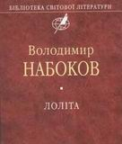
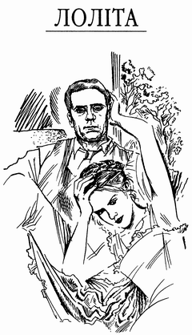

НАБОКОВ Володимир Володимирович
Лоліта (роман), 1955
Про "Лоліту"

"Лолі́та" (англ. Lolita, рос. Лолита) — роман Володимира Набокова. Спочатку написаний англійською та опублікований у 1955 у Парижі, пізніше перекладений самим автором російською та опублікований у 1967 у Нью-Йорку.
Твір здобув світову славу завдяки інноваційному стилю ведення оповіді та своїй контроверсійній темі — стосункам головного героя й оповідача Гумберта Гумберта, чоловіка середніх літ, та його одержимості 12-річною дівчинкою Долорес Гейз та їхнім сексуальним зв’язкам.
Після публікації «Лоліта» стала класичним твором, що репрезентує літературу ХХ століття. Ім’я Лоліта у попкультурі стало назовництвом для молодих дівчат, що рано починають сексуальне життя.
Номер 4 у Рейтингу 100 найкращих книг усіх часів журналу Ньюсвік.
Екранізація
Роман було двічі екранізовано:
Переклади українською
Перший український переклад «Лоліти» вийшов друком у травні 2008 року. Здійснив його Петро Таращук. На вимогу власника авторського права, сина автора «Лоліти» Д. Набокова, український переклад був виконаний з російської версії роману. Він супроводжується примітками П. Бабая, де, зокрема, пояснюються деякі алюзії у творі.
У січні 2018 у видавництві КСД мав вийти переклад українською відомого перекладача Дмитра Дроздовського, зроблений з оригіналу англійською, а не з автоперекладу автора російською. За незрозумілих обставин КСД згодом перенесла реліз українського перекладу на жовтень 2018 року, одночасно змінивши перекладача з Дмитра Дроздовського на Єлену Даскал.
- Владімір Набоков: Лоліта (2008). Переклад з російської: Петро Таращук. Передмова та примітки Павла Бабая. Художники: Б. Бублик, В. Мурликін. Харків: Фоліо. 412 с. ISBN 978-966-03-4128-9
- Володимир Набоков. Лоліта (2018). Переклад з англійської: Єлена Даскал. Харків: КСД. 432 стор. 2018. ISBN 978-617-12-4560-0
- Володимир Набоков. Лоліта. Переклад з російської: Кирило Васюков.

Вашій увазі пропонується російськомовний варіант романа Володимира Набокова "Лоліта" в українському перекладі Петра Таращука.
Лоліта, ч.1 / читати онлайн
(переклад українською мовою: Петро Таращук)
Передмова
Присвячую дружині
«Лоліта. Сповідь Білошкірого Вдівця» — саме такою була подвійна назва дивного тексту, що отримав автор цих нотаток і якому вони тепер передують. Сам «Гумберт Гумберт» помер у в’язниці від тромбозу серцевої аорти 16 листопада 1952 року, за кілька днів до початку судового розгляду своєї справи. Його захисник, мій родич і добрий приятель Клеренс Кларк (нині адвокат, прикріплений до Колумбійського окружного суду), попросив мене відредагувати рукопис, спираючись на заповіт свого клієнта, один пункт якого уповноважував мого шановного кузена вжити на свій розсуд усіх заходів, пов’язаних із підготовкою «Лоліти» до друку. На рішення пана Кларка вплинуло, напевне, те, що обраний ним редактор щойно став лауреатом премії імені Полінґа за скромну працю («Чи можна співчувати почуттям?»), присвячену обговоренню деяких патологічних станів і збочень.
Моє завдання виявилося простішим, ніж ми з ним гадали. Якщо не брати до уваги виправлення очевидних письмових похибок і ретельного вилучення деяких чіпких деталей, які, попри намагання самого «Г. Г.», ще збереглися в тексті, немов своєрідні віхи й пам’ятки (вказівки на місцевості й людей, що їх пристойність вимагала обминути мовчанкою, а гуманність — пощадити), можна вважати, що ці прикметні записи подано в недоторканному вигляді. Химерний псевдонім їхнього автора — його власна вигадка, і, зрозуміла річ, цю маску — крізь яку ніби палають два гіпнотичні ока — годилося зберегти відповідно до бажання людини, що прикрилася нею. Якщо «Гейз» лише римується зі справжнім прізвищем героїні, то її ім’я надто тісно вплетене в найзаповітнішу тканину книжки, щоб можна було змінити його; а втім (як пересвідчиться сам читач), у цьому немає й фактичної необхідності. Допитливі можуть віднайти повідомлення про вбивство, яке скоїв «Г. Г.», у газетах за вересень — жовтень 1952 року; його мотиви і мета й надалі залишалися б таємницею, коли б в освітлене коло моєї настільної лампи не потрапили справжні мемуари.
На догоду старомодним читачам, яких цікавить подальша доля «живих прототипів» за обрієм «правдивої розповіді», я можу подати деякі вказівки, отримані від пана «Віндмюллера» з «Рамздела», який побажав лишитися неназваним, аби «довга тінь скорботної і брудної пригоди» не дотяглася до того містечка, де він має честь проживати. Його донька «Луїза» нині студентка-другокурсниця. «Мона Даль» навчається в університеті в Парижі. «Рита» нещодавно вийшла заміж за власника готелю у Флориді. Дружина «Річарда Скілера» померла під час пологів, народивши мертву дівчинку, 25 грудня 1952 року в далекому північно-західному поселенні Ґрей Стар. Пані Вівіан Дамор-Блок (Дамор — сценічне прізвище, Блок — прізвище одного з її перших чоловіків) написала біографію колишнього товариша під каламбурною назвою «Кумир мій», ця книжка невдовзі має вийти у світ; критики, які вже познайомились із рукописом, кажуть, що це її найкращий твір. Сторожі кладовищ, так чи так згаданих у мемуарах «Г. Г.», не сповіщають, чи встає хто з могили.
Читачеві, що вважає «Лоліту» просто романом, зображені тут ситуації та почуття були б дратівливо-незрозумілі, якби їх знебарвило сороміцьке інакомовлення. Щоправда, в усьому творі годі знайти бодай один непристойний вислів, ба’ більше: здоровило-філістер, привчений сучасними умовностями поглинати без жодної гидливості цілі поклади лихослів’я в найбанальнішому американському чи англійському романі, буде вкрай шокований, побачивши їх відсутність у «Лоліті». А якщо для заспокоєння цього парадоксального святенника редактор спробував би розчинити чи вилучити ті сцени, які, коли мати відомий виверт розуму, можуть видатися «спокусливими» (дивись історичну постанову, що її ухвалив вельмишановний суддя Джон Вулсі 6 грудня 1933 року з приводу іншої, набагато відвертішої книжки), довелося б узагалі відмовитися від публікації «Лоліти», бо саме ті сцени, де нероба-безсоромник міг би добачити довільну чуттєвість, якраз і є конструктивно необхідним елементом розвитку трагічної оповіді, яка неухильно йде до того, що тільки й можна назвати моральним апофеозом. Цинік скаже, мовляв, на те саме претендує й професійний порнограф, а ерудит заперечить, заявивши, що палка сповідь «Г. Г.» зводиться до бурі в пробірці: адже щороку не менше 12% дорослих американців чоловічої статі — за скромними підрахунками, якщо вірити докторові Б’янці Шварцман (запозичую з приватного повідомлення), — переживає той особливий досвід, що його з таким відчаєм зображує «Г. Г.», і якби наш божевільний мемуарист пішов того фатального літа 1947 року до тямущого психопатолога, ніякого лиха не сталося б. Це все так, але ж у такому разі не було б і цієї книжки.
Нехай буде дарована провина цьому коментаторові, якщо він ще раз повторить те, на чому вже не раз наполягав у своїх власних працях та лекціях, а саме: «непристойне» зчаста буває еквівалентне «незвичайному». Видатний художній твір завжди оригінальний; за самою своєю сутністю він має приголомшувати і вражати, тобто «шокувати». Я не маю жодного бажання прославляти пана «Г. Г.». Немає сумніву, що він гидкий і ниций, що він править за яскравий приклад моральної прокази і в ньому поєднані лють та грайливість, які, може, й свідчать про найтяжче страждання, але не надають привабливості деяким його виливам. Його дивакуватість, звісно, важкувата. Чимало його випадкових відгуків про жителів і природу Америки кумедні. Відчайдушна щирість, якою бринить його сповідь, аж ніяк не звільняє його від відповідальності за диявольську витонченість. Він ненормальний. Він не джентльмен. Але з якою чарівливістю його співуча скрипка пробуджує в нас ніжне співчуття Лоліті, спонукаючи зачитуватися книжкою, незважаючи на відчуту до її автора огиду!
Як описові клінічного випадку «Лоліті» безперечно судилося стати одним із класичних творів психіатричної літератури, і можна ручитися, що через десять років термін «німфетка» буде у словниках і газетах. Як художній твір «Лоліта» виходить далеко за межі сповіді-каяття, але набагато важливішим за її наукове значення й художню вартість ми повинні вважати її моральний вплив на серйозного читача, бо цей вимучений аналіз одиничного випадку містить у собі й загальну мораль. Залишена без нагляду дівчинка, зосереджена на собі мати, маніяк, що аж захлинається від хіті, — усі вони не лише яскраві персонажі неповторної розповіді, а й, до того ж, попереджають нас про небезпечні ухили, вказують на можливі нещастя. «Лоліта» мала б спонукати нас усіх — батьків-матерів, соціальних працівників, педагогів — з більшою пильністю і прозірливістю присвятити себе справі виховання здоровішого покоління за теперішнє і в надійнішому світі.
Джон Рей, доктор філософії,
Відворт, Массачусетс,
5 серпня 1955 р.
Частина друга ❯❯
Частина перша
1.
Лоліта, світоч мого життя, шал моїх чресел. Гріх мій, душа моя. Ло-лі-та: кінчик язика долає шлях у три крочки піднебінням, щоб на третьому вдаритись об зуби. Ло. Лі. Та.
Вона була Ло, просто Ло, вранці, заввишки сто сорок чотири сантиметри (без п’яти міліметрів і в одній шкарпетці). Вона була Лола в довгих штанях. Вона була Доллі у школі. Вона була Долорес на пунктирі бланків. Але в моїх обіймах завжди була Лолітою.
А чи мала вона попередниць? Аякже, мала... Ба’ більше: і Лоліти не було б ніякої, якби одного далекого літа я не закохався в найпершу дівчинку. У якомусь князівстві побіля моря (майже як у По).
А коли ж це було?
Приблизно за стільки ж років до народження Лоліти, скільки я мав того літа. Можна завжди покластися на вбивцю, коли йдеться про вигадливість прози.
Шановні присяжні жіночої та чоловічої статі! Експонат Номер Один є тим, чому так заздрили Едгарові серафими — кепсько обізнані, простодушні, шляхетнокрилі серафими... Ану помилуйтесь цим клубком тернів.
2.
Я народився 1910 року, в Парижі. Мій батько вирізнявся лагідним серцем, легкою вдачею — і цілим вінегретом генів: був швейцарський громадянин, напівфранцуз-напівавстрієць, з дунайським прожилком. А тепер я роздам кілька гарненьких лискучо-блакитних листівок.
Батькові належав розкішний готель на Рив’єрі. Його батько та обидва діди торгували вином, діамантами й шовками (визначайте самі). У тридцять років він побрався з англійкою, донькою альпініста Джерома Дунна, онукою двох дорсетських пасторів, експертів з вигадливих предметів: палеопедології та еолових арф (визначайте самі). Обставини і причина смерті моєї досить фотогенічної матері були вельми оригінальні (пікнік, блискавка), а я тоді мав лише три роки, і, крім якогось теплого глухого закутка в найтемнішій минувшині, у мене нічого не лишилося від неї в улоговинах і западинах пам’яті, за якими — якщо ви ще здатні витримувати мій стиль (пишу під наглядом) — сідає сонце моїх малечих літ: усі ви, напевне, знаєте ці запашні рештки дня, що зависають разом з комашнею десь над квітучим живоплотом, і ти раптом опиняєшся в них на прогулянці, проминаєш їх попід пагорком у літніх сутінках — глуха теплінь, золотава комашня.
Старша материна сестра, Сибілла, що була вийшла заміж за двоюрідного брата мого батька, — а втім, чоловік невдовзі кинув її, — жила в нас чи то як безкоштовна гувернантка, чи то як економка. Згодом я чув, що вона була закохана в мого батька й одного разу, дощової днини, він легковажно скористався її почуттям — але забув геть усе, тільки-но розпогодилось. Я дуже любив її, незважаючи на суворість — фатальну суворість — деяких її правил. Можливо, їй хотілося, щоб я був доброчеснішим удівцем, аніж батько. Тітка Сибілла мала лазурові, обведені рожевим очі й жовте, мов віск, обличчя. Вона писала вірші. Була поетично забобонна. Казала, ніби знає, коли помре, а саме: коли мені виповниться шістнадцять років, — і так воно й сталося. Її чоловік, випробуваний вояжер від парфумерної фірми, крутився здебільшого в Америці, де зрештою заснував власне підприємство й придбав якесь майно.
Я ріс щасливою, здоровою дитиною в яскравому світі книжок з малюнками, чистого піску, помаранчевих дерев, приязних псів, морської далечіні й усміхнених облич. Пишний готель «Мірана Палас» обертався навколо мене, неначе приватний всесвіт, вибілений крейдою космос, посеред іншого, блакитного й неозорого, що іскрився зовні. Від кухонного служки у фартуху до короля в літньому костюмі — всі любили, всі бестили мене. Літні американки, зіпершись на тростину, нахилялися наді мною, ніби пізанські вежі. Позбавлені статків російські княгині не мали змоги заплатити моєму батькові, а мені купували дорогі цукерки. А він, mon cher petit papa (мій любий татусь), брав мене кататися на човні та їздити на велосипеді, вчив мене плавати, пірнати, ковзати на водяних лижвах, читав мені «Дон Кіхота» й «Les Miserables» («Знедолені», роман В.Гюґо), і я обожнював і шанував його, й радів за нього, коли траплялося підслухати, як слуги обговорюють його розмаїтих коханок — ласкавих красунь, що ревно піклувалися про мене, воркуючи наді мною і ллючи неоціненні сльози над моєю досить веселою безматірністю.
Я навчався в англійській школі, що була за кілька кілометрів від дому; там я грав у «rackets» («ракетки») і «fives» («п’ятірки», гра в м’яч) (б’ючи м’ячем об стіну ракеткою чи долонею), отримував відмінні оцінки й чудово ладив і з товаришами, і з наставниками. До тринадцяти років (тобто до зустрічі з моєю маленькою Аннабеллою) мені трапилось, як пригадую, пережити тільки два епізоди безперечно сексуального характеру: врочисту, добропорядну й суто теоретичну розмову про деякі несподівані явища підліткового віку, що відбулася в шкільному розарії з американським хлопчиком, сином відомої тоді кінематографічної актриси, яку він рідко бачив у тривимірному світі; і досить цікаву реакцію з боку мого організму на перлисто-матові знімки з безкінечно ніжними тіньовими заглибинами в розкішному альбомі Пішона «La beaute humaine» («Людська краса»), який одного разу я нишком витяг з-під купи мармуристих томів лондонського часопису «Graphic» у готельній бібліотеці. Згодом батько з властивою йому благодушністю розповів мені дещо, повідомивши про речі, які, на його думку, могли стати мені в нагоді; це було восени 1923 року, перед моїм вступом до гімназії в Ліоні (де я мав провести три зими), але якраз улітку того року батько мій, на жаль, був відсутній, — їздив по Італії разом з Mme de R. (Пані Р.) та її донькою, — тож я не мав кому поскаржитись, не мав з ким порадитися.
3.
Аннабелла, як і автор, мала мішане походження, в даному разі — англійське й голландське. Нині я пам’ятаю її риси куди менш виразно, ніж пам’ятав до зустрічі з Лолітою. Зоровій пам’яті властиві два підходи: при першому вдається майстерно відтворити образ в лабораторії мозку, не заплющуючи очей (і тоді Аннабелла постає переді мною в загальних контурах, як-от: «медового відтінку шкіра», «тоненькі руки», «підстрижені руді коси», «довгі вії», «великі яскраві вуста»); а при другому заплющуєш очі й миттю проєктуєш на темну, внутрішню поверхню повік об’єктивне, оптичне, напрочуд точне відтворення любих рис: маленький привид у природних барвах (саме так я бачу Лоліту).
Тому дозвольте мені, описуючи Аннабеллу, обмежитися поштивою заувагою, що то була чарівна дівчинка, на кілька місяців молодша від мене. Її батько-мати, на прізвище Лі (Leigh), давні друзі моєї тітки, не менш ревно, ніж тітка Сибілла, дбали про пристойність. Вони наймали віллу неподалік від «Мірани». Того лисого, бурого пана Лі і гладку, напудрену пані Лі я ненавидів люто.
Спершу ми з Аннабеллою розмовляли, так би мовити, коло й навколо. Вона раз по раз набирала жменю дрібного пляжного пісочку й пускала крізь пальці. Мозок у нас обох був настроєний у тон розумним європейським підліткам тодішньої доби й нашого середовища, і я сумніваюсь, що можна було б знайти якусь індивідуальну талановитість у нашій цікавості до множини населених світів, тенісних змагань, нескінченності, соліпсизму та інших, подібних до них речей. Тендітність і вразливість молодих тваринок пробуджувала в нас обох однаково гострі муки. Вона мріяла бути сестрою милосердя в якійсь голодній азіатській країні; я мріяв стати знаменитим шпигуном.
Раптом з’ясувалося, що ми закохані одне в одного — нестямно, незграбно, безсоромно, болісно; я б додав — безнадійно, бо наше несамовите прагнення володіти одне одним можна було б угамувати тільки тоді, якби кожен з нас і справді увібрав і засвоїв кожну часточку тіла й душі іншого; тим часом ми навіть не могли знайти місця, де б злягтися, як без клопоту знаходять його діти халуп. Після одного невдалого нічного побачення в неї в саду (про яке в наступному розділі) єдине, що нам дозволяли, коли йшлося про зустрічі, — це лежати в межах досяжності дорослих, зорової, якщо не слухової, на тій частині пляжу, де товклося найбільше людей. Там, на м’якому піску, за кілька кроків від старших, ми валялися цілий ранок у заціпенілій одержимості любовної муки й користалися кожним благословенним ґанджем у тканині часу і простору, щоб торкнутися одне одного: її рука, крізь пісок, підповзала до мене, підсувалася щораз ближче, переставляючи вузькі засмаглі пальці, а потім і її перламутрове коліно вирушало в ту саму довгу, обережну подорож; іноді випадковий вал, споруджений тілами інших, менших дітей, ставав нам прикриттям для солоного поцілунку мигцем; ті недосконалі дотики доводили наші здорові й недосвідчені тіла до такого ступеня збудження, що навіть прохолода блакитної води, під якою ми й далі шукали своєї мети, не заспокоювала нас.
Серед скарбів, які я загубив у роки пізніших поневірянь, була маленька фотографія, що її зняла моя тітка, зафіксувавши групу за столиком тротуарної кав’ярні: Аннабеллу, її батька-матір і вельми статечного доктора Купера, кульгавого старигана, який того літа залицявся до тітки Сибілли. Аннабелла вийшла не дуже добре, бо була заскочена тієї миті, коли піднесла до вуст свій chocolat glace (холодний шоколадний напій), і тільки худі голі плечі й проділ на голові давали змогу впізнати її (я ж пам’ятаю знімок) серед сонячної каламуті, в якій поступово й без вороття розчинялася її краса; натомість я, сидівши в профіль, трохи поодаль від решти, набув якоїсь драматичної рельєфності: понурий густобровий хлопчик у темній спортивній сорочці й білих, добре пошитих шортах, що заклав ногу на ногу й дивився вбік.
Фотографію зняли останнього дня нашого фатального літа, всього за кілька хвилин до нашої другої і останньої спроби ошукати долю. Назвавши якусь украй прозору причину (іншої нагоди не буде, тож уже ніщо не мало значення), ми пішли з кав’ярні на пляж, де нарешті знайшли безлюдне місце, і там, у бузковому затінку рожевих скель, нахилених, мов склепіння печери, нашвидку обмінялися пожадливими пестощами, єдиним свідком яких були чиїсь загублені темні окуляри. Я стояв навколішки і вже був ладен узяти свою ясочку, як раптом двійко бороданів-купальників — морський дідуган із братунем — вийшли з води, підбадьоривши мене непристойними криками, а через чотири місяці Аннабелла померла від тифу на острові Корфу.
4.
Знову і знову гортаю ці жалюгідні спогади і знай дошукуюсь у собі, чи не звідти, чи не з блиску того далекого літа пішла тріщина через усе моє життя. Чи, може, моя гостра закоханість у ту дитину була тільки першою ознакою природженого збочення? Намагаючись розібратися в колишніх бажаннях, намірах, діях, я піддаюсь якійсь зворотній уяві, що живить аналітичну здатність безмежними можливостями, тож кожен минулий шлях, поставши переді мною, галузиться без краю в до одуру складній перспективі пам’яті. І все-таки я певен, що урочим і фатальним чином Лоліта почалася з Аннабелли.
Знаю й те, що Аннабеллина смерть зафіксувала невдоволеність того маревного літа і стала перешкодою для всякого іншого кохання впродовж холодних літ моєї юності. Духовне й тілесне зливались у нашому коханні з такою досконалістю, яка й не снилася теперішнім підліткам, що дивляться на все просто зі своїми невигадливими почуттями і штампованими мозочками. Ще довго після смерті Аннабелли я відчував, як її думки течуть крізь мої. Задовго до нашої зустрічі нам траплялися однакові сновидіння. Ми зіставляли віхи. Знаходили риси дивної схожості. У червні одного року (1919-го) до неї додому і до мене додому, у двох несуміжних країнах, залетіла чиясь канарка. О, Лоліто, якби ж і ти кохала мене так!
Я лишив на кінець розповіді про Аннабеллу опис нашого прикрого першого побачення. Одного разу пізно ввечері їй пощастило ошукати злостиву пильність батька-матері. У гайку нервових, тонколистих мімоз позаду вілли ми знайшли собі місце на руїнах невисокого муру. У пітьмі крізь тендітні деревця видніли арабески освітлених вікон вілли, що їх тепер, трохи підправлені кольоровим чорнилом чутливої пам’яті, я порівняв би з гральними картами (почасти, може, тому, що ворог грав там у бридж). Вона тремтіла й посмикувалася, поки я цілував її в кутик напіврозтулених вуст і в гарячу мочку вуха. Розсипані зорі блідо горіли над нами поміж силуетів видовженого листу, і та чуйна безодня здавалася не менш оголеною, ніж Аннабелла під легенькою сукенкою. На тлі неба її обличчя ясніло напрочуд виразно, немов світилося власним слабеньким сяєвом. Її ноги, її чарівні, жваві ніжки, були не дуже тісно стулені, й коли моя рука знайшла те, чого шукала, вираз якоїсь русалчиної замріяності — чи то біль, чи то насолода — проступив на її дитячому личку. Сидячи трохи вище від мене, вона в самотній своїй солодкій сп’янілості тягнулася до моїх вуст, голова її схилялася сонним, млосним, майже страдницьким рухом, а її голі колінця ловили, стискали мою руку і знову слабнули. Її тремкі вуста, кривлячись від гіркоти таємничого зілля, з легким придихом наближалися до мого обличчя. Вона намагалася вгамувати біль кохання тим, що різко терла свої сухі губи об мої, й раптом відхилялася, рвійно махнувши кучерями, а потім знову похмуро линула й дозволяла мені всотувати свої розкриті вуста, а я тим часом, великодушно ладний подарувати їй усе — моє серце, горло, нутрощі, — давав їй тримати незграбним кулачком скіпетр моєї пристрасті.
Пам’ятаю запах якоїсь пудри, що її, здається, вона крала в материної покоївки-іспанки: солодкавий, дешевий, мускусний дух; він зливався з її власним бісквітним запахом, і раптом чаша моїх почуттів виповнилась ущерть, і тільки несподівана метушня під найближчим кущем завадила їм перелитися. Ми заціпеніли і з болісним щемом у жилах дослухалися до шуму: мабуть, то тільки кицька, що вийшла на полювання. Але водночас, на жаль, від будинку долинув голос пані Лі, що гукала доньку з диким наростанням перекатів, і доктор Купер важко прошкутильгав з веранди в сад. Але та мімозова порость, зоряна мла, дрижаки, вогонь, медова роса й моя мука лишилися зі мною, і та дівчинка з гладенькими від моря ногами й полум’яним язиком відтоді ніколи не давала мені спокою — аж поки, як минуло двадцять чотири роки, я розвіяв примари, воскресивши її в іншій.
5.
Дні моєї юності, коли озирнутися на них, видаються блідим вихором повторюваних клаптиків, який летить геть від мене, ніби ранішня заметіль використаних папірців, що їх бачить пасажир американського експреса в заднє спостережне вікно останнього вагона. У своїх гігієнічних зв’язках із жінками я був практичний, глузливий і швидкий. Упродовж університетських років у Лондоні й Парижі я задовольнявся купованими штучками. До науки я брався ревно й пильно, але не дуже плідно. Спершу я думав стати психіатром, як чимало невдах, але я був особливий невдаха; мене огорнула дивна втома (треба піти до лікаря — яка нудьга), і я взявся за вивчення англійської літератури, яким живиться не один поет-пустоцвіт, обернувшись у професора з люлькою, в піджаку з добротного сукна. Париж тридцятих років пасував мені. Я обговорював радянські фільми з американськими літераторами. Я сидів з ураністами в кав’ярні «Des Deux Magots» («Дві мавпочки»). Я публікував звивисті розвідки в часописах, яких майже ніхто не читав. Я складав пародії, скажімо, на Еліота:
Нехай фрейлейн фон Кульп, ще тримаючись
За клямку, озирнеться... Ні,
Не піду ані за нею, ані за фрескою.
Ані за тою чайкою...
Одна з моїх праць під назвою «Прустівська тема в листі Кітса до Бенджаміна Бейлі» викликала схвальні усмішки в шести-семи вчених, які прочитали її. Я заходився писати «Коротку історію англійської поезії» для видавця з гучним ім’ям, а потім почав компонувати той підручник французької літератури (з порівняльними прикладами з літератури англійської) для американських і британських читачів, якому судилося поглинати мою увагу протягом сорокових років і останній том якого був майже готовий до друку в день мого арешту.
Я знайшов службу: викладав англійську мову групі дорослих парижан шістнадцятого округу. Потім упродовж двох зим учителював у чоловічій гімназії. Іноді я користався зі знайомств у середовищі психіатрів і працівників соціального нагляду, щоб відвідувати з ними різні установи, скажімо, сиротинці і школи для неповнолітніх злочинниць, де на блідих, зі злиплими віями дівчаток я міг дивитися з тією цілковитою безкарністю, яку даровано нам у сновидіннях.
А тепер я хочу викласти ось таку думку. У вікових межах від дев’яти до чотирнадцяти років трапляються дівчатка, що деяким чарівливим мандрівцям, удвічі, а то й у кілька разів старшим від них, являють свою справжню сутність — не людську, а німфічну (тобто демонічну), і цих маленьких обраниць я пропоную називати так: німфетки.
Читач помітить, що просторові уявлення я замінюю уявленнями часу. Ба більше: я б хотів, щоб він бачив ті межі, дев’ять-чотирнадцять років, як видимі обриси (дзеркальні мілини, червонясті скелі) зачаклованого острова, на якому водяться мої німфетки й навколо якого широкий туманний океан. Постає запитання: чи всі дівчатка в цих вікових межах — німфетки? Звісно, ні. Інакше ми, втаємничені, ми, самотні мореплавці, ми, німфолепти, давно позбулися б глузду. Але й краса не править за критерій, тим часом як вульгарність (чи бодай те, що називають вульгарністю в тому чи тому середовищі) не відкидає неодмінно наявності тих таємничих рис — казково-дивної грації, невловної, мінливої, душевбивчої, підступної чарівливості, — які вирізняють німфетку поміж перевесниць, незрівнянно залежніших від просторового світу одночасних явищ, ніж від невагомого острова зачаклованого часу, де Лоліта бавиться з подібними до неї. У тих самих вікових межах число справжніх німфеток набагато менше від кількості негарних, або просто «миленьких», або навіть «гарненьких», але геть пересічних, пухкеньких, бахматих, холодношкірих, людських за своєю природою дівчаток із круглими животиками та кісками, що можуть або не можуть перетворитися потім у гарних, як кажуть, жінок (ану гляньте на яку-небудь бридку пампушечку в чорних панчохах і білому капелюшку, що перевтілюється в дивовижну екранну зірку). Якщо попросити нормального чоловіка показати найгарнішу дівчинку на груповому знімку школярок або дівчаток-скаутів, він не завжди ткне в німфетку. Треба бути художником і шаленцем, грищем безкінечних скорбот із пляшечкою гарячої отрути в корені тіла й надласолюбним полум’ям, що палахкотить споконвіку в чуйному хребті (о, як доводиться нам нишкнути й ховатися!), щоб упізнати одразу, за непоясненними прикметами — трохи котячим обрисом вилиць, витонченістю й шовковистістю членів та іншими ознаками, перелічувати які мені забороняють відчай, сором, сльози ніжності — маленького смертоносного демона в юрбі звичайних дітей: адже вона, німфетка, стоїть серед них невпізнана, не відчуваючи сама своєї несвітської влади.
І ще: з огляду на примат часу в цій чаклунській сфері науковий співробітник має бути готовий узяти до уваги, що потрібна різниця в кілька років (я б сказав, не менше десяти, а здебільшого в тридцять або сорок — і до дев’яноста в нечисленних відомих випадках) між дівчинкою та чоловіком, щоб той міг піддатися чарам німфетки. Тут ідеться про акомодацію кришталика, певну відстань, яку внутрішнє око з приємною бентежністю долає, і про певний контраст, що його розум сприймає з судомою порочної насолоди. «Коли я був дитина, й вона була дитина» (і далі Едгарів перегар), моя Аннабелла не була для мене німфеткою; я був рівня їй; якщо озирнутися, я й сам був фавником на тому самому зачаклованому острові часу, але тепер, у вересні 1952 року, коли збігло двадцять дев’ять років, мені здається, ніби я можу добачити в ній початкову згубну ману. Ми кохали передчасним коханням, що вирізняється тією несамовитістю, яка так часто розбиває життя зрілих людей. Я був міцненький хлопець і вижив; але отрута лишилася в рані, і ось уже я мужнів у лоні нашої цивілізації, яка дозволяє чоловікові захоплюватися дівчиною шістнадцятирічною, але не дівчинкою дванадцятирічною.
Тож не дивно, що моє доросле життя в Європі було страхітливо двоїсте. Зовні я мав так звані нормальні стосунки із земнородними жінками, в яких груди гарбузами чи грушами, а всередині мене палив пекельний вогонь зосередженої хтивості, що її збуджувала в мені кожна німфетка, яка трапиться на очі й до якої, бувши законослухняним боягузом, я не смів підступитися. Дебелі людські самиці, якими мені дозволяли користуватися, правили тільки за паліатив. Я ладен повірити, що відчуття, видобуті мною з природного злягання, більш-менш дорівнювали тим, які властиві нормальним великим чоловікам, що спілкуються з нормальними великими жінками в тому рутинному ритмі, який струшує світ; але лихо полягає в тому, що тим панам, на відміну від мене, не довелося пізнати проблиск незрівнянно гострішого блаженства. Найтьмяніше з моїх сновидінь, які вели до полюції, було в тисячу разів яскравішим від перелюбів, що їх наймужніший геній або найталановитіший імпотент могли б уявити собі. Мій світ був розчахнутий. Я відчував присутність не однієї, а двох статей, з яких ані та, ані та не була моєю; обидві були жіночі для анатома, а я, дивлячись крізь особливу призму почуттів, бачив, що «вони не менше різняться між собою, аніж мрія і мряка». Цьому всьому тепер я надаю раціональної подоби, але в двадцять-двадцять п’ять років я не так добре розумівся на своїх стражданнях. Тіло чудово знало, чого жадає, але мій розум відхиляв кожне його благання. Мене охоплювали то страх і сором, то відчайдушний оптимізм. Мене душили суспільні заборони. Психоаналітики вабили мене псевдозвільненням від лібідо-лободи. Єдиними об’єктами любовного трепету були для мене Аннабеллині сестри й повірниці, її кордебалет, і це інколи видавалося мені призвісткою божевілля. Інколи я казав собі, що все залежить від кута зору і, власне, немає нічого поганого в тому, що мене нестямно бентежать малолітні дівчатка. Дозволю собі нагадати читачеві, що в Англії, відколи там ухвалено закон (1933 року) про дітей і молодих осіб, термін girl-child (тобто дівчинка) визначають як «особа жіночої статі, що має більше восьми й менше чотирнадцяти років» (потім, від чотирнадцяти до сімнадцяти, її статус визначають як «молода особа»). З іншого боку, в Америці, а саме: в Массачусетсі, термін wayward child (непутяща дитина) характеризує з погляду права дівчинку від семи до сімнадцяти років, що «спілкується з порочними й аморальними особами». Г’ю Броутон, письменник-полеміст за доби Якова І, довів, що Рахав була блудницею в десять років. Це все дуже цікаве, і я припускаю, що ви вже бачите, як у мене запінюються вуста перед нападом, — але ні, нічого не піниться, я просто випускаю-виклацую барвисті блішки щасливих думок у відповідну їм чашечку. Ось іще образки. Ось Вергілій, що (цитую давнього англійського поета) «німфетку в тоні одному оспівав», хоча, мабуть, віддавав перевагу промежині хлопчика. Ось дві, ще незрілі доньки фараона Ехнатона і його дружини Нефертіті, що мали шестеро таких — нільських, голомозих, голеньких (нічого, крім багатьох разків намиста), з м’якими брунатними ягнячими черевцями, видовженими ебеновими очима, вони спокійно вмостилися на подушках і абсолютно цілі після трьох тисяч років. Ось низка десятирічних наречених, яких змушують сісти на фасциній — кілок зі слонової кості в храмах класичної освіти. Шлюб і співжиття з дітьми в деяких районах Індії трапляються ще досить часто. Тож вісімдесятирічні старці паруються з восьмирічними дівчатками, і кому яке діло? Зрештою, Данте нестямно закохався у свою Беатріче, коли їй минуло лише дев’ять років, такій іскристій, мальованій, милій, у багряній сукні з коштовними самоцвітами, і сталося це 1274 року, у Флоренції, на приватному бенкеті, у веселому місяці травні. А коли Петрарка нестямно закохався у свою Лаурину, вона була білявою німфеткою дванадцяти літ, що мчала під вітром, крізь пил і цвітінь, летючою квіткою, серед чудової рівнини, яку видно з Воклюзьких пагорбів.
Але будьмо штивні та культурні. Гумберт Гумберт ревно намагався бути хорошим. Їй-богу, намагався. Він украй дбайливо ставився до звичайних дітей, до їхньої чистоти, не захищеної від образ, і за жодних обставин не зазіхнув би на невинність дитини, якби існувала бодай найменша можливість скандалу. Але як калатало в бідолахи серце, коли серед невинного дитячого гурту він помічав дитину-демона, enfant charmante et fourbe (дитя чарівне і лукаве) — млосні очі, яскраві вуста, десять років каторги, коли покажеш їй, що дивишся на неї. Так минало життя. Гумберт був цілком здатний мати зв’язки з Євою, але мріяв він про Ліліт. Бруньковида стадія розвитку грудей рано (в 7—10 років) настає в низці соматичних змін, які супроводять наближення статевої зрілості. А наступна відома нам ознака — поява (в 11—12 років) пігментованих волосинок. У моїй чашечці повнісінько блішок.
Кораблетроща. Кораловий острів. Я сам зі скуленою від холоду донькою пасажира-потопельника. Ясочко, таж це лише гра! Які чудові пригоди я інколи уявляв собі, сидячи на твердій лаві в міському парку і прикидаючись заглибленим у приховану маревом книжку. Навколо смиренного ерудита розкуто пустували німфетки, неначе він був паркова статуя, якої вже не помічають, або фрагмент світлотіні під старим деревом. Одного разу досконала кралечка в шотландській спідничці з гуркотом поставила важкоозброєну ногу коло мене на лаву, щоб занурити в мене свої оголені руки й затягти ремінь роликового ковзана, — і я розчинився в сонячних плямах, скориставшись книжкою як фіговим листком, тим часом як русі локони спадали їй на подряпане коліно, й тінь від дерева, яку я поділяв із нею, пульсувала й танула на її литці, що сяяла так близько від моєї хамелеонової щоки. Іншого разу рудокоса школярка повисла наді мною у вагоні метро, і жовтогарячий пушок у неї під пахвою був одкровенням, що на багато тижнів лишилось у моїй крові. Я б міг переповісти чимало таких односторонніх мініатюрних романів. Кінець деяких із них був приправлений пекельним трунком. Інколи, наприклад, уночі, в освітленому вікні по той бік вулиці, я помічав з балкона німфетку, що роздягалася перед послужливим дзеркалом. У тій відокремленості, у тій віддаленості видиво набувало напрочуд гострої зваби, яка змушувала мене, балконного глядача, мчати щодуху до свого самотнього задоволення. Але з диявольською раптовістю ніжний візерунок оголеності, вже прийнявши від мене дар поклоніння, перетворювався в осяяний лампою огидний голий лікоть чоловіка у спідній білизні, що читав газету коло відчиненого вікна душної, вогкої, безнадійної літньої ночі.
Стрибання через мотузочку. Стрибання на одній нозі по розкресленому крейдою тротуару. Незабутня стара в чорному, що сиділа поряд зі мною на парковій лаві, цій катівні мого блаженства (німфетка піді мною намагалася намацати закочену скляну кульку), і спитала мене, — зухвала відьма, — чи не болить мені живіт. Ох, лишіть мене в моєму парку, що вкривається цвітом, у моєму замшілому саду. Нехай граються вони навколо мене довіку, ніколи не дорослішаючи.
6.
До речі: я часто запитував себе, що ставалося з ними потім, з отими німфетками. У нашому чавунно-гратчастому світі причин і наслідків чи не міг тремт, який я викрав у них, позначитися на їхньому майбутньому? Ось, була моєю — і ніколи не дізнається. Гаразд. Але чи не дасться взнаки це згодом, чи я не зіпсував якимсь чином її майбутню долю тим, що втягнув її образ у свою потаємну хіть? О, це було й буде предметом великих і страхітливих сумнівів!
А втім, я з’ясував, у що перетворюються, підрісши, ті знадливі німфетки, які знетямлюють нас. Пам’ятаю, я плентався якось надвечір велелюдною вулицею, навесні, в центрі Парижа. Тоненька, невисока на зріст дівчина пройшла повз мене швидким підстрибом на високих підборах; ми одночасно озирнулися; вона зупинилась, і я підійшов до неї. Голова її ледве сягала моєї нагрудної шерсті, личко було кругле, з ямочками, його часто можна побачити в молодих француженок. Мені сподобалися її довгі вії й перлисто-сірий tailleur (костюм), що облягав її юне тіло, яке ще зберігало (оце й було німфічним відлунням, холодком насолоди, поривом шалу у чреслах) щось дитяче, додане до професійного fretillement (виляння) її невеличкого зграбного заду. Я запитав її про ціну, і вона миттю відповіла з музикальною срібною точністю (пташка — воістину пташка!): «Cent» («Сто»). Я спробував торгуватися, але вона оцінила дике глухе жадання в моїх очах, націлених з такої висоти на її кругле чоло й зародковий капелюшок (букетик і бант): «Tant pis» («нічого не вдієш»), — мовила вона, моргнувши, і вдала, ніби йде. Я подумав: таж лише три роки тому я міг бачити, як вона повертається додому зі школи! Ця картина вирішила справу. Вона повела мене вгору звичайними крутими сходами зі звичайним сигналом дзвінка, що повідомляв добродієві, який не бажав бачити іншого добродія, що шлях вільний або невільний — понурий шлях до огидної кімнати, де були тільки ліжко й біде. Як і завжди, вона передусім попросила свій petit cadeau (подарунок) і, як і завжди, я спитав про її ім’я (Моніка) і вік (вісімнадцять). Я був добре обізнаний з банальними манерами повій: від них усіх чуєш оце dix-huit (вісімнадцять) — виразне цвірінькання з ноткою мрійного ошуканства, і цей звук вони, бідолашки, видають до десяти разів за добу. Але в даному разі було зрозуміло, що Моніка радше додає собі, ніж відкидає, років два. Це я виснував з багатьох подробиць її компактного, немов виточеного й напрочуд нерозвиненого тіла. На диво швидко роздягнувшись, вона постояла з хвилину коло вікна, напівзакутавшись у каламутну вуаль завіси, слухаючи з дитячою втіхою (що в книжці було б халтурою) катеринку, яка грала на вже затопленому сутінками подвір’ї. Коли я оглянув її рученята і звернув її увагу на брудні нігті, вона мовила, простодушно насупившись: «Oui, ce n’est pas bien» («Атож, це недобре»), і була пішла до вмивальника, але я сказав, що це пусте, не варто перейматися. З підстриженими темними косами, світло-сірим поглядом і блідою шкірою вона була напрочуд чарівлива. Стегна в неї були не ширші, ніж у хлопчика, що сидить навпочіпки. Ба’ більше, я без вагань можу стверджувати (ось, власне, чому я з такою вдячністю затягую оте перебування з маленькою Монікою у кисільно-сірій келії спогаду), що з тих вісімдесяти або дев’яноста шльондр, які тієї або тієї пори, на моє прохання, опікувалися мною, вона була єдина, що кольнула мене вістрям справжньої насолоди. «Il e'tait malin, celui qui a invente се truc-la» («Хитрун був той, хто вигадав оце») — люб’язно зауважила вона й повернулася в одягнений стан з тією самою високого стилю швидкістю, з якою вийшла з нього.
Я запитав, чи не дасть вона мені ще одне, ґрунтовніше побачення того самого вечора, й вона пообіцяла зустріти мене коло кав’ярні на розі, додавши, що протягом усього свого маленького життя ще ніколи нікого не ошукала. Ми повернулися до тієї самої кімнати. Я не міг утриматися, щоб не сказати їй, яка вона гарненька, на що вона скромно відповіла: «Tu es bien gentil de dire ca» («Ти такий люб’язний»), а потім, помітивши те, що я й сам помітив у дзеркалі, яке відображувало наш тісний едем, а саме: страхітливу гримасу ніжності на моїх скривлених вустах, запопадлива Моніка (ох, вона безперечно була колись німфеткою!) захотіла дізнатися, чи не стерти їй, avant qu’on se couche (перед тим, як лягти), шар фарби з вуст про випадок, якщо захочу поцілувати її. Звичайно, захочу. З нею я дав собі волю більшою мірою, ніж з якоюсь іншою молодою гетерою, і моє останнє враження від Моніки та її довгих вій тієї ночі відлунює чимсь веселим, чого немає в інших спогадах, пов’язаних з моїм принизливим, убогим і похмурим статевим життям. Коли я дав їй на п’ятдесят франків більше, ніж домовились, вигляд у неї був украй задоволений, і вона задріботіла в нічну квітневу мряку з важким Гумбертом, що сунув слідом за її вузенькою спиною. Зупинившись перед вітриною, сказала, смакуючи: «Je vais m’acheter des bas!» («Куплю собі панчохи!») — і не дай мені Боже забути коли-небудь тихенький лускіт дитячих вуст тієї парижаночки на слові «bas», вимовленому так соковито, що «а» мало не перетворилося на коротеньке жваве «о».
Наступне наше побачення відбулося наступного дня, о другій п’ятнадцять пополудні в мене на квартирі, але виявилось менш задовільним: за ніч вона немов подорослішала, перейшла до старшого класу, а до того ж дуже застудилася. Заразившись від неї нежитем, я скасував четверту зустріч, а втім, і радий був припинити наростання почуття, що загрожувало обтяжити мене моторошними мареннями і млявим розчаруванням. Тож нехай вона лишиться гладенькою тоненькою Монікою — такою, якою була протягом тих двох-трьох хвилин, коли безпритульна німфетка проглядала крізь вправну молоду повію.
Моє нетривале знайомство з нею навіяло мені кілька думок, які, мабуть, видаватимуться надто очевидними читачеві, що тямить у таких речах. За оголошенням у непристойному журнальчику я опинився, одного звитяжного дня, в конторі такої собі Mlle Edith (Мадемуазель Едіт), яка почала з того, що запропонувала мені обрати собі супутницю життя з-поміж досить офіційних фотографій у досить засмальцьованому альбомі («Regardez-moi cette belle brune» («Погляньте на цю гарну брюнетку»), — вже у весільній сукні). А коли я відсунув альбом і незграбно, на превелику силу, розповів про свою злочинну мрію, вона глянула так, немов збиралася прогнати мене. Однак, поцікавившись, скільки я ладен викласти, милостиво пообіцяла познайомити мене з особою, яка «могла б залагодити справу». Наступного дня астматична, розмальована, балакуча, пропахла часником жінка, з майже фарсовим провансальським акцентом і чорними вусами над синявою губою, повела мене, мабуть, до свого власного притулку і там, спершу поцілувавши з виляском зібрані докупи пучки товстих пальців, щоб увиразнити якість свого ласого, мов трояндочка, товару, театрально відсмикнула завісу, за якою виявилась половина, що правила за всіма ознаками за спальню численній і невибагливій родині, але на сцені тепер не було нікого, крім страхітливо вгодованої, смаглявої, огидно бридкої дівчини, років принаймні п’ятнадцяти, з малиновими стрічками у важких чорних косах, що сиділа на стільці, вдаючи, ніби бавить голомозу ляльку. Коли я заперечно похитав головою і спробував вибратися з пастки, звідниця, прискорено забелькотівши, почала стягувати брудно-сіру теніску з бюста молодої велетки, а потім, пересвідчившись у моєму рішенні піти, почала вимагати son argent (свої гроші). Двері в глибині кімнати відчинилися, і двоє чоловіків, вийшовши з кухні, де вони обідали, приєдналися до суперечки. Були вони якоїсь кривої будови, голошиї, чорняві; один був у чорних окулярах. Десь за ними замаячіли маленький хлопчик і забрьохане, кривоноге немовля. Із зухвалою логікою, властивою кошмарам, розлючена звідниця, показавши на чоловіка в окулярах, заявила, що той давніше служив у поліції, тож краще, мовляв, розкрити гаманець. Я підійшов до Марії (адже таким було ім’я цієї зірки), що на той час спокійнісінько перенесла свої брудні стегна зі стільця в спальні на табуретку за кухонним столом, щоб там знову взятися за суп, тим часом як немовля підняло з підлоги належну йому ляльку. У пориві жалю, що надавав деякого драматизму моєму ідіотському жестові, я тицьнув гроші в її байдужу руку. Вона віддала мій дар екс-детективу, а мені дозволили піти.
7.
Не знаю, чи був альбом свахи додатковою ланкою в ромашковій гірлянді долі, але, хай там як, невдовзі після тієї події я вирішив оженитися. Мені спало на гадку, що спокійне життя, домашнє харчування, всі умовності шлюбного побуту, профілактична одноманітність постільної діяльності й — хтозна — майбутнє формування певних моральних цінностей, певних суто духовних ерзаців допоможуть мені якщо не позбутися порочних і небезпечних поривів, то принаймні мирно приборкувати їх. Невеличке майно, успадковане після батькової смерті (нічого особливого, «Мірану» він давно продав), на додачу до моєї разючої, хоч і грубуватої, чоловічої краси давали мені змогу спокійно та впевнено взятися до пошуків нареченої. Добре роззирнувшись, я зупинив свій вибір на доньці польського лікаря: добряга лікував мене від серцевих перебоїв і нападів запаморочення. Інколи ми з ним грали в шахи, а його донька дивилася на мене з-за мольберта і вставляла позичені їй мої очі та щиколотки рук у ту кубістську нісенітницю, яку тодішні освічені панянки малювали замість персиків та овечок. Дозволю собі повторити, тихо, але вагомо: я був, та й лишився, незважаючи на свої злигодні, винятковим красенем, зі стриманими рухами, м’яким темним волоссям і немов понурою, але тим привабливішою поставою великого тіла. Коли є така чоловіча імпозантність, часто трапляється, що в придатних для хизування рисах суб’єкта відображується щось похмуре й запалене, пов’язане з тим, що він змушений приховувати. Так було й зі мною. Гай-гай, я добре знав, що варто лише клацнути пальцями, як мені дістанеться будь-яка доросла особа, що на неї припав мій вибір; я навіть звик не звертати на жінок дуже великої уваги, боячись саме того, що та або інші впаде, мов налитий соком плід, на моє холодне лоно. Якби я був, як кажуть, «пересічним французом», охочим до виряджених дам, то поміж знавіснілих красунь, що хлюпались об мою насуплену скелю, легко б знайшов істоту значно знадливішу за мою Валерію. Але у своєму виборі я керувався міркуваннями, які зводилися по суті — як я запізно збагнув — до жалюгідного компромісу. Це все лише доводить, яким страхітливим дурнем був бідолашний Гумберт у любовних справах.
8.
Хоч я й казав собі, що мені потрібна лише сублімована pot-au-feu (юшка) й живі піхви, у Валерії мені подобалося те, що вона була втіленням маленької дівчинки. Вона прикидалася крихіткою не тому, що розгадала мою таємницю: просто таким був її власний стиль — і я попався. Насправді тій дівчинці було принаймні під тридцять (я ніколи не міг з’ясувати її точного віку, бо навіть її паспорт брехав), і вона давно вже розпрощалася зі своєю незайманістю за обставин, які змінювалися залежно від настрою її пам’яті. А я зі свого боку був таким наївним, як тільки може бути наївним чоловік із сексуальним ґанджем. Вона видавалася пухнастою і жвавою, вдягалася a la gamine (як дівчинка), щедро показувала гладенькі ноги, вміла увиразнити білість підйому ступні чорним оксамитом туфельки й відкопилювала губки, і переливалась ямочками, і кружляла в тірольській спідниці, і струшувала короткими білявими косами найтрафаретнішим способом.
Після короткого обряду в мерії я привіз її на нову квартиру і трохи здивував тим, що до початку будь-яких ніжностей примусив її переодягтися в просту дитячу льолю, яку мені пощастило вкрасти з шафи в одному сиротинці. Шлюбна ніч вийшла досить утішною, й завдяки моїм старанням дурепа моя під ранок була в істериці. Але дійсність невдовзі взяла гору. Набілений локон виявив свій чорнявий корінець, пушок перетворився в колючки на голеній гомілці, рухливий вологий рот, хоч як я набивав його коханням, засвідчив свою жалюгідну схожість із відповідною йому частиною на заповітному портреті її жабуватої небіжчиці матері, й невдовзі замість блідого вуличного підлітка в Гумберта Гумберта опинилася на руках велика, дебела, куцонога, грудаста й абсолютно безмозка бабега.
Цей стан тривав від 1935 року до 1939-го. Єдиною чеснотою Валерії було смирення, і, хоч як дивно, від цього було затишно в нашій убогій квартирці: дві кімнатки, задимлена панорама в одному вікні, цегляна стіна в другому, крихітна кухня, схожа на черевик ванна, в якій я почувався Маратом, дарма що не було білошийої дівчинки, щоб мене заколоти. Ми провели з дружиною чимало безжурних вечорів: вона — заглибившись у свій «Paris Soir» («Вечірній Париж»), я — працюючи за хитким столиком. Ми ходили в кіно, на велодром, боксерські змагання. До її пісної плоті я звертався лиш інколи, тільки в хвилини крайньої потреби, крайнього відчаю. У бакалійника на тому боці вулиці була маленька донька, тінь якої знетямлювала мене, а втім, з допомогою Валерії я все-таки знаходив деякі законні виходи зі своєї фантастичної скрути. А щодо домашнього харчування — ми без слів відсунули pot-au-feu й харчувалися здебільшого у вузькому ресторанчику з одним довгим столом на rue Bonaparte (вулиці Бонапарта), де загальну скатертину вкривали винні плями й переважало іноземне джерґотання. А в будинку поряд антиквар виставив у захаращеній вітрині чудовий, барвистий — зелений, червоний, золотий і чорнильно-синій — старовинний американський естамп, на якому паротяг із гігантською трубою, великими химерними ліхтарями й велетенським буфером тягнув свої фіалкові вагони в буряну степову ніч і домішував густий, чорний, із блискітками іскор дим до кошлатих хмар.
І в них щось блиснуло. Улітку 1939 року помер мій американський дядечко й лишив мені щорічний прибуток у кілька тисяч доларів за умови, що я переїду до Сполучених Штатів і заопікуюся справами його фірми. Ця перспектива припала мені до серця незвичайно. Я відчував, що моє життя потребує струсу. Та було й дещо інше: проточені міллю дірки в оксамитику подружнього затишку. Останнім часом я помічав, що моя гладка Валерія якось змінилася: виявляє дивний неспокій, іноді навіть щось схоже на дратливість, а це суперечило визначеному характерові персонажа, якого їй годилося грати в мене. Коли я повідомив, що ми скоро попливемо до Нью-Йорка, вона засмутилась і замислилася. Була набридлива вовтузня з її документами. У неї виявився дурнуватий нансенівський паспорт, і отриманню візи аж ніяк не сприяло швейцарське громадянство чоловіка. Саме потребою стояти в чергах у префектурі та всілякими іншими прикрощами я й пояснював її млявий і нечулий настрій, на який ніяк не впливали мої описи Америки, країни рожевих дітей і велетенських дерев, де життя буде набагато кращим, ніж у нудному, сірому Парижі.
Одного ранку (а її папери були вже майже впорядковані) ми виходили з якоїсь офіційної установи, як раптом бачу, що Валерія, йдучи перевальцем поряд зі мною, починає енергійно й безмовно трусити своєю головою болонки. Спершу я не звертав на це уваги, але потім запитав, чому їй, власне, здається, ніби там усередині щось є. Вона відповіла (перекладаю з її французького перекладу якоїсь слов’янської банальщини): «У моєму житті є інша людина».
Немає потреби казати, що такі слова не можуть дуже сподобатися чоловікові. Мене, зізнаюся, вони приголомшили. Одразу прибити її на вулиці — як учинив би чесний міщанин — не було змоги. Роки прихованих страждань мене навчили самовладання надлюдського. Тож я чимшвидше сів з нею в таксомотор, що якийсь час уже запрошував нас, повзучи вздовж тротуару, і в тому більш-менш усамітненні спокійно запропонував їй пояснити свої несвітські слова. Мене душила щораз дужча несамовитість, — ох, не тому, що я плекав якісь ніжні почуття до балаганної постаті на ймення мадам Гумберт, а тому, що ніхто, крім мене, не мав розв’язувати проблеми законних і незаконних злягань, а тут Валерія, ця моя фарсова дружина, зухвало зібралася порядкувати на свій розсуд і моїми зручностями, й моєю долею. Я наполіг, щоб вона назвала мені коханця. Я запитав удруге, але вона не уривала своєї блазенської балаканини, й далі розводячись про те, яка вона нещасна зі мною і що хоче негайно розлучитися. «Mais qui est-ce?» («Але хто це?») — загорлав я нарешті, кулаком ударивши її по коліну, і вона, навіть не скривившись, уперлася в мене очима, неначе відповідь була така проста, що не потребувала пояснень. Потім швидко стенула плечем і показала пальцем на м’ясисту потилицю шофера. Той загальмував коло невеличкої кав’ярні й відрекомендувався. Не можу згадати його сміховинного прізвища, але після стількох років він постає переді мною ще зовсім ясно: присадкуватий росіянин, колишній полковник Білої армії, пишновусий, стрижений під їжака. (Таких, як він, не одна тисяча промишляла тим дурнуватим ремеслом у Парижі). Ми сіли за столик, білогвардієць замовив вина, а Валерія, приклавши до коліна мокру серветку, говорила й далі — радше в мене, ніж зі мною: в ту величну посудину вона засипала слова з невтримністю, якої я й не підозрював у ній, причому раз по раз розряджалася залпом польських або російських фраз у напрямі свого незворушного коханця. Становище було абсурдним і стало ще абсурднішим, коли таксомоторний полковник, усміхнувшись, наче господар, зупинив Валерію і почав розвивати власні здогади й задуми. Висловлюючись огидною французькою мовою, він окреслив той світ кохання й праці, в який збирався вступити руку в руку з крихіткою дружиною. А вона тепер, сидячи між нами, заопікувалася своєю зовнішністю: підмальовувала відкопилені губи, дзьобала, поправляючи, пучками (при цьому потроюючи підборіддя) передок блузки й т. ін., а він тим часом говорив про неї, не тільки ніби її не було з нами, а й так, немов то сирітка, яку задля її добра саме цієї миті переводять від одного мудрого опікуна до іншого, ще мудрішого; і хоча безпорадний гнів, опанувавши мене, гіперболізував і викривлював, мабуть, усі враження, можу заприсягтися, що полковник спокійнісінько радився зі мною з приводу таких речей, як її дієта, регули, гардероб і книжки, які вона читала або мала прочитати. «Меніздається, — казав він, — їй сподобається «Жан-Крістоф» («Jean-Christophe» — посередній роман Р.Ролана), — що ви на це скажете?» Ох, той месьє Таксович був справжній літературознавець.
Я поклав край його дзижчанню тим, що запропонував Валерії зібрати свої жалюгідні манатки негайно, на що цинік полковник галантно заявив, що залюбки сам перенесе їх до своєї машини. Повернувшись до виконання обов’язків, він повіз Гумбертів, месьє і мадам, додому, і всю дорогу Валерія розмовляла, а Гумберт Грізний подумки обговорював із Гумбертом Смиренним, кого саме вб’є Гумберт Гумберт: її, або її коханого, або обох, або нікого. Пригадую, одного разу я тримав у руках пістолет, що належав студентові-однокурсникові, тієї пори мого життя (здається, про неї я не згадував, але це пусте), коли плекав думку насолодитися його маленькою сестрою (напрочуд осяйною німфеткою з великим чорним бантом), а потім застрелитись. А тепер я запитував себе, чи варта Валечка (як її називав полковник) того, щоб її пристрелили, задушили чи втопили. Вона мала дуже чутливі руки й ноги, і я вирішив обмежитися тим, що зроблю їй страшенно боляче, тільки-но ми лишимося наодинці.
Але такого не судилося. Валечка — проливши доти вже потоки сліз, забарвлені розмазаною веселкою її косметики, — взялася напихати абияк речами скриню, дві валізи, картонний ящик, що розлізався, тож бажання взути гірські чоботи й, розігнавшись, копнути її в круп, було, звичайно, нездійсненним, поки клятий полковник вовтузився поблизу. Не те що він поводився зухвало або щось у такому дусі, навпаки, він виявляв (немов на бічній сцені театру, до якого мене залучили) делікатну старосвітську ґречність, причому кожен свій рух супроводив неправильно вимовленими перепрошеннями («же деманд пардон... еске же пуї...» — «перепрошую… чи можна») і з великим тактом відвертався, поки Валечка здирала свої рожеві штанці з вірьовки над ванною, але мерзотник перебував, здається, одночасно всюди, пристосовуючи свою статуру до анатомії квартири, читаючи мою газету в моєму-таки кріслі, розв’язуючи вузли на вірьовці, скручуючи собі цигарку, рахуючи чайні ложечки, відвідуючи вбиральню, допомагаючи своїй дівці загорнути електричну сушарку для волосся (подарунок її батька) й виносячи на вулицю її мотлох. Я сидів, склавши руки, однією сідницею на підвіконні й гинув з нудьги та ненависті. Нарешті вони обоє вийшли з квартири, що заходила ходором: вібрація дверей, якими я бахнув, довго озивалась у мені в кожному нерві, й це був слабенький сурогат того заслуженого ляпаса навідліг по вилиці, який вона б дістала на екрані за всіма правилами теперішніх кінокартин. Незграбно граючи свою роль, я попрямував у ванну, щоб перевірити, чи не забрали вони мій англійський одеколон; ні, не забрали, але з судомою злобної огиди я помітив, що колишній радник царя, ретельно випорожнивши сечовий міхур, не спустив воду. Та врочиста калюжа зайшлої сечі з набубнявілим темно-жовтим недопалком, що розповзався в ній, видалася мені найтяжчою образою, і я несамовито озирнувся, шукаючи зброї. Насправді, мабуть, не що інше, як російська міщанська чемність (з домішком, певне, чогось азіатського) спонукала доброго полковника (Максимовича! — його прізвище раптом знову прикотилося до мене), дуже штивного, як усі росіяни, чоловіка, справити інтимну потребу з пристойною безгучністю, не увиразнивши малої площі чужої квартири скочуванням гуркотливого водоспаду поверх власної приглушеної цівки. Але це не спало мені на гадку тієї хвилини, коли, виючи з люті, я метався по кухні в пошуках чогось соліднішого за віник. Зненацька, кинувши пошуки, я ринув з дому з героїчним наміром напасти на нього, покладаючись на самі кулаки. Незважаючи на свою природну силу, я, проте, аж ніяк не боксер, тоді як низенький на зріст, зате широкоплечий Максимович видавався вилитим з чавуну. Безлюдність вулиці, де від’їзд моєї дружини нічим не був відсвяткований, крім заяскрілого в багнюці стразового ґудзика (що випав після того, як вона зберігала його три нікому не потрібні роки в поламаній скриньці), мабуть, врятувала мене від роз’юшеного носа. Але однаково: згодом за мене помстилися. Один чоловік із Пасадени сказав мені якось, що місіс Максимович, у дівоцтві Зборовська, померла під час пологів 1945 року. Вона з чоловіком якимсь чином потрапила з Франції до Каліфорнії; там протягом цілого року, за пристойну платню, вони правили за об’єкт досліду, проведеного з ініціативи видатного американського етнолога. Цей дослід мав визначити людські (індивідуальні та расові) реакції на харчування самими бананами й фініками при постійному перебуванні навкарачки. Мій інформатор, за фахом лікар, присягався, що бачив своїми очима обох — опасисту Валечку та її полковника, тоді вже посивілого й теж дуже гладкого, що ревно повзали полірованими підлогами крізь низку яскраво освітлених приміщень (в одному були фрукти, в другому — вода, в третьому — підстилки й т. д.) у товаристві кількох інших найманих чотириногих, набраних із бідних і беззахисних верств. Я одразу спробував знайти в антропологічному журналі результати тих експериментів, але, мабуть, тоді їх ще не опублікували. Звісно, плодам науки потрібен час для повного достигання. Сподіваюся, звіт буде ілюстрований добрими фотографіями, коли з’явиться, хоч імовірність, що тюремні бібліотеки отримують такі наукові праці, мала. Та, якою я змушений користуватися тепер, править за чудовий приклад безглуздого еклектизму, що керує добором книжок у таких установах. Тут є, звичайно, Біблія і є Діккенс (старе багатотомне видання Ділінґама, Нью-Йорк, MDCCCLXXXVII); є й «Дитяча Енциклопедія» (де трапляються досить милі фотографії сонячно-косих дівчаток-скаутів у трусиках), детективний роман Агати Крісті «Оголошене вбивство», але, крім того, такі дрібнички, як «Волоцюга в Італії» Персі Ельфінстона, автора роману «Знову Венеція», Бостон, 1868 рік, і більш-менш недавній (1946 року) довідник «Who’s Who in the Limelight» («Хто є хто у світі рампи») — перелік акторів, режисерів, драматургів і знімки статичних сцен. Проглядаючи вчора останню зі згаданих книжок, я був нагороджений одним із тих сліпучих збігів, що їх логік не терпить, а поет обожнює. Переписую більшу частину сторінки.
Пім Роланд. Народився в Лунді, Массачусетс, 1922 р. Дістав сценічну освіту в театрі «Ельсінор», Дербі, Нью-Йорк. Дебютував у «Прорваному сонці». Серед багатьох інших п’єс, у яких він грав, були: «У сусідньому кварталі», «Дівчина в зеленому», «Перетасовані чоловіки», «Дивний гриб», «На волосині», «Джон Ловлі», «Ти снилася мені».
Куїлті Клер. Американський драматург. Народився в Ошан-Сіті, Нью-Джерсі, 1911 р. Скінчив Колумбійський університет. Почав працювати у сфері комерції, але потім узявся писати п’єси. Автор «Маленької німфи», «Дами, що любила блискавку» (у співпраці з Вівіан Дамор-Блок), «Темних літ», «Дивного гриба», «Батьківської любові» та інших. Варті уваги його численні п’єси для дітей. «Маленька німфа» (1940 р.) витримала турне в 22 000 кілометрів, її ставили 280 разів у провінції протягом однієї зими, перш ніж п’єса дійшла до Нью-Йорка. Улюблені розваги: напівспортивні автомобілі, фотографія, хатні тваринки.
Квайн Долорес. Народилася 1882 р. в Дейтоні, Огайо. Вивчала сценічне мистецтво в Американській Академії. Дебютувала в Оттаві 1900 року. Дебют у Нью-Йорку відбувся 1904 року в п’єсі «Не розмовляй із чужими». Відтоді пропала в таких п’єсах...
Якою безпорадною мукою я караюсь, тільки-но побачивши ім’я мого милого кохання, навіть тут, коло прізвища якоїсь гидотної старої комедіантки! Таж, може, й вона стала б актрисою! Народилася 1935 року, виступала (до речі, бачу, що в кінці попереднього абзацу в мене сталася мовна похибка, — але, будь ласка, не виправляйте, шановний видавцю) в «Убитому драматургу». Квайн-Швайн. Убив ти, Куїл-ти. Ох, Лоліто моя, все, що можу тепер, — це гратися словами.
9.
Тяганина з розлученням примусила мене відкласти відплиття, і морок ще однієї світової війни вже огорнув земну кулю, коли, після нудної зими в Португалії, де я перехворів на запалення легень, я нарешті досяг берегів Америки. У Нью-Йорку я залюбки пристав на запропоновану долею легку службу, що полягала здебільшого у творенні й редагуванні парфумерних оголошень. Я вітав її неглибокий характер та псевдолітературне забарвлення й виконував її абияк, коли заманеться. З іншого боку, новий, воєнної доби, університет у Нью-Йорку вмовляв мене дописати мою порівняльну історію французької літератури. Перший том забрав у мене два роки праці, причому я мало якого дня працював менше п’ятнадцяти годин. Озираючись на той період, я бачу його охайно поділеним на просторе світло й вузьку тінь: світло належало до радощів досліджень у соборах бібліотек; тінь — до тортур бажань, до безсоння, одне слово, до того, про що я вже достатньо розповів. Знайомий зі мною читач легко уявить собі, як ревно, в закурену спеку, я виглядав — на жаль, завжди здалеку — німфеток, що гралися в Центральному парку, і які мені були огидні декоративні, дезодоровані секретарки й конторниці, якими один з дотепників у нас на підприємстві все намагався спокусити мене. Облишмо це все. Згубний занепад душевних сил запроторив мене на півтора року до санаторію; я повернувся до роботи — і невдовзі знову занедужав.
Одужання могло обіцяти тільки бадьоре життя просто неба. Мій улюблений лікар, чарівливий цинік із короткою, темною борідкою, познайомив мене зі своїм братом, що збирався очолити експедицію в приполярні області Канади. Я був прикріплений до неї як «спостерігач психічних реакцій». Від часу до часу я ділив (а втім, не дуже успішно) з двома молодими ботаніками і старим теслею пухляві принади одного нашого фахівця з харчування, докторші Аніти Джонсон, яку невдовзі відіслали на літаку геть, про що згадую із задоволенням. Мету експедиції я розумів не дуже виразно. З огляду на велике число метеорологів, які брали участь у ній, можна було подумати, що ми простежуємо аж до його барлогу (десь, мабуть, на острові принца Уельського) мандрівний і хиткий північний магнітний полюс. Одна з груп заснувала з допомогою канадців метеорологічну станцію на П’єровій стрілці в Мелвілловій протоці. Друга група, що теж піддалася омані хибних наукових теорій, збирала планктон. Третя вивчала зв’язок між туберкульозом і тундрою. Фотограф Берт, дуже невпевнений у собі тип, разом з яким мене один час примушували посилено виконувати фізичну працю (в нього, як і в мене, були психічні розлади), запевняв, ніби «великі цабе» нашої експедиції, її справжні керівники, що їх ми ніколи не бачили, прагнуть перевірити вплив потепління клімату на хутро полярної лисиці.
Ми жили у збірних рублених хатах серед докембрійського гранітного світу. У нас був чималий припас — комплект «Reader’s Digest» («Збірники оповідань»), міксер для морозива, хімічні клозети, ковпаки з кольорового паперу, щоб справляти Різдво. Я на диво добре поправився, незважаючи на несказанну пустоту й нудьгу життя. Перебуваючи серед миршавої арктичної рослинності — дрібних верболозів, лишайників, — пронизаний і, гадаю, прочищений свистючим вітром, я інколи сидів на круглому камені під абсолютно прозорим небом (крізь яке, однак, не проглядало нічого важливого) й почувався напрочуд відчуженим від свого Я. Вгодовані, лискучі маленькі ескімоси з личками морських свинок, рибним духом і відразливою воронячою чорнотою прямого волосся збуджували в мені навіть ще менше хіті, ніж Джонсон. Німфетки не водяться в арктичних областях.
Я дав змогу обізнанішим людям аналізувати дрейф криги, друмліни, гремліни, кремліни і якийсь час намагався записувати те, що простодушно вважав за «психічні реакції» (я помітив, наприклад, що при опівнічному сонці сновидіння бувають яскраво забарвлені, й це підтвердив мій приятель фотограф). Крім того, я мав розпитувати різних своїх товаришів про силу всякої всячини, як-от про ностальгію, страх перед невідомими тваринами, гастрономічні й статеві мрії, улюблені розваги, улюблені радіопрограми, зміни характеру мислення й т. ін. Усім це так остогидло, що я припинив, і тільки наприкінці своєї двадцятимісячної «приполярної каторги» (як жартома сказав один з ботаніків) награмузляв геть вигаданий і дуже барвистий рапорт; допитливий читач знайде його опублікованим в «Annals of Adult Psychophysics» («Аннали дорослої психофізики») за 1945 або 1946 рік, а також у випуску «Arctic Explorations» («Арктичних досліджень»), присвяченому нашій експедиції, що, зауважу насамкінець, насправді не мала ніякого зв’язку з покладами міді на острові Вікторія та подібними до них дрібницями, як мені згодом пощастило дізнатися від мого благодушного лікаря, бо справжня мета експедиції була, як кажуть, «цілком таємна», і тому я дозволю собі лише додати, що, хоч яка була мета, досягли її повною мірою.
Читач із жалем дізнається, що невдовзі після мого повернення в цивілізований світ мені знову довелося боротися із затьмаренням розуму (якщо тільки таке жорстоке визначення застосовне до меланхолії й нестерпного душевного умлівання). Остаточним одужанням я зобов’язаний відкриттю, зробленому під час лікування в дуже дорогому санаторії. Я відкрив невичерпне джерело здорової втіхи в тому, щоб дурити психіатрів, хитро потакуючи їм, ніколи не даючи їм помітити, що знаєш усі їхні професійні штучки, придумуючи їм на догоду пророчі сни в суто класичному стилі (які навіть їх, людей, що вимагали сновидінь, примушували бачити сновидіння і прокидатися із зойком серед ночі), дражнячи їх вигаданими спогадами про начебто підглянуті «архетипні сцени» співжиття батька-матері й не дозволяючи їм бодай приблизно здогадуватися про справжню біду їхнього пацієнта. Підплативши сестрі, я доступився до лікарняних архівів і там знайшов, не без сміху, фішки, які обзивали мене «потенційним гомосексуалістом» і «абсолютним імпотентом». Ця розвага так подобалася мені, а її дія на мене була така сприятлива, що після одужання я лишився ще на один місяць (причому міцно спав і їв з апетитом школярки). А потім додав ще тиждень тільки на те, щоб мати насолоду помірятися силою з могутнім новим професором з «переміщених осіб», або Ді-Пі — від «деменції прекокс» («старечого недоумства»), дуже відомим фахівцем, який уславився тим, що вмів примусити хворого повірити, ніби той був свідком власного зачаття.
10.
Вийшовши з лікарні, я вирішив знайти собі в Новій Англії сільце або якесь сонне містечко (в’язи, біла церквиця), де б я міг провести літературне літо, копирсаючись у ящику нагромаджених нотаток і купаючись неподалік в озері. Праця над підручником знову почала захоплювати мене, а участь у дядечкових посмертних пахощах тієї пори я вже звів до мінімуму.
Один колишній його службовець, нащадок шановного роду, запропонував мені поселитися на кілька місяців у приміському будинку своїх збіднілих родичів на прізвище Мак-Ку, які хотіли здати верхній поверх, де до смерті своєї смиренно тулилася стара тітка. Він розповів, що в них дві доньки, одна малесенька, а друга дванадцяти літ, і чудовий сад недалеко від прегарного озера, і я виснував, що це все провіщає цілком довершене літо.
Ми обмінялися листами, і я переконав містера Мак-Ку, що не гиджу по кутках. Ніч у потягу була фантастична, і я намагався уявити собі з усіма можливими подробицями таємничу німфетку, яку вчитиму розмовляти як француженка, а пеститиму як Гумберт. Ніхто не зустрів мене на іграшковому вокзальчику, де я вийшов зі своєю новою дорогою валізою, й ніхто не відгукнувся на телефонний дзвінок. Однак трохи згодом у єдиному готелі зелено-рожевого Рамздела з’явився прибитий і мокрий Мак-Ку зі звісткою, що його будинок щойно згорів дощенту — можливо, внаслідок одночасної пожежі, що всю ніч палала мені в жилах. Мак-Ку пояснив, що його дружина з доньками поїхала на сімейному автомобілі шукати притулку на фермі, яка належала їм, але подруга дружини, місіс Гейз, чудова жінка, Лоун-стріт, 342, готова здати мені кімнату. Стара, що жила якраз навпроти місіс Гейз, позичила Мак-Ку свій лімузин, допотопне одоробло з прямокутним верхом, яким керував веселий негр. А я собі подумав: якщо зникла єдина причина мого приїзду саме в Рамздел, нове облаштування, запропоноване мені, — просто маячня. Хіба мене обходить, що йому доведеться відбудувати будинок — таж, мабуть, усе було добре застраховане. Я відчував дратівливість, розчарування й нудьгу, але, бувши ввічливим європейцем, не міг відмовитися від поїздки на Лоун-стріт у тому похоронному лімузині, та й відчував, крім того, що в разі відмови Мак-Ку вигадає якийсь іще складніший спосіб розпорядитися моєю персоною. Я бачив, як він задріботів геть і як мій шофер, легенько усміхнувшись, похитав головою. По дорозі я знай присягався подумки, що не лишуся в Рамзделі за жодних обставин, а вилечу цього-таки дня в напрямі Бермудських, або Багамських, або Чортзнаяких островів. Ще недавно мені по хребту трепетом пробігали деякі солодкі можливості, пов’язані з кольоровими знімками морських курортів, і, правду кажучи, саме Мак-Ку несподівано відвернув мою увагу від тих планів своєю зіпертою на добрий намір, але, як з’ясувалося тепер, абсолютно нездійсненною пропозицією.
До речі, про несподівані відвертання: тільки-но повернувши на Лоун-стріт, ми мало не розчавили нав’язливого приміського собаку (з тих, що влаштовують засідки автомобілям). Показався будинок Гейзів — дощатий, білений, жахливий, потьмянілий від старості, радше сірий, ніж білий; той різновид житла, де знаєш, що знайдеш замість душу клістирну кишку, натягнену у ванні на кран. Я дав шоферові на чай і сподівався, що він одразу поїде, — це дало б мені змогу непомітно крутнутися назад до готелю й забрати валізу, — але він пристав якраз до протилежного будинку, де стара міс Візаві гукала його з веранди. Що тут удієш? Я натиснув на ґудзик дзвінка.
Чорношкіра покоївка впустила мене й лишила стояти на веретці, поки мчала назад на кухню, де щось горіло чи радше підгорало.
Передпокій прикрашали грона дверних дзвіночків, білооке дерев’яне страховисько мексиканського виробництва для туристів і Вінсент ван Ґог («Арлезіанка»), цей банальний пестунчик вишуканої частини буржуазного класу.
Прочинені двері праворуч дали мені змогу побачити куточок вітальні з додатковою мексиканською нісенітницею у скляній шафі й смугастим диваном під стіною. Попереду, в глибині передпокою, видніли сходи, і поки я стояв, витираючи хусточкою чоло (тільки тепер я усвідомив, яка спека надворі) і дивлячись на предмет, на який випадково спали очі, — старий сірий тенісний м’ячик на дубовій скрині, — з горішнього сходового майданчика долинув контральтовий голос місіс Гейз, що, перегнувшись через балюстраду, мелодійно запитала: «Це месьє Гумберт?» На додачу звідти впало трохи цигаркового попелу. Потім сама дама (сандалі, темно-червоні штани, жовта шовкова блузка, трохи прямокутне обличчя — в такому порядку) зійшла сходами вниз, і далі постукуючи вказівним пальцем по цигарці.
Я, мабуть, одразу й опишу місіс Гейз, щоб покінчити з нею. Бідолашній цій дамі було років тридцять п’ять, вона мала гладеньке чоло, вискубані брови й простенькі, хоч і досить привабливі, риси обличчя того типу, який можна охарактеризувати як слабенький розчин Марлен Дітріх. Поплескуючи долонею по бронзовому шиньйону на потилиці, вона повела мене у вітальню, де ми з хвилину розмовляли про згорілий будинок Мак-Ку й переваги життя в Рамзделі. Її широко розставлені аквамаринові очі мали звичай озирати всього співрозмовника, старанно уникаючи лише його власних очей. Її усмішка зводилася до запитального скидання однією бровою, а говорячи, вона немов розгортала кільця свого тіла, здійснюючи з дивана судомні маленькі вилазки в напрямі трьох попільниць і каміна (де лежала іржава серцевина яблука), а потім знову відхилялася, підклавши під себе одну ногу. Вона вочевидь належала до жінок, чиї відполіровані слова можуть відобразити дамський читальний гурток або дамський гурток бриджу, а от відобразити душу не можуть; жінок, абсолютно позбавлених почуття гумору, жінок, власне, байдужісіньких до десяти-дванадцяти відомих їм тем салонної розмови, але при цьому дуже вимогливих щодо правил розмови, жінок, крізь сонячний целофан яких виразно проступають приховані, згнічені й не дуже апетитні речі. Я цілком усвідомлював: якби внаслідок якогось неймовірного збігу обставин я став її пожильцем, вона б методично заходилася перетворювати мене в те, що уявляла собі під словом «пожилець», і я був би втягнений в одну з тих нудних і таких знайомих мені любовних пригод.
А втім, не могло бути й мови, щоб я там оселився. Я думав, що не зможу жити щасливо в будинку, де на кожному стільці валяється пошарпаний журнальчик і де огидно змішується комедія сучасних «функціональних» меблів із трагедією благеньких качалок і хитких столиків з мертвими лампами на них. Мадам повела мене нагору й ліворуч, у «мою» кімнату. Я оглянув її крізь туман своєї відмови від неї, але, незважаючи на цю туманність, помітив над «своїм» ліжком репродукцію «Крейцерової сонати» Рене Пріне. І оцю комірчину для прислуги вона називала «напівстудією»! Геть звідси, негайно геть, подумки кричав я собі, прикидаючись, ніби обмірковую знижену до смішного ціну, яку з мрійним і грізним сподіванням господиня просила за повний пансіон.
Старосвітська ґречність примушувала мене, однак, розтягувати катування. Ми перейшли через сходовий майданчик на праву половину будинку («Тут живу я, а тут живе Ло» — мабуть, покоївка, подумав я), і квартирант-коханець насилу стримав здригання, коли йому, вельми витонченому чоловікові, дали змогу заздалегідь побачити єдину в будинку ванну — закуток (між сходовим майданчиком і кімнатою вже згаданої Ло), в якому безформні, мокрі речі нависали над сумнівною ванною, відзначеною знаком запитання залишеної в ній волосини; саме тут і зустріли мене передбачені вигини гумової змії та інший, чимсь споріднений із нею предмет: волохато-рожева попонка, що манірно прикривала покришку унітаза.
— Бачу, ваші враження не дуже позитивні, — мовила моя дама, опустивши на мить руку мені на рукав. Холоднокровна заповзятливість (надлишок того, що називають, здається, спокійною грацією) поєднувалася в ній з якоюсь сором’язливістю і смутком, унаслідок чого особлива ретельність, із якою вона добирала слова, видавалася не менш неприродною, ніж інтонації викладача дикції. — Визнаю, мій дім не дуже охайний, — говорила далі мила приречена бідолашка, — але запевняю (її очі ковзнули по моїх вустах): вам тут буде добре, навіть дуже добре. Ходімо, я ще покажу вам їдальню і сад, — останні слова вона вимовила жвавіше, немов махнула вабливо голосом.
Я неохоче пішов за нею знову на нижній поверх; ми пройшли через передпокій і кухню, розміщену в правій половині будинку, з того самого боку, де були їдальня та вітальня (натомість ліворуч від передпокою, під «моєю» кімнатою, не було нічого, крім гаража). На кухні опецькувата молода негритянка, знявши свою велику глянцево-чорну сумку з ручки дверей, що вели на тильне подвір’я, проказала:
— Я тепер піду, місіс Гейз.
— Добре, Луїзо, — зітхнувши, відповіла господиня. — Я заплачу вам у п’ятницю.
Ми пройшли крізь невелике приміщення для посуду й хліба і опинилися в їдальні, суміжній із вітальнею, якою ми нещодавно милувались. На підлозі я помітив білу шкарпетку. Невдоволено крекнувши, місіс Гейз на ходу нагнулася за нею й кинула до якоїсь шафи. Ми побіжно оглянули стіл з червоного дерева і фруктовою вазою посередині, де не було нічого, крім однієї, ще блискучої, сливової кісточки. Тим часом я намацав у кишені розклад потягів і непомітно витяг його, щоб, тільки-но трапиться нагода, зазирнути туди. Я й далі йшов слідом за місіс Гейз через їдальню, як раптом у кінці її спалахнула зелень.
— Ось і веранда, — проспівала моя проводирка, а потім, без найменшого попередження, блакитна морська хвиля здибилась у мене під серцем, і з очеретяного килимка на веранді, з сонячного кола, напівголе, навколішки, повертаючись на колінах до мене, моє рив’єрне кохання уважно подивилося на мене поверх темних окулярів.

Це було те саме дитя — ті самі тоненькі, медового відтінку плечі, та сама шовковиста, гнучка, оголена спина, та сама руса шапка кіс. Чорна в білий горошок хустка, пов’язана навколо її торса, приховувала від моїх постарілих горилячих очей — але не від погляду молодої пам’яті — напіврозчинені груди, які я так пестив того безсмертного дня. І, неначе я був казковою нянькою маленької принцеси (загубленої, викраденої, знайденої, вбраної в циганське лахміття, крізь яке її нагота усміхається королю та його хортам), я впізнав буру родимку в неї на боці. Зі священним жахом і солодкою млістю (король ридає з радощів, сурми сурмлять, нянька п’яна) я знову побачив премилий запалий живіт, де мої на південь скеровані вуста мимохідь зупинились, і хлопчачі стегна, на яких я цілував зубчатий відбиток від пояска трусиків — того безумного, безсмертного дня коло Рожевих скель. Чверть століття, прожита відтоді, звузилася, утворила трепетне вістря і щезла.
Мені вкрай важко висловити з потрібного силою той вибух, ту дрож, той поштовх палкого впізнавання. Тієї сонцем пронизаної миті, за яку мій погляд устиг обповзти дівчинку, що стояла навколішки (й моргала поверх простих темних окулярів — ох, маленький Herr Doktor (пан доктор),якому судилося зцілити мене від усіх страждань), поки я йшов повз неї під машкарою зрілості (в образі ставного, мужнього красеня, героя екрана), пустота моєї душі встигла увібрати всі подробиці її яскравої зваби й порівняти їх із рисами моєї небіжчиці нареченої. Згодом, звичайно, вона, ця nova (нова зоря), ця Лоліта, моя Лоліта, мала цілком затьмарити свій прототип. Я лише прагну наголосити, що одкровення на американській веранді було тільки наслідком того «князівства побіля моря» моїх страдницьких хлоп’ячих літ. Усе, що сталося між цими двома подіями, зводилося до низки сліпих пошуків, оман і облудних зародків радості. Усе, що було спільного між цими двома істотами, робило їх єдиною для мене.
А втім, я не маю жодних ілюзій. Мої судді побачать у сказаному вище лише кривляння божевільного, що просто любить le fruit vert (незрілий плід). Зрештою мені це абсолютно байдуже. Знаю тільки, що, поки Гейзиха і я спускалися сходами в сад, який затамував віддих, мої коліна були мов відображенням колін у тремкій воді, а мої вуста — мов пісок.
— Це була моя Ло, — промовила вона, — а ось мої лілеї.
— Атож, — мовив я. — Вони дивовижні, дивовижні, дивовижні.
11.
Експонат номер два — нотатник у чорній палітурці зі штучної шкіри, з тисненим золотом роком (1947) драбинкою у верхньому лівому кутку. Описую цей охайний виріб фірми «Бланк», Бланктон, Массачусетс, неначе він і справді лежить переді мною. Насправді він знищений п’ять років тому, і те, що ми нині розглядаємо (завдяки люб’язності Мнемозіни, яка запам’ятала його), — тільки миттєве втілення, миршавий випадень із гнізда фенікса.
Виразність, із якою пам’ятаю свій щоденник, я пояснюю тим, що писав його двічі. Спершу я користувався блокнотом великого формату, на відривних аркушах якого робив олівцеві нотатки з численними стираннями й поправками; те все з деякими скороченнями я переписав найдрібнішим і найдиявольськішим зі своїх почерків до чорної книжечки.
Тридцяте травня офіційно проголошене Днем Посту в Нью-Гемпширі, але, наприклад, у Північній та Південній Каролінах це не так. Цього дня 1947 року Рамздельська міська управа через епідемію так званого «шлункового грипу» вже закрила на літо свої школи. Незадовго до того я оселився в будинку Гейзів, і щоденник, з яким я тепер маю намір ознайомити читача (наче шпигун, що переказує напам’ять зміст уже проковтнутого повідомлення), охоплює більшу частину червня. Мої зауваги про погоду читач може перевірити в номерах місцевої газети за 1947 рік.
Четвер. Дуже спекотно. Зі зручного спостережного пункту (з вікна ванної кімнати) побачив, як Долорес знімає білизну з мотузки в яблучно-зеленому світлі по той бік будинку. Вийшов, немов гуляючи. Вона була в картатій сорочці, синіх ковбойських панталонах і полотняних капцях. Кожним своїм рухом серед круглих сонячних полисків вона торкалася найпотаємнішої й найчутливішої струни моєї ницої плоті. Трохи згодом сіла коло мене на нижню сходинку тильного ґанку й заходилася підбирати камінчики, що лежали на землі між її ступнями, — гострі, гострі камінчики, — а на додачу до них кручену скалку молочної пляшки, схожу на губу ошкіреної тварини, і жбурляти їх у бляшанку, яка валялася неподалік. Дзень. Удруге не можеш, не можеш — що за люті тортури — не можеш влучити вдруге. Дзень. Чудова шкіра, і ніжна, й засмагла, ані найменшого ґанджу. Морозиво з сиропом призводить до висипів: надмірні виділення сальних залоз, які живлять фолікули шкіри, викликають подразнення, а воно відкриває шлях заразі. А в німфеток, хоча вони й наїдаються донесхочу всякої жирної їжі, прищиків не буває. Боже, які тортури — цей атласистий відтінок за скронею, що переходить у яскраво-русі коси! А ця кісточка, що здригається збоку запорошеної щиколотки...
— Донька містера Мак-Ку? Дженні Мак-Ку? Ох — страхітлива потвора! Й підступна. І кульгава. Мало не вмерла від поліомієліту.
Дзень. Блискучі штрихи волосинок уздовж руки нижче ліктя. Коли вона підвелася, щоб занести білизну в будинок, я здалеку з обожненням простежив очима вицвілу ззаду синяву її підкочених штанів. З середини галявини місіс Гейз, озброєна кодаком, спокійнісінько виросла, мов несправжнє дерево факіра, і після деяких світлотехнічних маніпуляцій — сумовитий погляд угору, задоволений погляд униз — дозволила собі зняти Humbert lе Bel (Гумберта Прекрасного), що сидів, збентежений, на сходинці.
П’ятниця. Бачив, як вона йшла кудись із Розою, чорнявою подругою. Чому мене так страхітливо бентежить дитяча — таж просто дитяча — її хода? Розберімося в цьому. Трохи тупувата постава носаків. Якась розхристаність, продовжена до кінця кроку рухом ніг нижче колін. Ледь окреслене човгання. І це все — безкінечно молоде, безкінечно розбещене. Гумберта Гумберта, крім того, вкрай бентежить жаргон маляти та її різкий високий голос. Трохи згодом чув, як вона шпурляла через парка» у Розу грубувату нісенітницю. Це все відлунювало в мені деренчливим висхідним ритмом. Пауза. «А тепер мені, дівчинко, пора».
Субота. (У цьому місці, можливо, автор дещо підправив). Знаю, що писати цей щоденник — безумство, але мені він дає дивне, пронизливе задоволення; та й хто — крім люблячої дружини — міг би розшифрувати мій мікроскопічний почерк? Тож дозвольте мені оголосити, схлипнувши, що нині моя Л. приймала сонячну ванну на відкритій веранді, але, на жаль, поблизу всякчас сновигали мати і якісь інші дами. Звичайно, я міг би вмоститися там у качалці й удавати, ніби читаю. Але вирішив лишитися в себе, боячись, щоб страхітлива, несамовита, сміховинна й жалюгідна лихоманка, яка тіпала мною, не перешкодила мені надати своїй появі бодай подоби безтурботності.
Неділя. Повінь спеки ще з нами: найласкавіший тиждень! Цього разу я — з грубою недільною газетою й новою люлькою — заздалегідь зайняв стратегічну позицію в качалці на веранді. Гай-гай, вона прийшла разом з матір’ю. Вони були в не менш новісіньких, ніж моя люлька, чорних купальних костюмах, які складалися з двох частин. Моя ясочка, моя голубонька на хвилину зупинилася коло мене, — їй кортіло отримати сторінки з гумором, — і від неї віяло майже тим самим, що й від іншої, рив’єрної, тільки гостріше, з домішком чогось шкарубкого; то був дух спекотної млості, від якого негайно заворушилася моя чоловіча сила, але дівчинка вже вихопила в мене ласу частину газети й відступила до свого килимка поряд із тюленячою тушкою матусі. Там моя краса лягла долілиць, являючи мені, незліченним очам, широко розплющеним у моїй видющій крові, свої трохи підняті лопатки, й персиковий пушок уздовж увігнутого хребта, і опуклості обтягнених чорним вузьких сідниць, і пляжний виворіт підліткових стегон. Третьокласниця мовчки насолоджувалася зелено-червоно-синіми серіями малюнків. Знадливішої німфетки ще ніколи не снилося зелено-червоно-синьому Пріапові. З пересохлими губами, дивлячись на неї крізь різнобарвні смуги світла, збираючи у фокус свою хіть і ледь похитуючись під прикриттям газети, я знав, що, зосередившись як слід на цьому сприйнятті, негайно досягну найвищої точки свого злиденного блаженства. Але, як і хижак, що віддає перевагу ворушкій, а не заціпенілій здобичі, я все-таки прагнув, щоб це вбоге торжество збіглося з одним з різноманітних рухів, до яких дівчинка, читаючи, зрідка вдавалася, чухаючи собі хребет і показуючи ледве підтушовану пахвину, але гладка Гейз раптом усе зіпсувала тим, що повернулася до мене й попросила дати їй закурити, а потім почала нікчемну розмову про дурисвітський роман якогось популярного пройдисвіта.
Понеділок. Delectatio morose (Гнітюча насолода).
«Минають дні мої нудні
В зажурі й тузі...»
Ми (матінка Гейз, Долорес і я) мали їхати після сніданку на Вічкове озеро й там купатись і валятися на піску, але перламутровий ранок виродився в дощовий день, і Ло влаштувала сцену.
З’ясовано, що пересічний вік статевого дозрівання дівчаток у Нью-Йорку й Чикаго — тринадцять років і дев’ять місяців, а індивідуально цей вік коливається від десяти (і менше) років до сімнадцяти. Маленькій Вірджинії не було й чотирнадцяти, коли нею заволодів Едгар. Він давав їй уроки алгебри. Уявляю собі. Провели медовий місяць у Сент-Пітерсбергу на західному узбережжі Флориди. «Месьє По-по», як називав поета По один з учнів Гумберта Гумберта в паризькому ліцеї.
Мені властиві всі ті риси, які, на думку фахівців із сексуальних інтересів дітей, пробуджують у дівчаток трепет у відповідь: чиста лінія нижньої щелепи, м’язиста кисть руки, глибокий голос, широкі плечі. Крім того, я, кажуть, схожий на якогось чи то актора, чи то гугнявця з гітарою, яким марить Ло.
Вівторок. Дощик. Ніяких озер (самі калюжі). Матусенька поїхала на закупи. Я знав, що Ло десь близько. У результаті прихованих маневрів я натрапив на неї в материній спальні. Відтягувала перед дзеркалом повіку, намагаючись позбутися смітинки, що потрапила в ліве око. Картата сукенка. Хоч я й обожнюю її п’янкий каштановий запах, усе-таки мені здається, що їй годилося б коли-небудь вимити коси. На мить ми обоє попливли в теплій зелені дзеркала, де відображувалася верхівка тополі разом з нами і небом. Потримав її грубувато за плечі, потім пестливо за скроні й повернув до світла.
— Воно ось тут, — мовила вона, — я відчуваю...
— Швейцарська се-селянка кі-кінчиком язика...
— Вилизала б?
— Еге ж. Спробуємо?
— Звичайно, спробуйте.
Я ніжно провів тремким жалом по верткому солоному очному яблуку.
— Отакої, — сказала вона, моргаючи, — нема нічогісінько!
— Тепер друге око.
— Дурні ви, — почала вона, — там зовсім... — Аж тут помітила мої зібгані пучком щораз ближчі вуста й полагіднішала: — Окей.
Нахилившись до її теплого, задертого, рудувато-рожевого обличчя, похмурий Гумберт приклав вуста до її ворушкої повіки. Вона усміхнулась і, сукнею зачепивши мене, швидко вийшла з кімнати. Мені здавалося, ніби моє серце калатає всюди одночасно. Ніколи в житті, навіть коли я пестив ту дівчинку на Рив’єрі, ніколи...
Ніч. Ніколи не зазнавав я таких мук. Мені б хотілося змалювати її обличчя, її рухи — а не можу, бо, коли вона поблизу, моя ж пристрасть до неї засліплює мене. Хай йому грець — не звик я до товариства німфеток! А коли заплющую очі, бачу тільки застиглу частину її образу, рекламний діапозитив, проблиск звабливої гладенької шкіри зі споду стегна, коли вона, сидячи й піднявши високо коліно під картатою спідничкою, зав’язує шнурок черевика. «Долорес Гейз, не муонтре па вуа жямб» («… не показуйте ноги»), — каже її мати, гадаючи, ніби знає французьку.
Бувши a mes heures (свого часу) поетом, я присвятив мадригал чорним, мов сажа, віям її блідо-сірих, позбавлених усякого виразу очей, і п’яти асиметричним цяточкам ластовиння на її кирпатому носикові, й білястому пушкові на її брунатних кінцівках, але роздер його й не можу тепер пригадати. Тільки найбанальнішими словами (повертаємося тут до щоденника) пощастило б мені змалювати риси моєї Ло; я міг би сказати, наприклад, що коси в неї темно-русі, а вуста червоні, мов облизаний барбарисовий льодяник, причому нижня губка чарівливо припухла, — ох, чом я не дама-письменниця, перед якою вона позувала б, гола під світлом яскравим! Таж я лише Гумберт Гумберт, довгов’язий, кощавий, з шерстю на грудях, з густими чорними бровами, дивним акцентом і цілою помийною ямою, повною гнильних страховиськ, під прикриттям повільної хлопчачої усмішки. Та й вона аж ніяк не схожа на тендітну дівчинку з дамського роману. Мене доводить до божевілля двоїста природа моєї німфетки — кожної, мабуть, німфетки: поєднання в Лоліті ніжної мрійливої дитячості і якоїсь моторошної вульгарності, властивої кирпатій миловидності журнальних малюнків; на гадку одразу спадають каламутно-рожеві неповнолітні покоївки в нашій Європі (від яких відгонить подрібненою ромашкою й потом) і ті молодесенькі блудниці, яких переодягають дітьми в провінційних будинках розпусти. А на додачу — на додачу мені вчувається незбагненна непорочна ніжність, що проступає крізь мускус і мерзоту, крізь сморід і смерть. Боже мій, Боже мій... І нарешті — і це найдивовижніше — вона, ця Лоліта, моя Лоліта, так уособила давню мрію автора, що понад усе й незважаючи ні на що існує тільки — Лоліта.

Середа. «Ану примусьте маму повести нас (нас!) завтра на Вічкове озеро». Ось дослівно фраза, яку моя дванадцятирічна пасія проказала палким шепотом, зіткнувшись зі мною в сінях: я виходив, а вона забігала. Відображення пообіднього сонця тремтіло сліпучо-білим алмазом в оправі з незліченних райдужних голок на круглій спині запаркованого автомобіля. Від листу пишного в’яза на дощату стіну будинку падали м’які, переливчасті тіні. Дві тополі спинались і похитувалися. Вухо розрізняло безформні звуки далекого вуличного гамору. Чийсь дитячий голос гукав: «Нансі! Нансі!» У будинку Лоліта поставила свою улюблену платівку «Крихітка Кармен», яку я завжди називав «Гріхітка Кармен», від чого вона форкала, вдавано глузуючи з моєї вдаваної дотепності.
Четвер. Учора ввечері ми сиділи на відкритій веранді: Гейзиха, Лоліта і я. Гуснули теплі сутінки, переходячи у сповнену насолоди ніч. Стара дурепа щойно закінчила докладно переповідати зміст кінокартини, яку вона й Ло бачили півроку тому. Боксер, що вже надто пустився берега, нарешті знайомиться з добрим священиком (що й сам колись, за буйної молодості, був боксером і досі міг кулаком повалити грішника). Ми сиділи на подушках, покладених на підлогу; Ло була між мадам і мною (сама вмостилася — звіренятко моє). Я й собі заходився кумедно переказувати свої арктичні пригоди. Муза вигадки подала мені гвинтівку, і я вистрелив у білого ведмедя, що сів і зойкнув. Тим часом я гостро відчував близькість Ло і, розмовляючи та жестикулюючи в милосердній пітьмі, користався з тих невидних жестів, щоб торкнутися то її руки, то плеча, то ляльки-балерини з шерсті та газу, яку вона термосила і знай садовила мені на коліна; і нарешті, коли я повністю оплутав свою розпашілу від жару ясочку тією мережею безтілесних пестощів, я посмів погладити їй ногу, аґрусові волосинки вздовж гомілки, і сміявся з власних жартів, і трепетав, і приховував трепет, і разів зо два відчув побіжно вустами тепло її близьких кучерів, тикаючись до неї з кумедними репліками вбік у блискавичних дужках і пестячи її іграшку. Ло теж не могла всидіти спокійно, тож урешті мати гостро наказала їй не крутитись, а її ляльку раптом жбурнула в пітьму, а я й далі зі сміхом та реготом звертався до Гейзихи через ноги Ло, і моя рука повзла вгору худенькою спиною німфетки, намацуючи її шкіру крізь тканину хлоп’ячої сорочки.
Але я знав, що надії немає. Мене млоїло від пожадання, я страждав від затісного одягу й навіть зрадів, коли спокійний голос матері оголосив у пітьмі:
— А тепер ми вважаємо, що Ло пора спати.
— А я вважаю, що ви свинюки, — відрубала Ло.
— Гаразд, значить, завтра не буде пікніка, — мовила Гейзиха.
— Ми живемо у вільній країні, — сказала Лo.
Коли сердита Ло, видавши так зване вітання з Бронксу (опуклий звук нудотної огиди), пішла, я за інерцією й далі сидів на веранді, тим часом як Гейзиха викурювала десяту за вечір цигарку й нарікала на Ло.
Ло, бачите, засвідчила свою лиху вдачу ще тоді, як мала всього один рік, і часом з ліжка кидала іграшки через бічну сітку так, щоб бідолашній матері цієї паскудної дитини доводилося підбирати їх! А тепер, у дванадцять років, це просто бич Божий, за словами Гейзихи. Єдине, про що мріє Ло, — це дригати під джазову музику або гарцювати в спортивних процесіях, високо піднімаючи коліна й жонглюючи паличкою. Оцінки в неї погані, але на новому місці вона все-таки краще пристосувалася до шкільного життя, ніж у Піскі (Піскі було їхнім рідним містом у середній частині США, а рамздельський будинок раніше належав небіжчиці свекрусі; до Рамздела вони переїхали років два тому).
— Чому Ло була нещасна в тій першій школі?
— Ох, — відповіла вдова, — кому ж знати, як не мені? Я, бідолашна, сама пройшла через те в дитинстві: жахливі ті хлопчиська, що викручують тобі руки, навмисне налітають на тебе зі стосом книжок, смикають за коси, боляче щипають за груди, намагаються задерти тобі спідницю. Звичайно, вередливість — супутня обставина нормального розвитку, але Ло переходить усякі межі. Вона понура і справжня крутійка. Поводиться зухвало й виклично. Днями Віола, італієчка в її класі, скаржилася, що Лола кольнула її в зад пером-самопискою. Знаєте, — сказала Гейзиха, — чого б мені хотілося? Якби ви, monsieur (пане), випадково ще були тут восени, я б вас попросила допомогти їй готувати уроки, мені здається, ви знаєте буквально все — географію, математику, французьку мову.
— Усе, усе, — відповів monsieur.
— Ага, — підхопила Гейзиха, — значить, ви ще будете тут?
Я ладен був крикнути, що лишився б навіки, якби міг сподіватися попестити інколи обіцяну ученицю. Але я не довіряв Гейзисі. Тому я тільки мугикнув, потягнувся й, не бажаючи далі дослухатися до її докладності (Іе mot juste – ось слушне слово), невдовзі пішов до себе в кімнату. Але вдовиця, мабуть, не вважала, що день закінчився. Я спочивав на холодному ложі, тулячи до обличчя долоню із запашною тінню Лоліти, як раптом почув, що моя невгамовна господиня підкрадається до дверей і шепоче крізь них: «Я тільки хочу знати, чи закінчили ви “Погляд і подих?”» (ілюстрований журнал, позичений мені кілька днів тому). З доньчиної кімнати почувся крик Ло: журнал був у неї. Хай йому біс — не дім, а бібліотека з книжками напрокат.
П’ятниця. Цікаво, що сказав би статечний директор університетського видавництва, де виходить мій підручник, якби я в ньому подав слова Ронсара про «маленьку багряну щілину» або рядки Ремі Белло: «Той пагорб невисокий, ніжним мохом опушений, з рискою червені посередині» й т. ін. Боюся, знову захворію на нервовий розлад, якщо лишуся жити в цьому домі, під постійним тиском нестерпної спокуси, коло своєї ясочки — моєї і Едгарової: «мого життя, моєї нареченої». Чи матінка-природа вже втаємничила її в таїну менархії? Відчуття надутості. Прокляття, як називають це ірландки... Метафорично: «падіння з покрівлі» або «гостює бабуся». «Пані Матка (цитую з журналу для дівчаток) починає будувати товсту м’яку оболонку — стане в пригоді, якщо всередину ляже дитинка». Крихітний божевільний у своїй повстю оббитій палаті для буйних.
Між іншим: якщо коли-небудь я справді скою вбивство, — відзначте це «якщо», — порив був би потрібний набагато сильніший за той, який я відчув щодо Валерії. Зверніть пильну увагу, що тоді я діяв досить безглуздо. Коли вам закортить — якщо закортить — смажити мене на електричному стільці, майте, будь ласка, на увазі, що тільки напад божевілля міг наділити мене тією примітивною енергією, без якої годі перетворитись на звіра (можливо, цей увесь уступ підправлений у порівнянні зі щоденничком). Інколи я уві сні кою замах на вбивство. Але знаєте, що трапляється? Тримаю, наприклад, пістолет. Цілюся, наприклад, у спокійного ворога, що з безсторонньою цікавістю приглядається до моїх дій. Атож, я як слід натискаю на гашетку, але кулі одна за одною мляво викочуються на підлогу з дурнуватої цівки. У цих своїх сновидіннях я маю тільки одне бажання: приховати невдачу від ворога, що, проте, поволі починає сердитись.
Сьогодні за обідом стара єхидна, скоса блиснувши косим, по-материнському насмішкуватим поглядом на Ло (я щойно скінчив змальовувати жартівливим тоном гарненькі вусики щіточкою, які майже вирішив відпустити), проказала:
— Краще не треба, інакше в когось геть запаморочиться голівка.
Ло негайно відсунула свою тарілку з вареною рибою, мало не перекинувши при цьому склянку молока, й метнулася з їдальні.
— Ви б не дуже нудились, — тягнула далі Гейзиха, — поїхавши з нами завтра на озеро купатись, якщо Ло вибачиться за свою витівку?
Трохи згодом до мене в кімнату долинуло глухе бахкання дверей та інші звуки, які піднімалися з далеких надр, що аж здригалися від лютої суперечки суперниць.
Вона не вибачилася. Поїздку скасували. А втіха могла бути неабияка.
Субота. Ось уже кілька днів, як я, працюючи в себе, не причиняю дверей, але тільки сьогодні ці хитрощі дали результат. Кривляючись, шльопаючи й човгаючи туфлями (з метою приховати збентеженість, що ось, завітала до мене некликана), Ло ввійшла і, покрутившись отам і там, стала розглядати страхітливі кривульки, якими я закаляв аркуш паперу. О ні, то був не плід натхненної паузи есеїста між двома абзацами, а огидний тайнопис (зрозуміти який вона не могла) моєї фатальної хіті. Її русі локони схилилися над моїм столом, і Гумберт Гугнявий обняв її однією рукою — жалюгідне наслідування кревної спорідненості. Тримаючи аркуш і далі вивчаючи його трохи підсліпуватими очима, моя наївна маленька гостя повільно наполовину сіла мені на коліно. Її чарівний профіль, напіврозтулені вуста, теплі коси були десь за кілька сантиметрів від мого вишкіреного ікла, і крізь грубувату тканину хлоп’ячого одягу я відчував жар її тіла. Раптом я виразно збагнув, що можу поцілувати її в шию або в кутик рота з повною безкарністю, — збагнув, що вона мені це дозволить і навіть прикриє очі за всіма правилами Голлівуду. Це не менш просто, ніж подвійна порція вершкового морозива з гарячим шоколадним соусом. Не можу пояснити моєму вченому читачеві (чиї брови, напевне, так полізли вгору, що вже доїхали до потилиці через усю лисину), як я збагнув; можливо, звірячим чуттям уловив легесеньку зміну ритму її дихання, бо тепер вона вже не так розглядала мою мазанину, — ох, моя прозора німфетка! — як чекала з тихою цікавістю, щоб сталося саме те, чого до смерті кортіло звабливому квартирантові. Пожадливе до кіножурналів, це дитя нашої доби, яке добре тямить у знятих близьким планом млосних, уповільнених кадрах, мабуть, не побачило б нічого дивного в тому, що дорослий товариш, ставний красень... Пізно! Весь дім аж загудів від голосу балакучої Луїзи, вона доповідала місіс Гейз, що тільки-но повернулася, про якусь мертву тварину, яку вона й Томсон (сусідський шофер) знайшли в підвалі, — і, звичайно, моя Лолітонька не могла проґавити такого цікавого випадку.
Неділя. Вона мінлива, вередлива, незграбна, сповнена терпкої грації жвавого підлітка. Вона нестерпно приваблива від голови до ніг (віддаю всю Нову Англію за перо популярної романістки!) — починаючи з готового банта і шпильок у косах та закінчуючи невеличким рубцем на нижній частині стрункої литки (куди її копнув роликовим ковзаном хлопчисько в Піскі), лише трохи вище від білої вовняної шкарпетки. Вона щойно пішла з матусею до Гамільтонів — святкувати день народження подруги абощо. Ситцева сукня в клітинку з широким подолом. Груденятка, здається, вже добре оформились. Як ти квапишся, моя ластівко!
Понеділок. Дощовий ранок. «Ces matins gris si doux!..» («Ці сіренькі лагідні ранки!»)
На мені біла піжама з бордовим візерунком на спині. Я схожий на одного з тих роздутих павуків перлистої барви, яких бачиш у старих садках. Сидить у центрі блискучого павутиння й потихеньку смикає ту чи ту нитку. А моя мережа обплела весь будинок, сам я сиджу у фотелі, мов хитрий чаклун, і дослухаюся. Де Лo? У себе? Тихенько смикаю шовкову нитку. Ні, вийшла звідти; щойно я чув, як уривчасто клацнув, повернувшись, рулон туалетного паперу, але закинуте моїми зусиллями слухове волоконце не простежило кроків із ванної назад до її кімнати. Може, вона ще чистить зуби (єдина гігієнічна дія, яку Лоліта виконує зі справжньою ревністю)? Ні. Двері ванної щойно хряпнули, отже, треба мацати далі в будинку в пошуках дивовижної здобичі. Ану, пущу шовкову нитку на нижній поверх. Так я пересвідчуюся, що її немає на кухні, що вона, наприклад, не зачиняє з гуркотом дверцят холодильника, не сичить на ненависну матір (що, мабуть, насолоджується третьою від ранку вуркотливою, стримано-веселою розмовою по телефону). Що ж, мацаймо і сподіваймося далі. Мов промінь, сягаю у вітальню і з’ясовую, що радіо мовчить (тоді як матуся й далі розмовляє з місіс Чатфілд або місіс Гамільтон, дуже приглушено, усміхаючись, шаріючись, прикриваючи трубку долонею вільної руки, заперечуючи й натякаючи, мовляв, не зовсім заперечує дотепні чутки про квартиранта, ох, припиніть, і це все нашіптує з такою задушевністю, якої вона, ця обрахована дама, ніколи не припускається у звичайній розмові). Отже, моєї німфетки просто немає вдома. Випурхнула! Райдужне мереживо обернулося сірим, благеньким павутинням, дім порожній, дім мертвий. Раптом — крізь прочинені двері ніжний усміх Лоліти: «Не кажіть мамі, але я з’їла весь ваш бекон». Та коли я вискакую на майданчик, її вже немає. Лоліто, де ти? Таця з моєю ранковою кавою, дбайливо поставлена рукою господині, жде, щоб я поніс її від порога в постіль, і дивиться на мене, беззубо ошкірившись. Лоло! Лоліто!
Вівторок. Знову хмари перешкодили пікнікові на — недосяжному — озері. Чи, може, це підступи невблаганної долі? Учора я міряв перед дзеркалом нові купальні трусики.
Середа. Сьогодні Гейзиха, в tailleur’i, в черевиках на низьких підборах, оголосила, що їде до міста купити подарунки для товаришки подруги, й запропонувала мені приєднатися, бо я, мовляв, напрочуд розуміюся на тканинах і парфумах.
— Оберіть вашу улюблену спокусу, — промуркотіла вона.
Як міг ухилитися Гумберт, бувши господарем парфумерної фірми? Вона загнала мене в глухий кут — між переднім ґанком і автомобілем.
— Покваптеся! — гукнула вона, коли я став надміру ретельно складати своє велике тіло, щоб залізти в машину (й далі відчайдушно міркуючи, як урятуватись). Вона вже завела двигун і словами, які личать дамі, заходилася клясти ваговоз, що задкував і розвертався, щойно привізши лежачій старій навпроти новісіньке крісло на колесах, аж тут із вікна вітальні залунав пронизливий голосочок моєї Лоліти:
— Гей, ви! Куди ви? Я теж їду! Почекайте мене!
— Не слухайте! — верескнула Гейзиха, але ненароком зупинила двигун. Тим часом, на лихо моїй прекрасній автодамі, Ло вже смикала ручку дверцят, щоб залізти з мого боку. — Це неподобство, — почала Гейзиха, але Ло вже упхалася, аж тремтячи від насолоди.
— Посуньте свій зад! — озвалась вона до мене.
— Ло! — гаркнула Гейзиха, зиркнувши на мене з надією, що прожену грубіянку.
— Ло-торохло, — сказала Ло (не вперше), сіпнувшись, як і я, назад, бо автомобіль рушив уперед.
— Абсолютно неприпущенно, — обурювалася Гейзиха, люто перемикаючись на другу швидкість, — щоб дівчинка так роззявляла рота. Й була така набридуща. Таж вона добре знає, що зайва. І до того ж потребує ванни.
Щиколотками пальців моя права рука прилягала до синіх ковбойських штанів дівчинки. Вона була боса, нігті на ногах зберігали сліди вишневого лаку, а поперек одного з них, на великому пальці, бігла смужка пластиру. Боже мій, чого б я не дав, щоб тут, негайно, притулитись вустами до цих тонкокостих, довгопалих, мавпячих ніг! Раптом її рука ковзнула в мою, і потай від нашої дуеньї я всю дорогу до крамниці тримав і гладив, і стискав цю гарячу лапку. Крила носа в нашої марленовидої шоферші блищали, втративши чи спаливши свою порцію пудри, і вона, не замовкаючи, читала вишуканий монолог із приводу міського руху, і в профіль усміхалася, і в профіль відкопилювала губи, і в профіль стригла фарбованими віями, а я молився, — на жаль, марно, — щоб ми ніколи не доїхали.
Більше мені нема чого додати, крім того, що, по-перше, зібравшись додому, велика Гейзиха наказала малій сісти ззаду, а по-друге, що вона вирішила лишити парфум, який вибрав я, для мочок власних витончених вух.
Четвер. За тропічний початок місяця ми розплачуємося тепер бурею і градом. В одному з томів «Енциклопедії для юнацтва» я знайшов карту Сполучених Штатів і аркуш тонкого паперу з початим дитячою рукою обрисом тієї карти, а на зворотному боці, навпроти незакінчених контурів Флориди, виявилася мімеографічна копія списку учнів Лолітиного класу в Рамздельській гімназії. Цей ліричний твір я вже знаю напам’ять.
Анджел Грація
Аустін Флойд
Байрон Маргарита
Біель Джек
Біель Мері
Бук Деніел
Вільямс Ральф
Віндмюллер Луїза
Гамільтон Роза
Гейз Долорес
Ґлейв Мабель
Ґрац Розаліна
Ґрін Лусінда
Ґудейл Дональд
Дункан Волтер
Камел Аліса
Кармін Роза
Кауан Джон
Кауан Маріон
Кларк Гордон
Мак-Крістл Вівіан
Мак-Ку Вірджинія
Мак-Фатум Обрей
Міранда Антоній
Міранда Віола
Найт Кеннет
Розато Еміль
Скотт Дональд
Сміт Гезел
Тальбот Едвін
Тальбот Едгар
Уен Лулл
Фальтер Тед
Фантазія Стелла
Флейшман Мойсей
Фокс Джордж
Чатфілд Філліс
Шерва Олег
Шерідан Агнеса
Шленкер Лена
Поема, справжнісінька поема! Так дивно й солодко було знайти цю «Гейз Долорес» (її!) в живій альтанці імен, під почесним караулом Рози і Розаліни, що стоїть, мов казкова царівна, між двох фрейлін! Намагаюся проаналізувати лоскіт захвату, який я відчув у становому хребті, побачивши те ім’я серед інших імен. Що тут хвилює мене — до сліз (гарячих, опалових, густих сліз, що їх ллють поети і коханці), — що саме? Ніжна анонімність під чорним мереживом мантильї («Долорес»)? Абстрактність перестановки ім’я і прізвища, що нагадує чимсь пару довгих чорних рукавичок або маску? Чи не в цьому слові «маска» й криється розгадка? Чи завжди є насолода в мереживній таємниці, в струменях вуалі, крізь яку очі, знайомі тільки тобі, обранцеві, мимохідь усміхаються тобі одному? А крім того, я можу так виразно уявити собі решту того барвистого класу навколо моєї димчасто-рожевої, долорожевої голубки. Бачу Грацію Анджел і її стиглі прищики; Джинні Мак-Ку та її відсталу ногу; Кларка, виснаженого онанізмом; Дункана, смердючого блазня; Агнесу з обгризеними нігтями; Віолу з вугруватим обличчям і тугим бюстом; гарненьку Розаліну; чорняву Розу, чарівну Стеллу, яка дає себе чіпати чужим чоловікам; Вільямса, забіяку і злодія; Флейшмана, якому співчуваю, як і кожному ізгоєві. А ось серед них — вона, загублена в їхній юрбі, смокче олівчик; її ненавидять наставниці та їдять очима, дивлячись на коси та шию, всі хлопчиська, — її, мою Лоліту.
П’ятниця. Мрію про якусь жахливу катастрофу. Про землетрус. Про грандіозний вибух. Її матір неохайно, але миттю й остаточно вилучено разом із рештою людей на багато миль довкола. Лоліта заходиться плачем у моїх обіймах. Визволений, я заволодів нею серед руїн. Її подив. Мої пояснення. Наочні приклади в супроводі тваринних звуків. Це все нікчемні, дурнуваті вигадки. Якби Гумберт був не боягуз, він натішився б нею наймерзеннішим способом (скориставшись її відвідинами — наприклад учора, коли вона знову була в мене й показувала свої малюнки — взірці шкільного мистецтва). Гумберт Сміливий запропонував би їй хабара без жодного ризику. А чоловік простіший — і практичніший — розважливо задовольнився б комерційними ерзацами, але для цього треба знати, куди звернутись, а я не знаю. Незважаючи на свою мужню зовнішність, я страшенний боягуз. Мою романтичну душу аж тіпає від лихої пропасниці на саму думку, що можна вскочити в огидну, жахливу халепу. Мені спадають на гадку безсоромні морські страховиська, що кричали «Mais allez-y, allez-y!» («Давай, давай!»), Аннабелла, що підстрибує на одній ніжці, натягуючи трусики, і я, що в нудотній люті намагаюся затулити її.
Той самий день, але пізніше, набагато пізніше. Я запалив світло — хотілося записати сон. Походження його мені зрозуміле. За обідом Гейзиха зволила оголосити, мовляв, метеорологічне бюро обіцяє сонце наприкінці тижня, тож ми поїдемо на озеро в неділю після церкви. Лежачи в ліжку й перед сном розпалюючи себе мріями, я обдумував остаточний план, як найкраще використати майбутній пікнік. Я цілком усвідомлював, що матінка Гейз ненавидить мою ясочку за її захоплення мною. Я надумав так провести день на озері, щоб догодити й матінці. Вирішив, що розмовлятиму тільки з нею, але сприятливої миті скажу, що лишив годинничок або чорні окуляри ген у тому гайочку — й миттю зайду в чагарі зі своєю німфеткою. Дійсність тоді затиралася, й похід по окуляри на Вічковому озері перетворювався в тиху маленьку оргію з напрочуд досвідченою, веселенькою і згідливою Лолітою, що поводилася так, як мій розум знав, що вона аж ніяк не могла б поводитися насправді. На світанку я ковтнув снодійну пігулку й побачив сон, що видавався не так продовженням, як пародією мого мрійництва. Я побачив із багатозначною виразністю озеро, на якому ще ніколи не був: його затягувала пелена смарагдової криги, в якій ескімос із віспуватим обличчям марно намагався пробити киркою ополонку, дарма що на кам’янистих берегах цвіли імпортні олеандри та мімози. Не сумніваюся, що доктор Б’янка Шварцман винагородила б мене цілою торбою австрійських шилінгів, якби я додав і цей лібідосон до її лібідосьє. На жаль, решта сновидіння була відверто еклектична. Гейзиха й Гейзонька їхали верхи навколо озера, і я їхав теж, старанно розчепірившись і підскакуючи, дарма що між ногами замість коня було тільки туге повітря — маленький недогляд, плід неуважності режисера сну.
Субота. Серце мені й досі калатає. Я й далі кручусь і тихенько скиглю, згадуючи свою незграбність.
Дивлюся ззаду. Смужка золотавої шкіри між білою майкою і білими трусиками. Перегнувшись через підвіконня, вона машинально обриває листя з простертої до вікна тополі, захопившись жвавою розмовою з хлопчиком, що розносить газети (здається, це Кеннет Найт) і зупинивсь унизу, щойно пустивши згорнутий «Рамздел Джорнел» гучним, точно розрахованим кидком на сходинку нашого ґанку. Я став підкрадатися до неї «скаліченою караморою», як кажуть пантомімісти. Мої кінцівки були вигнутими поверхнями, між якими — а не на яких — я повільно підповзав, користуючись якимсь нейтральним засобом пересування: підбитий павук Гумберт. Мені знадобилося бозна-скільки часу, щоб дістатися до неї. Я бачив її немов крізь звужуваний кінець підзорної труби й наближався до її тугого задка, мов паралітик із безкостими, виверненими кінцівками, зрушений страхітливою напругою волі. Нарешті я опинився якраз позаду неї, але тут у мене промайнула невдала думка: виявити начебто пустотливість і смикнути її за комір абощо, щоб приховати свою справжню гру, і вона коротко й верескливо сказала: «Відчепіться!» (несвітська брутальність!) — і, страхітливо ошкірившись, Гумберт Смиренний відступив, тоді як гидотне дівчисько й далі верещало, нахилившись над вулицею.
А тепер послухайте, що сталося потім. Поснідавши, я намагався читати, напівлежачи в низькому садовому фотелі. Раптом дві спритні долоні лягли мені на очі: це вона підкралася ззаду, немов повторивши, в порядку балетних сцен, мій ранковий маневр. Її пальці, намагаючись затулити сонце, просвічували карміном, і вона судомно реготала і шарпалась на всі боки, поки я, лежачи й далі, закидав руку то вбік, то назад. Я водив рукою по її швидких і немов реготливих ногах, книжка сповзла з мене, як санки, й місіс Гейз, гуляючи, підійшла й поблажливо мовила:
— А ви просто лясніть її як слід, якщо вона заважає вам у роздумах. Як я люблю цей сад, — казала Гейзиха далі без знаку оклику. — А це сонце — хіба не рай (знаку запитання теж немає).
І, зітхнувши з удаваним блаженством, нестерпна дама сіла на траву й задивилася на небо, зіпершись на розчепірені за спиною руки, і раптом старий сірий тенісний м’ячик скочив через неї, а з будинку почувся трохи бундючний голос Лоліти:
— Pardonne, maman (Вибач, мамо). Я цілила не в тебе.
Звичайно, ні, моя розпашіла, шовковиста звабо!
12.
На цьому скінчилися записи в щоденнику.
З них випливає, що, попри всю вигадливість диявола, схема була щодня та сама: він починав з того, що спокушав мене, а потім перешкоджав мені, лишаючи мене з тупим болем у самому корені мого єства. Я знав достеменно, що я хочу зробити і як це зробити, не порушивши чистоти маленької дівчинки. Зрештою я вже мав невеличкий досвід за довгі роки життя зі своєю манією. Мені траплялося, накидаючи здалеку оком, володіти цяткованими світлотінню німфетками в публічних парках; траплялося з обачністю гидкого ласуна пропихатися в той найтісніший, найтепліший кінець міського автобуса, де повисала на ременях зграя школярок. Але тепер, упродовж майже трьох тижнів, перед усіма моїми жалюгідними хитрощами поставали перешкоди. Призвідцею тих перешкод звичайно була Гейзиха (що, нехай читач зверне увагу, радше боялася, щоб Лоліта не дістала насолоди від спілкування зі мною, ніж того, щоб я насолодився Лолітою). Несамовита пристрасть, що розрослася в мені до цієї німфетки, — до першої в житті німфетки, до якої я, нарешті, міг дошкрябатися незграбними, затерплими, боязкими пазурами, — безперечно загнала б мене знову до санаторію, якби диявол не зметикував, що йому треба дати мені бодай невеличку втіху, якщо він хоче, щоб я й далі правив йому за ігрище.
Читач помітив ще й інше: цікавий міраж озера. Було б логічно з боку містера Мак-Фатума (як я хочу назвати свого диявола) приготувати мені невеличкий гостинець на обіцяному бережечку, в передбаченому сосняку. Насправді в задумі Гейзихи крився підступ: вона не попередила мене, що Розочка Гамільтон (гарнесенька смаглявка) теж поїде на пікнік і що німфетки шепотітимуться збоку, і гратимуться збоку, й розважатимуться геть окремо від нас, тим часом як mistress (господиня) Гейз та її красень-пожилець статечно розмовлятимуть у напівроздягненому вигляді поодаль від цікавих очей. Очі все-таки підглядали, а язики плескали.
Що за химерна штука — життя! Ми прагнемо підняти проти себе якраз ті самі сили долі, що їх хотіли б уласкавити. Перед моїм приїздом моя господиня гадала покликати стару панну на ймення Фален (її мати колись служила в родині Гейзихи куховаркою), щоб та оселилася з Лолітою і мною, тоді як сама господиня, конторниця за вдачею, знайшла б собі роботу у великому місті. Вона уявила собі весь устрій дуже виразно: приїздить згорблений, в окулярах, Herr (пан) Гумберт зі своїми середньоєвропейськими скринями й береться припадати порохом у хащах дому, затулившись стосом старих книжок; ніким не люблена непоказна донька перебуває під суворим наглядом міс Фален, що одного разу, 1944 року, вже мала Ло під своїм крилом шуліки (Ло згадувала те літо і здригалася від обурення), а місіс Гейз працює в елегантній фірмі. Але досить проста притичина перешкодила реалізації задуму: міс Фален зламала собі стегно в Савані, штат Джорджія, якраз того дня, коли я прибув до Рамздела.
13.
Неділя, після вже описаної суботи, була не менш погідна, ніж провіщало метеорологічне бюро. Поставивши на стілець за дверима тацю з рештками мого раннього сніданку (моя добра господиня мала прибрати її, коли їй буде зручно), я в пошарпаних нічних капцях (єдиному, що в мене пошарпане) підкрався до балюстради сходового майданчика, прислухався і з’ясував таке.
Знову був скандал. Місіс Гамільтон повідомила телефоном, що в її доньки «температура». Місіс Гейз повідомила своїй доньці, що, отже, пікнік доведеться відкласти. Палка маленька Гейз повідомила великій холодній Гейз, що, коли так, вона не поїде з нею до церкви. Мати сказала: «Гаразд», і поїхала сама.
На сходовий майданчик я вийшов, тільки-но поголившись, із милом у вухах, і досі в білій піжамі з волошковим (не бузковим) візерунком на спині. Я негайно стер мильне шумовиння, напахтив волосся на голові й під пахвами, одягнув фіалковий шовковий халат і, нервово мугикаючи собі під ніс, пішов униз шукати Лоліту.
Хочу, щоб мої вчені читачі взяли участь у сцені, яку збираюся знову поставити; хочу, щоб вони розглянули кожну деталь і самі пересвідчились, якою обережністю, якою цнотою пронизаний цей увесь мускатно-солодкий епізод — якщо поставитися до нього з «безсторонньою симпатією», як висловився у приватній розмові зі мною мій адвокат. Отож почнімо. Переді мною — нелегке завдання.
Головна дійова особа: Гумберт Мурлика. Час дії: недільний ранок у червні. Місце: затоплена сонцем вітальня. Реквізит: стара смугаста тахта, ілюстровані журнали, грамофон, мексиканські дармовиси (небіжчик Гарольд Е. Гейз — царство небесне добрязі! — зачав мою душеньку в мить сієсти, в кімнаті з блакитними стінами, під час весільної подорожі до Веракруса, і в усьому домі були тепер сувеніри, зокрема й Долорес). На ній того дня була гарненька ситцева сукня, яку я вже бачив колись, рожева, в темно-рожеву клітинку, з короткими рукавами, з широким подолом і тісним ліфом, а на завершення барвистої композиції вона яскраво нафарбувала губи і тримала в долоні чудове, банальне, едемськи-рум’яне яблуко. Тільки шкарпетки й капці були буденні. Її біла недільна сумка лежала кинута побіч грамофона.
Серце в мене загриміло, мов барабан, коли вона сіла на диван поряд зі мною (поділ повітряно надувся, опав) і стала гратися глянцевим плодом. Вона кидала його вгору, в сонячну куряву, й ловила, створюючи плескотливий, порожній, полірований звук.
Гумберт Гумберт перехопив яблуко.
— Віддайте! — благала вона, показуючи мармуристу рожевість долонь. Я повернув «золоте насіннячко». Вона його схопила і вкусила, й моє серце було як сніг під тонкою червоною шкірочкою, і з мавпячою спритністю, такою властивою цій американській німфетці, вона вихопила в мене журнал, який я машинально розгорнув (шкода, що ніхто не зафіксував на кіноплівці цікавого візерунка, мережаного зв’язку наших одночасних або накладених один на одного рухів). Тримаючи в одній руці скалічений плід, що анітрохи не заважав їй, Лоліта стала швидко й нестримно гортати журнал, шукаючи малюнок, який хотіла показати Гумбертові. Нарешті знайшла. Вдаючи цікавість, я так близько присунув до неї голову, що її коси торкнулися моєї скроні, а її гола рука мимохідь зачепила мені щоку, коли вона зап’ястком витерла вуста. Через маревну каламуть, крізь яку я дивився на зображений у журналі знімок, я не одразу сприйняв його, тож її колінця нетерпляче потерлись одне об одне і вдарилися. Знімок проступив крізь туман: відомий художник-сюрреаліст навзнак на пляжі, а поряд з ним, теж навзнак, гіпсовий відбиток Венери Мілоської, наполовину присипаний піском. Напис проголошував: «Найкраща фотографія тижня». Я притьмом відібрав у неї мерзенний журнал. Наступної миті, вдаючи, ніби намагається знову схопити його, вона вся налягла на мене. Зловив її за худеньку кисть. Журнал скочив на підлогу, мов злякана курка. Лоліта викрутилася, відсахнулася і опинилася в кутку дивана праворуч від мене. А потім, нітрохи не бентежачись, зухвала дитина випростала ноги, поклавши їх мені на коліна.
До тієї миті я вже був у стані збудження, яке межувало з божевіллям, але я мав і хитрощі божевільні. Й далі сидячи на дивані, я за допомогою цілої низки найобережніших рухів дібрав спосіб підігнати свою замасковану хіть до її наївних ніг. Важко було відволікати увагу дівчинки, поки я примощувавсь як слід. Швидко мелючи язиком, відстаючи від власного віддиху, наздоганяючи його, вигадуючи раптовий зубний біль, щоб пояснити перерву в жебонінні, й ненастанно фіксуючи внутрішнім оком маніяка свою дальшу вогненну мету, я потай посилив те чарівне тертя, яке знищувало в ілюзорному, якщо не матеріальному, розумінні фізично неусувну, але психологічно дуже неміцну перешкоду (тканину піжами й полу халата) між тягарем двох засмаглих ніг, покладених поперек нижньої частини мого тіла, і прихованою пухлиною пристрасті, яку сором і називати. Серед мого жебоніння мені випадково трапилося щось механічне, піддатливе повторенню: я почав декламувати, трохи перекручуючи, слова дурнуватої пісеньки, модної того року: «Ох, Кармен, Карменсітонько, згадай-но там... і гітари, і бари, і фари, тратам» — автоматична нісенітниця, відтворенням і перекрученням якої — тобто особливим чаром недорікуватості — я очаровував свою Кармен і всякчас боявся до смерті, що якесь стихійне лихо раптом перешкодить мені, раптом усуне з мене золотий тягар, на відчутті якого зосереджувалося все моє єство, і цей страх примушував мене попервах працювати надто квапливо, що не збігалося з розміреністю свідомої насолоди. Фанфари і фари, тарабари і бари мало-помалу переймала й вона, її голос підхоплював і виправляв перебріханий моїми вустами мотив. Вона була музикальна, налита яблучною солодкістю. Її ноги, простерті через моє живе лоно, трохи совались: я гладив їх. Отак і сиділа напівлежачи, вмостившись у правому від мене кутку дивана, школярка в коротеньких білих шкарпетках, і пожирала свій незабутній плід, співала крізь його сік, губила туфлю, чухала п’ятку в наполовину опущеній шкарпетці об паку старих журналів, накладених ліворуч від мене на дивані, й кожен її рух, кожен шерех і коливання допомагали мені приховувати й удосконалювати таємні дотикові взаємостосунки — між дивом і монстром, між моїм рвійним звіром і красою хиткого тіла в незайманій ситцевій сукенці.
Проворними пучками я відчував волосинки, легенько настовбурчені вздовж гомілок. Я губився в ядучій, але здоровій спекоті, що наче літнє марево повивала Долліньку Гейз. Ох, нехай вона й сидить отак, нехай сидить довіку... Ну ось, вона потяглася, жбурнувши качан згризеного яблука в камін, а її молодий тягар, безсоромні невинні стегна і кругленький задок, трохи підсунувся до мого напруженого, сповненого муки, зосередженого на прихованих зусиллях лона, і раптом мої чуття зазнали таємничої зміни. Я перейшов у площину буття, де ніщо не мало значення, крім настоянки щастя, що скипала всередині мого тіла. Те, що почалося солодким розтягуванням мого заповітного коріння, стало гарячим свербежем, що тепер досяг стану цілковитої надійності, впевненості й безпеки — стану, відсутнього в будь-яких інших сферах життя. Утворена глибока, пекуча насолода вже була на шляху до остаточної судоми, тож можна було уповільнити ходу й подовжити блаженство. Реальність Лоліти була успішно скасована. Уявлюване сонце пульсувало в підставних тополях. Ми з нею були на самоті, наче в дивній вигадці. Я дивився на неї, рожеву, в золотавій куряві, на дівчинку, що існувала тільки за млою підвладного мені щастя, не відчувала його й була чужа йому, й сонце мінилося в неї на вустах, що, мабуть, і далі складали слова про «карму Кармен», уже далекі від моєї свідомості. Тепер готове вже все. Нерви насолоди оголені. Корпускули Крауза вступали у фазу шаленства. Досить щонайменшого натиску — і гряне райська буря. Я був уже не Гумберт Густопсовий, сумноокий дог, що не здох, верхи на чоботі, який зараз відіпхне його. Я був вище від сміховинних нещасть, піднявся над досяжністю кари. У своєму саморобному сералі я був могутній, сяйливий турок, що навмисне, нескуто, з ясним усвідомленням свободи відкладає мить, коли йому заманеться остаточно заволодіти своєю наймолодшою, найтендітнішою рабинею. Нависаючи над краєм тієї ласої безодні (вкрай витончений стан фізіологічної рівноваги, який можна було б порівняти з деякими технічними засобами в літературі й музиці), я все повторював за Лолітою випадкові, безглузді слова: «Кармен, карма, кармін, камін, амінь», мов людина, що розмовляє та сміється уві сні, а тим часом моя щаслива рука кралася вгору по її сонячній нозі до межі дозволеного тінню пристойності. Напередодні вона з розмаху наскочила на чималенький буфет, що стояв у передпокої, і я тепер казав, задихаючись: «Диви, диви, що ти наробила, ой, диви!» — бо, присягаюсь, виднів жовтуватий синець на її чудовому німфетчиному стегні, яке моя волохата лапа масувала й повільно охоплювала, а оскільки її панталончики були геть зародкові, ніщо, здавалося, не могло перешкодити моєму м’язистому великому пальцеві дістатися до гарячої западинки її паху, — як-от, буває, лоскочеш і пестиш сміхотливу дитину, — отак і тільки так, і у відповідь з несподівано верескливою ноткою в голосі вона скрикнула: «Ет, це пусте!» — і закорчилась, зазвивалася, й закинула голову, і прикусила вологий полиск нижньої губи, наполовину відвернувшись від мене, і мої вуста, панове присяжні, зі стогоном майже торкнулися її голої шиї, поки я розчавлював об її ліву сідницю останній тремт найдовшого блаженства, яке коли-небудь відчувала істота людська чи диявольська.
Одразу після цього (немов ми доти боролись, а тепер мої стиски ослабли) вона скотилася з тахти і скочила на ноги, — власне, на одну ногу, — щоб схопити трубку оглушливо гучного телефону, що, може, дзвонив уже цілу вічність, поки вуха мої нічого не чули. Вона стояла і кліпала повіками, розшарівшись, із розтріпаними кучериками, а її очі ковзали по мені так само, як і по меблях, і, поки вона слухала й розмовляла (з матір’ю, що наказувала з’явитися до Чатфілдів, які їх обох запросили на обід, — причому ані Ло, ані Гум ще не знали, що задумала та нестерпна й невгавуща жіночка), знай постукувала по краю телефонного столика туфлею, яку тримала в руці. Слава тобі Господи, дівчинка нічого не помітила.
Витягши барвисту шовкову хустинку, на якій її погляд, блукаючи, на мить зупинився, я витер спітніле чоло і, купаючись у блаженстві спасіння від мук, поправив свої царствені ризи. Вона й далі розмовляла по телефону, торгуючись із матір’ю (Карменсітонька хотіла, щоб та по неї приїхала), а я, наспівуючи щораз гучніше, злетів сходами нагору і став наповнювати ванну бурхливим потоком паркої води.
Тут я дозволю собі подати водночас і слова згаданої вище модної пісеньки, або принаймні те, що мені запам’яталось, я, здається, ніколи не знав її по-справжньому. Так-от:
О, Кармен, Карменсітонько, згадай-но там
Таратам-туратунні струмені фонтана,
І гітари, і бари, і фари, тратам,
І всі твої зради, гітано!
І там місто в вогнях, де з тобою бродив,
І останню сварку тарам-таратаю,
І ту кулю, якою я тебе вбив,
Кольт, який — тратори — я тримаю...
(Вихопив, мабуть, невеличкий кольт і всадив кулю кралі в чоло).
14.
Я поснідав у місті — давно не був такий голодний. Коли повернувся, дім був ще безлолітний. Я провів день у мріях, у задумах, у блаженному засвоєнні свого вранішнього переживання.
Я пишався собою: викрав мед оргазму, не розбестивши неповнолітньої. Ніякої тобі втрати. Штукар налив молока, патоки, шумливого шампанського в нову біленьку сумку молоденької панни — один, два, три і сумка непошкоджена. Атож, я з величезною вигадливістю підніс свою мерзенну, жагучу мрію, і все-таки і Лоліта ціла, і сам я цілий. Істота, якою я так несамовито упивався, була не нею, а моїм створінням, іншою, уявною Лолітою — можливо, справжнішою за справжню, такою, що охоплює та містить її в собі, пливе між мною і нею й позбавлена волі та самоусвідомлення — і навіть усякого власного життя...
Дівчинка нічого не відчула. Я нічого не заподіяв їй. І ніщо не могло мені завадити повторити дію, яка зачепила її не більше, ніж якби вона була фотографічним зображенням, що миготить на екрані, а я — смиренним горбанем, що мастурбує в пітьмі. День поволі минав, мовчазний і стиглий, а високі, налиті соком дерева, здавалося, були втаємничені.
Бажання знову притертися до неї починало ще дужче, ніж давніше, катувати мене. «Нехай вона швидко повернеться, — благав я подумки, звертаючись до позиченого Бога, — і нехай, поки матуся на кухні, повториться сцена тахти, — будь ласка! — я так мерзенно обожнюю її».
Ні, «мерзенно» — не те слово. Радість, пробуджена в мені передчуттям повторних насолод, була не мерзенна, а жалюгідна. Жалюгідна, бо, незважаючи на невситимий шал чуттєвого потягу, я мав намір із найщирішою ревністю та обачністю зберегти чистоту тієї дванадцятирічної дитини.
А тепер помилуйтесь винагородою, яка дісталася мені за страждання. Лоліта не вернулася з матір’ю — пішла з Чатфілдами в кіно. Обідній стіл виявився накритим на двох, з особливою вишуканістю: горіли настільні свічки (ти ба яка чудасія). У цій манірній аурі Гейзиха легенько, немов торкаючись клавіш, чіпала срібло обабіч тарілки і усміхалася тій пустій посудині (дотримуючись дієти), й питала, чи подобається мені салат (приготований за рецептом, вичитаним з дамського журналу). Хотіла ще знати, чи подобається мені холодна яловичина. Казала, що день провела пречудово. Прекрасна людина — ця mistress Чатфілд. Філіда (її донька) їде завтра до літнього табору для дівчаток. На три тижні. А Лоліту вирішено відправити туди найближчого четверга. Замість чекати до липня, як планували спершу. І буде там довше за Філіду. Аж до початку шкільного навчання. Гарненька перспектива, бідолашне моє серце!
Ох, як це мене приголомшило! Адже це означало, що мою ясочку в мене віднімають саме тоді, коли я потай зробив її своєю. Пояснюючи похмурий настрій, що опанував мене, мені довелось посилатися на той самий зубний біль, який я симулював ще вранці. Зуб, мабуть, був кутній, величезний, із гнояком завбільшки в компотну вишню.
— У нас тут у місті, — сказала Гейзиха, — є чудовий дантист. А саме: наш сусіда, доктор Куїлті, родич відомого драматурга. Ви гадаєте, мине? Ну, як хочете. Восени їй почеплять на передні зуби «ланцюжка», як казала моя мати. Може, це приборкає нашу Лолітоньку. Боюся, вона вам страшенно заважала ці дні. І я передбачаю два-три досить бурхливі дні, доки вона від’їде. Спершу вона категорично відмовилася їхати, і, зізнаюсь, я лишила її в Чатфілдів, бо боюся опинитися з нею віч-на-віч, поки вона в такому настрої. Кіно, можливо, втихомирить її. Філіда — чудова дівчинка, і Лоліті немає жодної причини не любити її. Щира правда, месьє, я всією душею співчуваю вашому зубному болеві. Було б набагато розумніше дозволити мені зателефонувати Айворові Куїлті завтра вранці, якщо й далі болітиме. І, знаєте, як на мене, літній табір набагато корисніший для дівчинки, річ, набагато розважливіша, як кажу я завжди, ніж бити байдики на приміському газоні, красти в матері губний олівець, заважати сором’язливому джентльменові працювати та ще й влаштовувати сцени з усякого нікчемного приводу.
— А ви твердо впевнені, — промовив я нарешті (придумавши слабеньке, жалюгідно слабеньке заперечення), — що вона не буде там нещасна?
— Нехай тільки спробує бути нещасною. А втім, життя там аж ніяк не складається з суцільних розваг. Табором керує Шерлі Голмс, — чули, напевне, — написала книжку, називається «Школярки коло багаття». Табірне життя допоможе Долорес Гейз розвинутись у багатьох аспектах: в аспекті здоров’я, характеру, освіти, а надто в аспекті усвідомлення відповідальності перед іншими людьми. Хочете, візьмемо ці свічки й підемо на веранду? Чи вам краще лягти в ліжечко й випити чогось, щоб полегшало?
Випити чогось, щоб полегшало...
15.
Наступного дня вони поїхали в місто купувати речі, потрібні для табірного літа. Всяка обновка немов чарами діяла на Ло. За обідом вона, здавалося, повернулась до своєї звичайної глузливої норми. Пообідавши, одразу пішла до себе — зануритись у комікси, куплені для дощових днів у «Кульбабці», або «Ку», як скорочено називали табір; вона так ретельно переглянула їх до від’їзду, що потім не взяла з собою.
Я теж подався у своє лігво й сів писати листи. Мій план тепер був поїхати до моря, а потім, ще до початку навчального року, відновити своє перебування в домі Гейзів, бо я вже знав, що не можу жити без тієї дівчинки.
У вівторок вони знову ходили на закупи, а мені доручили підійти до телефону, якщо за їх відсутності зателефонує начальниця табору. Вона і справді подзвонила, й за кілька тижнів ми з нею мали нагоду згадати нашу приємну розмову. Цього вівторка Ло обідала в себе в кімнаті. Знову посварившись із матір’ю, вона з годину проридала і тепер, як не раз і давніше, не хотіла постати переді мною із заплаканими очима: внаслідок надто ніжного кольору обличчя її риси після бурхливих сліз розпливалися, припухали — і ставали хворобливо спокусливі. Її хибне уявлення про мої естетичні вподобання вкрай засмучувало мене, бо я просто обожнюю цей відтінок боттічеллієвої рожевості, цю яскраву кайму вздовж запалених вуст, мокрі вії, що позлипалися; крім того, її сором’язлива примха позбавляла мене, звичайно, багатьох можливостей, замаскованих облудною подобою втішання...
Одначе ситуація була не така проста, як я гадав. Коли ввечері мадам Гейз і я сиділи в пітьмі на веранді (нечема-вітер загасив її полум’яні свічки), вона, невесело усміхнувшись, мовила:
— Зізнаюсь, я сказала Лоліті, що її улюблений Гумберт цілком схвалює табірний проєкт, і тому їй заманулося вчинити справжній скандал, бо ми з вами, мовляв, прагнемо спекатися її. Але справжня причина інша: я сказала, що завтра ми з нею обміняємо на щось скромніше деякі занадто фасонисті нічні речі, які вона примусила мене їй купити. Моя вереда бачить себе зіронькою екрана, а я бачу в ній здорового, міцного, але напрочуд негарного підлітка. Оце, я думаю, і є головна причина наших труднощів.
У середу мені пощастило на кілька секунд поспілкуватися з Лолітою: це трапилося на сходовому майданчику, де, вбрана в майку й білі, вимащені ззаду зеленим трусики, вона порпалась у скрині. Я вимовив щось навмисно дружнє і смішне, але вона, навіть не подивившись, лише зневажливо форкнула. Проклятий, умирущий Гумберт незграбно погладив її по куприку, і дівчинка вдарила його, вкрай болюче, одним з копилів небіжчика містера Гейза. «Огидний зрадник!» — кинула вона, коли я пішов сходами вниз і потирав плече, вдаючи, ніби тяжко образився. Вона не зволила обідати з Гумусем і матусею: вимила коси й лягла в ліжко разом зі своїми дурнуватими книжечками, а в четвер незворушна мати повезла її в табір «Ку».
Як писали автори, не мені рівня: «Читач може легко уявити собі...» й таке інше. А втім, я, мабуть, піджену копняком у зад цю хвалену уяву. Я знав, що закохався в Лоліту довіку, але знав і те, що не довіку вона буде Лолітою: першого січня їй виповниться тринадцять років. Років через два вона перестане бути німфеткою й перетвориться в молоденьку дівчину, а там у college-girl, тобто студентку, більшу гидоту годі вигадати. Слово «довіку» стосувалося тільки моєї пристрасті, тільки Лоліти, несхитно відображеної в моїй крові. А Лоліту, чиї здухвинні кісточки ще не роздалися, Лоліту, досяжну сьогодні моєму дотикові й нюхові, слухові й зорові, Лоліту дзвінкоголосу і блискучо-русу, з вирівняними спереду, хвилястими з боків, а ззаду розпущеними, закучерявленими косами, Лоліту з такою гарячою та липкою шийкою і таким вульгарним лексикончиком — «гидезно», «смакота», «перший сорт», «типчик», «дрипчик» — цю Лоліту, мою Лоліту бідолашний Катулл мав утратити довіку.
Тож як у такій ситуації мені прожити без неї два місяці — літні, безсонні? Цілі два місяці, вилучені з двох років німфетства попереду! Може, — гадав я, — мені переодягтись і стати похмурою старомодною панною, незграбною мадемуазель Гумберт, і розташувати свій намет коло табору «Ку», сподіваючись, що його руді від сонця німфетки заторохкають: «Ой, ану приймімо до свого гурту цю втікачку з глибоким голосом!» — та й потягнуть до свого багаття сумну, боязко усміхнену Berthe au Grand Pied (Берту Велику Ногу – мати Карла Великого). Берта поділить ліжко з Долорес Гейз!
Марні, сухі сновидіння. Двом місяцям краси, двом місяцям ніжності судилося бути навіки змарнованими, і я не міг тут нічого вдіяти, mais rіеn (просто нічого).
Але цей четвер усе-таки зберігав для мене в жолудевій шапочці одну краплину рідкісного меду. Пані Гейз мала відвезти доньку в табір удосвіта, і коли різні звуки, пов’язані з від’їздом, долинули до мене, я схопився з ліжка й вистромився у вікно. Внизу, під тополями, вже торохкав автомобіль. На тротуарі стояла Луїза, прикривши очі рукою, немов маленька мандрівниця вже подалась у низенький блискіт вранішнього сонця. Цей жест виявився передчасним. «Поквапся!» — крикнула Гейзиха, сидячи за кермом. Моя Лоліта, що вже наполовину влізла в автомобіль і збиралася хряпнути дверцятами, опустити, покрутивши ручку, віконне скло, помахати Луїзі й тополям (ані її, ані їх Лоліті вже не судилося побачити), урвала плин долі: глянула вгору — і метнулась назад у дім (а мати горлала їй услід, мов навіжена). Ще мить — і я почув кроки коханої, що бігла сходами нагору. Серце моє розширилось, мало не затуливши увесь світ. Я підсмикнув піжамні штани й розчахнув двері, і водночас добігла до мене Лоліта, тупаючи, сапаючи, вбрана у свою найтоншу сукню, і ось вона вже в моїх обіймах, а її невинні вуста тануть під хижим натиском темних чоловічих щелеп — ох, моя трепетна звабо! Наступної миті я почув, як вона — жива, незґвалтована — з гуркотом збігала вниз. Плин долі відновився. Втяглася золотава гомілка, хряпнули автомобільні дверцята — прочинились і хряпнули дужче — і водій, шарпаючи кермо, супроводячи звивами червоно-гумових вуст свою гнівну нечутну мову, помчав мою любоньку, а тим часом ніким не помічена, крім мене, міс Візаві, хвора стара з будинку навпроти, кволо, але ритмічно махала зі своєї виноградом обвитої веранди.
16.
Западина моєї долоні ще була повна гладенького, мов слонова кістка, відчуття по-дитячому ввігнутої спини Лоліти й клавішної ковзкості її шкіри під легенькою сукнею, яку моя рука, мнучи, смикала вниз і вгору, поки я тримав дівчинку. Я кинувся в її неприбрану кімнату, відчинив двері шафи й занурився в купу її ношеної білизни. Надто запам’яталася одна рожева тканина, потерта, дірява, з легеньким ядучим запахом уздовж шва. Саме в неї я загорнув величезне, напружене серце Гумберта. Вогненний хаос уже піднімався в мені до краю, проте довелося все кинути і квапливо заправитись, бо тієї миті дійшов до свідомості оксамитовий голос служниці, що тихо гукала мене на сходах. Сказала, що має доручення до мене, і, увінчавши моє автоматичне «дякую» ласкавим «пусте», добра Луїза лишила на диво чистий, без марки й без напису, лист у руці, що аж трусилася.
«Це — освідчення: я кохаю вас, —
так починався той лист, і протягом однієї викривленої секунди я вважав той істеричний почерк за школярські кривульки:
Кілька днів тому, в неділю, під час відправи (до речі, хочу дорікнути вам, недоброму, за відмову піти подивитися на дивовижні нові розмальовані вікна нашої церкви), атож, цієї неділі, зовсім недавно, коли я запитала Господа Бога, що мені діяти, мені сказали вчинити так, як я чиню тепер. Іншого виходу немає. Я кохаю вас від першої миті, тільки-но побачила вас. Я палка й самотня жінка, і ви — кохання мого життя.
А тепер, мій любий, мій найдорожчий, mon cher, cher Monsieur (мій дорогий, дорогий пане), ви прочитали, ви тепер знаєте. Тому попрошу вас, будь ласка, негайно скласти речі й виїхати. Це вам наказує квартирна господиня. Їдьте! Геть! Departez! Я повернуся надвечір, якщо даватиму сто тридцять кілометрів за годину туди й назад — без аварії (а втім, кому яке діло?), і не хочу застати вас. Будь ласка, будь ласка, їдьте мерщій, просто тепер, навіть не читаючи до кінця цієї смішної записки, їдьте. Прощавайте.
Становище, mon cheri (мій любий), надзвичайно просте. Звичайно, я знаю з абсолютною безперечністю, що я для вас не означаю нічого, геть нічого. О так, ви полюбляєте базікати зі мною (й глузувати з мене, бідолашної); ви полюбили наш гостинний дім, книжки, які мені подобаються, мій чудовий сад і навіть витівки моєї галасливої доньки, але я для вас — ніщо. Так? Так. Абсолютно ніщо. Але, якби, прочитавши моє «освідчення», ви вирішили, як європеєць і похмурий романтик, що я досить приваблива, щоб ви скористалися моїм листом і зав’язали зі мною «інтрижку», то знайте: це буде злочин, ще тяжчий злочин, ніж зґвалтування викраденої дитини. Бачите, коханий, якби ви надумали лишитися, якби я вас застала тут (чого, звісно, не трапиться, і тому я можу фантазувати так), сам факт, що ви лишилися, можна було б витлумачити тільки в одному значенні: ви хочете для мене стати тим, чим я хочу бути для вас, — супутником життя, — й готові назавжди поєднати своє життя з моїм і бути батьком моїй дівчинці.
Дозвольте мені ще трішечки помарити й поміркувати, мій найнеоціненніший: адже я знаю, ви вже роздерли цього листа, і його клаптики (нерозбірливо) у вир унітаза. Мій найнеоціненніший, mon tres, tres cher (мій дуже, дуже любий), яку гору кохання я спорудила для тебе протягом цього магічного місяця червня! Знаю, які ви стримані, як багато у вас «британського». Можливо, вашу старосвітську замкненість, ваше чуття порядності зачепить прямолінійність бідолашної американочки! Ви, що приховуєте свої найсильніші пориви, мабуть, вважаєте мене за безсоромну дурепу, бо ж я розкриваю так широко своє нещасне вражене серце. У минулому я зазнала чимало розчарувань. Містер Гейз був чудовий чоловік, надійний і цілісний, але, гай-гай, на двадцять років старший від мене, тож... але не пліткуймо про колишнє. Мій любий, твоя цікавість, мабуть, цілком задоволена, якщо ти знехтував моє прохання й дочитав цього листа до гіркого кінця. А втім, це пусте. Знищ його — і їдь. Не забудь лишити ключі в себе на столі. Й хоч якусь адресу, щоб я могла повернути дванадцять доларів, які ти заплатив до кінця місяця. Прощавай, мій любий. Молися за мене, якщо ти молишся коли-небудь.
Ш. Г.»
Подане вище — це те, що я пам’ятаю з листа, а пам’ятаю я дослівно (зокрема й перекручені французькі слова). Лист був принаймні вдвічі довший. Я пропустив ліричний уступ — бо й тоді більш-менш проскочив його — про брата Лоліти, що помер у два роки, коли вона мала чотири: було висловлене припущення, ніби я полюбив би його. А що там ще було, дайте пригадаю. Що ж. Припускаю, що слова «у вир унітаза» (куди і справді пішов лист) — мій власний прозаїчний внесок. Вона, мабуть, благала мене роздмухати якийсь особливий вогонь, щоб спалити її послання.
Огида — ось перша моя реакція, і до неї приєдналося бажання накивати п’ятами. Далі йшло щось на кшталт відчуття спокійної приязної руки, яка опустилася мені на плече й запрошувала не поспішати. Я послухався. Я вийшов із заніміння й побачив, що я й досі в кімнаті Лоліти. На стіні над ліжком між пикою виконавця задушевних пісеньок і довгими віями кіноактриси висіла вирізана з глянцевого журналу реклама на всю сторінку. На тому кольоровому знімку був зображений темноволосий молодий, нещодавно одружений чоловік. У погляді його ірландських очей було щось виснажене. Він «моделював» халат (такого-то «дому») і тримав перед собою за обидва краї схожу на місток тацю (іншої фірми) зі сніданком на дві особи. Напис був узятий з церковного гімну, що його написав пастор Томас Морель: «Ось іде він, герой-переможець». Годилося, певне, припускати, що остаточно переможена молода (не показана на знімку) сиділа серед подушок двоспального ліжка, готова взяти свій край таці, але те, яким чином її постільний партнер підлізе сам до неї під цей міст без катастрофи, лишалося неясним. Лолітина рука провела жартівливу стрілку в напрямі спустошеного молодого й дописала великими літерами: «Г. Г.», і справді, незважаючи на невелику вікову різницю, схожість була разюча. Під цим малюнком був ще один — теж кольорова фотографія. На ній відомий драматург затягувався в самозабутті цигаркою «Дромадер». Він, мовляв, завжди курив «дромки». Він лише трохи скидався обличчям на Г. Г. Нижче було Лоліти не незаймане ліжко, всіяне дешевими журнальчиками. З залізних прутів узголів’я там і там злущилася емаль, лишивши круглуваті плями на білому тлі. Пересвідчившись, що Луїза пішла геть, я заліз у Лолітине ліжко й перечитав листа.
17.
Панове присяжні! Я не можу присягнути, що певні дії, пов’язані, так би мовити, — даруйте за вислів, — із синицею в руці, не поставали раніше перед моїм розумом. Розум не зберіг їх у якійсь логічній формі. Не можу присягнути, повторюю, що ті образи я інколи не пестив (якщо дозволите вжити й такий вислів) у тумані мрій, у пітьмі спокуси. Траплялися випадки, не могли не траплятися випадки (адже я добре знаю Гумберта!), коли я немов відчужено зважував принагідну ідею оженитися з перезрілою вдовицею (скажімо, Шарлоттою Гейз), а саме: з такою, в якої не лишилося жодної рідні в усьому світі, широкому, сірому, і то з єдиною метою забрати її маленьку доньку (Ло, Лолу, Лоліту). Я навіть ладен сказати своїм катам, що, можливо, часом я й поглядав холодним оком оцінювача на коралові вуста Шарлотти, на її бронзуваті коси й заглибоке декольте, неясно намагаючись помістити її в раму вірогідного марення. Зізнаюся в цьому під тортурами — можливо, уявними, але тим паче страхітливими. Хотілося б зробити тут відступ і розповісти вам докладніше про pavor nocturnus (нічний страх), що огидно мучив і мучить мене вночі, коли застряє в мозку випадковий термін з безладного читва моїх хлоп’ячих літ, наприклад peine forte et dure (тяжке й суворе покарання) (який геній катівень вигадав його!) або страшні, таємничі, вкрадливі слова «травма», «травматичний факт» і «фрамуга». А втім, моя розповідь досить кострубата й без відступів.
Знищивши листа й повернувшись у свою кімнату, я якийсь час міркував, куйовдив собі волосся, походжав у своєму фіалковому халаті, стогнав крізь зціплені зуби — і раптом... Раптом, панове присяжні, я відчув, що крізь саму цю гримасу, яка кривила мені вуста, посмішечка з Достоєвського мріє як далека й моторошна зоря. За нових умов поліпшеної видимості я став уявляти собі ті всі пестощі, якими мимохідь міг би обдаровувати Лоліту чоловік її матері. Я мав би змогу вволю пригорнутися до неї тричі на день — щодня. Випарувався б увесь мій клопіт. Я став би здоровою людиною.
Легенько й обережно на колінах
Тебе тримати і батьківський поцілунок
До щічки ніжної прикласти, —
як сказав колись англійський поет. О, начитаний Гумберт! Потім, із якнайможливішими засторогами, немов рухаючись подумки навшпиньки, я уявив собі Шарлотту як дружину. Невже я не зміг би присилувати себе подати їй у ліжко цей ощадливо розрізаний на дві порції помплімус, цей безцукровий breakfast!
Гумберт Гумберт, спливаючи потом у промені нещадно білого світла й зазнаючи окриків і копняків полісменів, які теж спливали потом, ладен тепер ще дещо «засвідчити» (quel mot!) (ну й слово!) — тією мірою, якою вивертає навиворіт сумління й видирає з нього найзаповітнішу підкладку. Я мав намір побратися з бідолашною Шарлоттою не на те, щоб знищити її якимсь банальним, мерзенним і ризикованим способом, як-от убивство з допомогою п’яти пігулок сулеми, розчинених у келишку передобіднього хересу, або щось на кшталт цього, але в моєму лункому й каламутному мозку й далі дзенькала думка, витончено споріднена з фармацевтикою. Навіщо обмежувати себе тією скромно прихованою насолодою, яку я вже спробував одного разу? Переді мною, похитуючись та усміхаючись, виходили на сцену інші образи любощів. Я бачив, як даю сильний снодійний засіб і матері, й доньці водночас, щоб пестити доньку безборонно цілісіньку ніч. Шарлотта хропе на весь дім, Лоліта ледве дихає уві сні, нерухома, немов олійний портрет дівчинки. «Мамо, присягаю, Кенні ніколи не торкався мене!» — «Або ти брешеш, Долорес, або це був нічний перевертень». А втім, я постарався б, щоб мала не завагітніла.
Отак Гумберт Вивертень марив і чаклував — і червоне сонце жадання й рішучості (саме з них і створюється живий світ!) підбивалось дедалі вище, тоді як на почережних балконах почережні сибарити піднімали келих за минулі й майбутні ночі. Потім, мовлячи метафорично, я розбив келих у друзки і сміливо уявив собі (бо вже сп’янів від видив і недооцінював своєї природної смиренності), як мало-помалу я перейду на шантаж — ох, легесенький, димчастий шантажик — і примушу велику Гейзиху дозволяти мені спілкуватися з маленькою, погрожуючи бідолашній дамі, яка обожнює мене, що кину її, якщо вона заборонить мені гратися з моєю законною пасербицею. Одне слово, перед такою сенсаційною офертою (як висловлюються комерсанти), перед такими широкими й різноманітними перспективами я був піддатливий, мов Адам при попередньому перегляді малоазіатської бувальщини, знятої у вигляді міражу у відомому плодовому саду.
А тепер занотуйте таку важливу заувагу: художньому аспектові своєї натури я дав змогу затулити притаманну мені порядність. Тим більше зусилля волі мені знадобилося, щоб настроїти тон цих записок на хамський стиль щоденника, який я вів ще тоді, коли пані Гейз була для мене лише перешкодою. Того щоденника вже не існує, але я вважав за обов’язок перед мистецтвом зберегти його інтонації, хоч якими фальшивими і брутальними видаються вони мені тепер. На щастя, моя розповідь досягла тепер точки, де я задля ретроспективної правди можу перестати ганити бідолашну Шарлотту.
Прагнучи позбавити бідолашну Шарлотту двох-трьох годин серцевого щему на звивистій дорозі (й запобігти, можливо, автомобільному зіткненню, яке розбило б нашу неоднакову мрію), я дуже люб’язно, але марно спробував зв’язатися з нею по телефону: подзвонив у табір «Ку», але виявилося, що вона вже годину, як виїхала. Потрапивши замість неї на Лоліту, я сказав, — затрепетавши і впиваючись владою над фатумом, — що одружуюся з її матір’ю. Мені довелося повторити, бо щось заважало їй поставитися до моїх слів з повною увагою. «Як чудово, — мовила вона сміючись. — Коли весілля? Стривайте, тут у мене цуцик, гризе мені шкарпетку. Алло!..» Вона додала, що, мабуть, розваг у неї буде, хоч греблю гати... Повісивши трубку, я збагнув, що двох годин у дитячому таборі було досить, щоб нові враження цілком випхали з голови малої Лоліти образ непоборного пана Гумберта. А втім, тепер це не мало значення. Отримаю її знову, коли збіжить більш-менш пристойний час після вінчання. «Букет вінчальний на могилі зів’янути таки б не встиг», — як висловився б поет. Але я не поет. Я лише вкрай сумлінний історіограф.
Подумавши, я зазирнув у кухонний холодильник і, побачивши, що там — келія аскета, пішов у місто й набрав найгостріших і найжирніших харчів, які були там. Купив, крім того, спиртних напоїв високої якості й кілька сортів вітамінів. Я майже не сумнівався, що з допомогою цих збудливих засобів і своїх особистих ресурсів мені пощастить запобігти деякому, так би мовити, конфузові, що міг би статися внаслідок браку почуттів, коли прийде пора явити могутнє нетерпляче полум’я. Хитромудрий Гумберт знову і знову викликав подобу Шарлотти, якою вона видавалась у замкову шпарину чоловічої уяви. Тіло в неї було пещене і струнке, з цим ніхто не сперечався, і, мабуть, я міг зіпертися на думку, що вона немов старша сестра Лоліти — якщо тільки переді мною не поставали надто реально її важкі стегна, округлі коліна, пишні груди, грубувата рожева шкіра шиї («грубувата» в порівнянні з шовком і медом) і решта рис того плачевного й нудного на ймення «гарна жінка».
Сонце здійснило свій звичайний обхід будинку. День достиг і вже хилився надвечір. Я спорожнив повну склянку спиртного. І ще одну. І ще. Мій улюблений напій — джинанас, суміш джину й ананасного соку — завжди подвоює мою енергію. Вирішив підстригти занедбаний моріжок у нашому саду. Une petite attention (Доглянути його). Він був засмічений кульбабою, і чийсь клятий пес — не терплю собак — загидив кам’яні плити, на яких колись стояли сонячні дзиґарі. Майже всі кульбаби вже перетворилися з сонць у місяці. Джин і Лоліта грали в моїх жилах, і я мало не впав через складані стільці, які хотів прибрати. Червоносмужні зебри! Буває така гикавка, що лунає овацією, — принаймні моя лунала саме так. Благенький паркан позаду саду відокремлював його від сусідських покидьків і бузку, але ніяких перешкод не було між переднім краєм нашого моріжка (там, де він похило спускався вздовж одного боку будинку) і вулицею. Тому я мав змогу виглядати (з усміхом людини, що збирається вчинити добро), коли повернеться Шарлотта: цей зуб годилося вирвати одразу. Налігши на ручну косарку, що тягла мене вперед, — тим часом як зрізані травинки, підскакуючи й немов цвірінькаючи, виблискували в призахідному сонці, — я не спускав очей з видного мені відтинка приміської вулиці. Вона загиналася до нас з-під склепіння величезних тінястих дерев, а потім швидко й дедалі крутіше спускалася повз цегляний, виноградом обплетений дім бабусі Візаві та її пологий моріжок (набагато охайніший за наш), щоб нарешті сховатися за нашим переднім ґанком, не видним мені з того місця, де я радісно працював і погикував. Кульбаби полягли. Соковитий трав’яний дух змішувався з ананасним. Дві дівчинки, Маріон і Мабель, за чиїми прохідками туди-сюди я часом стежив машинальним поглядом (але хто міг замінити мою Лоліту?), пройшли в бік проспекту (звідки спускалася наша Лоун-стріт): одна вела велосипед, друга їла на ходу з паперової торбинки, і обидві — сонячно-дзвінко — говорили на повен голос. Симпатичний Томсон, атлетичний негр, що служив бабусі навпроти за садівника й шофера, здалеку широко усміхнувшись мені, гукнув, і знову гукнув, коментуючи вигук жестом, мовляв, сьогодні я на диво енергійний. Дурень-пес, належний нашому сусіді лахмітникові, що розбагатів, кинувся наздоганяти синій автомобіль — не Шарлоттин. Та з двох дівчаток, що була гарніша (Мабель, здається), в коротких штанцях, у бюстотримачі з бретельками, якому не було що тримати, і така яскравокоса (німфетка, присягаюся Паном!), пробігла назад, жмакаючи в руках порожню паперову торбинку, і пропала з очей цього зеленого цапа, зайшовши за фронтон вілли пана й пані Гумберт. З листяної тіні проспекту вискочив автомобіль сімейного типу, й далі тягнучи за собою її частину, аж поки той візерунок розпався в нього на даху, за край якого тримався, висунувши з вікна ліву руку, напівголий водій; машина майнула ідіотським алюром, а поряд мчав собака відставного лахмітника. Настала ніжна пауза — а потім, з якимсь трепетом у грудях, я побачив повернення Синього Седана. Він ковзнув з гори і сховався за рогом будинку. Я помітив мигцем її блідий спокійний профіль. Мені спало на гадку, що, не піднявшись на другий поверх, вона й не знатиме, поїхав я чи ні. За хвилину, з виразом тяжкої муки на обличчі, вона глянула на мене з вікна Лолітиної кімнатки. Я прожогом збіг сходами і встиг дійти до кімнатки до того, як вона вийшла з неї.
18.
Коли наречена — вдовиця, а наречений — удівець; коли вона прожила в «нашому славному містечку» менше двох років, а він — не більше місяця; коли месьє не може дочекатися, щоб скінчилася безглузда тяганина, а мадам поступається йому з поблажливою усмішкою, тоді весілля звичайно буває досить «скромним». Наречена може обійтися й без тіари зі цвіту померанців, що тримає коротеньку фату, й без білої орхідеї, закладеної до молитовника. Донька нареченої, мабуть, внесла б у церемонію шлюбу Г. і Г. живий малиновий відблиск, але я відчував, як ризиковано було б з мого боку дати припертій до стіни Лоліті забагато пестощів, і тому погодився, що не варто відривати дівчинку від її улюбленого «Ку».
Моя так звана «палка й самотня» Шарлотта в повсякденному житті була практична й товариська. Ба більше, я з’ясував: хоча вона не могла стримати ані поривів серця в повсякденному житті, ані зойків на ложі кохання, це була жінка з принципами. Тільки вона більш-менш стала моєю коханкою (незважаючи на збудливі засоби, її «нервовий, нетерплячий cheri — героїчний cheri, щиро кажучи — не уник деяких початкових труднощів, за які, до речі, він цілком її винагородив найвигадливішим асортиментом старосвітських ніжностей), мила Шарлотта влаштувала мені допит про мої стосунки з Господом Богом. Я міг би відповісти, що в цьому аспекті я вільний від усяких упереджень, але замість цього сказав, — віддавши данину піднесеному загальникові, — ніби вірю в одухотвореність космосу. Роздивляючись нігті, вона ще запитала, чи немає в моїй родині якогось чужого домішку. Я відповів зустрічним запитанням: чи хотіла б вона все-таки вийти за мене, якби дід матері мого батька виявився, скажімо, арабом. Вона сказала, що це не мало б ніякого значення, але якби їй коли-небудь стало відомо, що я не вірю в нашого християнського Бога, вона б наклала на себе руки. Вона заявила про це так урочисто, що мені аж морозом сипонуло поза шкірою. Саме тоді я й зрозумів, що вона жінка з принципами.
Ох, вона була найпристойніше вихованою міщанкою! Казала «вибачте», якщо найменшій гикавці траплялося перебити її плавну мову, вимовляла в англійському слові envelope («конверт») перший склад у ніс на французький манер і, розмовляючи зі знайомою дамою, називала мене«містер Гумберт». Я подумав, що її втішить, якщо, входячи в місцеве товариство, я потягну за собою романтичну тінь. У день нашого весілля у світській рубриці рамздельської газети з’явилося маленьке інтерв’ю зі мною й фотографія Шарлотти: одна брова піднята, а прізвище з друкарською помилкою: Гейзер. Незважаючи на це лихо, реклама зігріла порцелянові стулки її серця й викликала глузливий туркіт моїх зміїних гримучок. Унаслідок участі Шарлотти в діяльності церковно-доброчинних гуртків і проворності, з якою вона перезнайомилася з найбундючнішими матусями Лолітиних подружок, за півтора року вона спромоглася стати якщо не першорядним, то принаймні прийнятним членом місцевого товариства, але ще ніколи їй не щастило потрапити до тієї чудової газетної рубрики, й потрапила вона туди завдяки мені, пану Едгару Г. Гумберту (цього «Едгара» я додав з чистої пустотливості), «письменнику й досліднику». Репортер, брат мого Мак-Ку, занотовуючи це, запитав, що саме я написав. Своєї відповіді я не пам’ятаю, але в нього вийшло так: «...кілька праць про Верлена, Рембодлера та інших поетів». В інтерв’ю зазначено й те, що ми з Шарлоттою знайомі вже кілька років і я доводився далеким родичем її першому чоловікові. Я натякнув про роман із нею тринадцять років тому, але в газеті про це не написали. Шарлотті я сказав, що блискітки друкарських помилок лише прикрашають світську рубрику.
Ведімо далі цю цікаву розповідь. Коли від мене вимагали пожати плоди мого підвищення з пожильців у полюбовники, чи відчув я тільки гіркоту й небажання? Ні. Гумберт не міг не зізнатися в легенькій сверблячці марнославства, в майже невловному розчуленні, навіть у певному візерунку витонченого каяття, що проступав на криці його змовницького кинджала. Я б ніколи не подумав, що досить безглузда, хоч і досить гожа, пані Гейз з її сліпою вірою в мудрість своєї релігії і свого книжкового клубу, манірною дикцією, жорстким, холодним, зневажливим ставленням до знадливої, голорукої, пухнастенької дванадцятирічної дівчинки, може перетворитися в таку зворушливу, безпорадну істоту, тільки-но я накладу на неї руки, що й сталося на порозі Лолітиної кімнатки, куди вона відступала, уривчасто бурмочучи: «Ні, ні, будь ласка, ні...»
Зміна пішла на користь її зовнішності. Її усмішка, доти така штучна, відтепер стала сяйвом досконалого обожнення, — сяйвом, сповненим чогось м’якого й вологого, в якому я з подивом добачав схожість із чарівливим, пустим, загубленим поглядом Лоліти, що впивалася новою сумішшю сиропів у молочному барі або мовчки милувалася моїми дорогими, завжди добре випрасуваними речами. Я, мов зачарований, стежив за обличчям Шарлотти, коли вона, ділячись материнським клопотом з іншою дамою, виконувала американську гримасу жіночої резиґнації (закочувала очі й опускала один кутик вуст), більш дитячий варіант якої я інколи бачив на обличчі в Лоліти. Ми випивали чого-небудь — віскі або джину — перед тим як лягати, і це допомагало мені уявляти доньку, поки я пестив матір. Ось — білий живіт, у якому моя німфетка лежала згорнутою рибкою 1934 року. Ретельно підфарбовані коси, такі безживні для мене на дотик і нюх, іноді набували (під лампою у двоспальному ліжку з колонкою на кожному розі) бодай відтінку, якщо не м’якості, Лолітиних локонів. Орудуючи своєю щойно сфабрикованою — в натуральну величину — дружиною, я знай приказував, що в біологічному розумінні вона є максимально доступним мені наближенням до Лоліти; що в Лолітиному віці Лотточка була школярка не менш спокуслива, ніж тепер її донька, — і ніж буде колись донька самої Лоліти. Я примусив дружину витягти — з-під цілої колекції черевиків (небіжчик пан Гейз мав, як виявилось, мало не патологічну пристрасть до взуття) — тридцятирічний альбом, щоб я міг побачити, якою була Лотта в дитинстві; попри неправильне освітлення й незграбний одяг, мені пощастило розібрати першу неясну чернетку Лолітиного начерку, її ніг, виличок, кирпатого носика. Лоттеліто! Лолітхен!
Отак, через паркани часу, я закидав розпусний погляд у чужі каламутні віконця. І коли, вдавшись до жалюгідних, палких, наївно-хтивих пестощів, вона, ця жінка з царственими пипками й важкими стегнами, готувала мене, щоб я міг нарешті виконати свій щонічний обов’язок, я й тут ще намагався напасти на пахучий слід німфетки, несучись із нестямним гавкотом крізь підлісок непрохідної пущі.
Просто не можу вам сказати, яка лагідна, яка зворушлива була моя бідолашна дружина! За ранковою кавою, в гнітючому затишку кухні з її хромовим блиском, великим календарем (подарунком каструльної фірми) й гарненьким куточком для першого сніданку (стилізованим під модний кафетерій, де Шарлотта й Гумберт начебто вуркотіли вдвох у студентські роки), вона сиділа в червоному жакеті, обіпершись на пластикову поверхню столика, підперши кулаком щоку і прикипівши до мене очима, сповненими нестерпної ніжності, поки я поглинав шинку і яєчню. Хоча Гумбертове обличчя й посмикувалось від невралгії, в її очах воно суперничало з сонячним сяєвом і листяними тінями, що брижились на білому холодильнику. Мою похмурість, мою дратливість вона вважала за безмовність кохання. Мій невеличкий прибуток разом з її ще меншими засобами справляв на неї враження блискучої заможності, — й не тому, що утвореної суми тепер було досить для середньобуржуазних потреб, а тому, що навіть мої гроші виблискували для неї чаром моєї мужності, тож вона уявляла собі наш спільний поточний рахунок у вигляді одного з тих південних бульварів опівдні, з густою тінню з одного боку і гладеньким сонцем уздовж другого, і так аж до кінця перспективи, де височать рожеві гори.
П’ятдесятиденний термін нашого співжиття Шарлотта встигла напхати багаторічною діяльністю. Бідолашка взялася до всіляких речей, від яких їй раніше доводилось відмовлятися або які, власне, ніколи не цікавили її, неначе (якщо й далі тягти низку Прустових інтонацій), одружившись із матір’ю моєї коханої дитини, я допоміг дружині опосередковано, у формі достатку, повернути собі молодість. Із самозабуттям найбанальнішої «молодої господині» вона заходилася «вдосконалювати родинне вогнище». Я напам’ять знав кожну шпарину того «вогнища», знав відтоді, як, сидячи в себе за столом, зображував на уявній карті Лолітин маршрут через увесь будинок; душею я давно поріднився з ним: з його непоказністю й неприбраністю, і тепер просто відчував, як бідолашний зіщулився в жахливому передчутті ванни з перламутру, вохри й тютюново-рудої мазі, яку Шарлотта готувала йому. Вона, слава Богу, до цього не дійшла, зате витратила величезну кількість енергії, миючи штори, натираючи воском жалюзі, купуючи нові штори й нові жалюзі, повертаючи їх крамниці, замінюючи їх іншими й так далі, в постійній зміні світла й мороку, усмішки і похмурості, сумнівів і жалю. Вона вовтузилась із кретоном і коленкором; змінювала масть дивана — того священного дивана, на якому незабутнього ранку в мені луснув, уповільненим темпом, фіал райського блаженства. Вона розставляла меблі й утішено дізналася з трактату про хатнє господарство, що «цілком можна роз’єднати пару диванних комодиків і належні до них лампи». Йдучи за авторкою книжки «Твій дім — це ти», вона зненавиділа хирляві маленькі стільці й тонконогі столики. Вона вважала, ніби кімната з широким розмахом віконних шибок і надміром розкішних лакованих поверхонь є прикладом кімнати чоловічого типу, тоді як жіночий тип визначали трохи легші рами й тендітніше дерев’яне оздоблення. Романи, за читанням яких я застав її, як приїхав, поступилися тепер ілюстрованим каталогам і настановам з опорядження будинку. Фірмі з Філадельфії, бульвар Рузвельта, номер 4640, вона замовила для нашого двоспального ліжка особливий «штофом оббитий пружинний матрац, модель 312», дарма що старий видавався мені досить пружним і витривалим для всього, що йому доводилося витримувати.
Шарлотта була родом із Середнього Заходу, як і її перший чоловік, і, перебравшись до манірного Рамздела, перлини одного зі східних штатів, прожила там надто недовго, щоб по-справжньому заприязнитися з усіма пристойними людьми. Вона трохи знала веселуна дантиста, що жив позаду нашого садка у чомусь дуже схожому на напівзруйнований дерев’яний замок. У прицерковному клубі вона познайомилася на чаї з бундючною дружиною відставного лахмітника, якому належала страшна біла кам’яниця в так званому «колоніальному» стилі на розі проспекту. Час від часу вона «робила візити» до бабусі Візаві, але справді статечні матрони з-поміж тих, яких вона провідувала, або бачила на «садових» прийняттях, або розважала довгими телефонними розмовами, — вишукані дами, як-от пані Шерідан, пані Мак-Крістл, пані Найт та інші, — рідко заходили до моєї зневаженої світом Шарлотти. Справді дружні стосунки, позбавлені й прихованих думок, і практичних намірів, у неї склалися тільки з подружжям на прізвище Фарло, яке повернулося з ділової поїздки до Чилі якраз учасно, щоб бути присутніми на нашому весіллі разом з Чатфілдами, подружжям Мак-Ку і деякими іншими (але не з пані Лахмітницею або з іще пихатішою пані Тальбот). Джон Фарло був літній, спокійний, спокійно-атлетичний, спокійно-успішний торгівець спортивними товарами з конторою в Паркінґтоні, за шістдесят п’ять кілометрів від нас; це він забезпечив мене амуніцією для відомого вам кольта й навчив користуватися ним (якось під час недільної прогулянки в приозерному лісі); крім того, він був «почасти адвокат» (як сам казав усміхаючись) і свого часу дав лад деяким Шарлоттиним справам. Джоана, його ще досить молода дружина, яка доводилася йому двоюрідною сестрою, була довгонога дама в окулярах зі скошеною оправою; вона мала двох рудуватих бульдогів, двійко гостреньких груденят і великий червоний рот. Вона малювала пейзажі й портрети — я добре пам’ятаю, як за келишком коктейлю мені трапилося похвалити її портрет маленької небоги, Розаліни Ґрац, граційної рожевої красуні в дівчачій скаутській формі (берет із зеленої шерсті, зелений плетений поясок, прегарні кучері до плечей), і Джон витяг з рота люльку і сказав, як, мовляв, шкода, що Доллі (моя Долліта) і Розаліна так неприязно ставляться одна до одної в школі; а втім, висловив сподівання, і ми всі притакнули, що вони краще зійдуться, коли повернуться, кожна зі свого літнього табору. Ми поговорили про школу. Вона мала свої вади і свої чесноти.
— Звичайно, серед наших торгівців забагато італійців, — мовив розважливий Джон, — зате ми досі були позбавлені від жи...
Джоана мерщій перебила його:
— Як було б добре, якби наші дівчатка відпочивали цього літа разом!
Я раптом уявив собі Лоліту після повернення з табору — смагляву, теплу, сонну, запаморочену — й ладен був заридати від пристрасті й нетерплячки.
19.
Хочу написати ще кілька слів про пані Гумберт, поки пишеться (невдовзі станеться тяжка катастрофа). Я завжди усвідомлював, що в її характері є певна частка владності, але ніяк не думав, що вона може виявитися такою несамовито ревнивою до всього, що в моєму житті не було пов’язане з нею. У Шарлотти визріла шалена, невситима цікавість до моєї минувшини. Вона вимагала воскресити всіх жінок, яких я кохав коли-небудь, щоб примусити мене поглузувати з них, розтоптати їх, зректися їх остаточно, наче справжній відступник, знищивши таким чином мою минувшину. Вона витягла з мене звіт про мій шлюб із Валерією, що, звичайно, була дуже кумедна, але мені, крім того, довелося вигадати або розцяцькувати без сорому довгу низку коханок, щоб Шарлотта могла зловтішно милуватися ними. На догоду їй мені довелося виготовити цілий ілюстрований каталог, забезпечивши тих дам тонкими відмінностями, згідно з традицією американських рекламних оголошень, що, використовуючи для своїх цілей гурт школярів, розподіляють їх за правилами витонченої расової пропорції, а саме: завжди ставлять серед білолицих хлопчаків одного — й тільки одного, зате абсолютну душечку — круглоокого, шоколадної барви хлопчика майже, але не зовсім посередині першого ряду парт. Рекомендуючи Шарлотті моїх дам, я примушував їх усміхатися й похитуватись — і всі вони, млосна блондинка, темпераментна негритянка, рудокоса розпусниця, були вишикувані як на параді у веселому домі. Що очевидніші та вульгарніші вони в мене виходили, то більше подобався пані Гумберт мій водевіль.
Ніколи в житті я не робив і не вислуховував такої сили зізнань. Щирість і простота, з якими вона обговорювала те, що називала своїм «любовним життям», починаючи з перших затяжних поцілунків і закінчуючи подружньою вільною боротьбою, становили в моральному розумінні яскравий контраст із моєю безсоромною брехнею, але в технічному розумінні обидві серії були однорідні, бона обидві впливав той самий матеріал (радіомелодрами, психоаналіз, дешеві романчики), з якого я витягував своїх дійових осіб, а вона — свою мову і стиль. Мене дуже потішили деякі незвичайні статеві примхи, властиві, за словами Шарлотти, шановному Гарольду Гейзові, проте вона вважала, що мій регіт непристойний; а загалом її розкриття душі виявилося не менш нецікавим, ніж був би розтин її тіла. Я ніколи не бачив здоровішої жінки — незважаючи на дієтичні голодування.
Про мою Лоліту вона говорила рідко — рідше, наприклад, ніж про те немовля чоловічої статі, світловолосе, з розмитими рисами, чия фотографія була єдиною прикрасою нашої суворої спальні. Віддаючись позбавленим смаку мріям, Шарлотта зволила провіщати, що душа померлого немовляти повернеться на землю в образі дитятка, яке вона народить у своєму теперішньому шлюбі. Хоча я не відчував особливого потягу поповнити родовід Гумберта відбитком з плода Гарольда (Лоліту не без солодкого чуття кровозмішення я звик вважати за свою дитину), мені спало на гадку, що затяжні пологи з ґрунтовним кесаревим розтином та різними іншими ускладненнями в затишному пологовому будинку, мабуть, десь наступної весни, дадуть мені змогу побути наодинці з моєю Лолітою кілька тижнів підряд — і загодовувати розметану німфетку снодійними порошками.
Ох, як вона ненавиділа доньку! Надто злобним мені видавалося те, що вона абсолютно даремно, але з величезною старанністю відповіла на дурні запитання в належній їй книжці («Знай свою дитину»), виданій у Чикаго. Ту нісенітницю розтягли на кілька років: матусі треба було складати щось на кшталт інвентарю після кожного року в житті дитини. У день дванадцятої річниці народження Лоліти, 1 січня 1947 року, Шарлотта Гейз, у дівоцтві Бекер, підкреслила такі епітети, десять із сорока (в рубриці «Характер дитини»): агресивний, буйний, вередливий, дратливий, млявий, негативістський (підкреслено двічі!), недовірливий, нетерплячий, понурий, пронозливий. Вона не звернула жодної уваги на решту тридцять прикметників, серед яких були такі, як веселий, поступливий, енергійний і т. ін. Це було просто нестерпно! З люттю, якої іншого часу я ніколи не помічав у лагідній вдачі своєї люблячої дружини, вона лаяла й розганяла всілякі дрібні Лолітині речі, що забиралися в різні закутки дому й завмирали там, наче загіпнотизовані зайчики. Моїй дорогенькій не могло й наснитися, що одного разу, в неділю вранці, коли розлад шлунка (ставши наслідком моїх спроб поліпшити її соуси) завадив мені піти з нею до церкви, я зрадив її з однією Лолітиною білою шкарпеточкою. А що за паскудне ставлення до листів моєї конвалії, моєї ясочки!
«Дорогі мамусю й Гумусю!
Сподіваюся, ви здорові. Велике спасибі за цукерки. Я (викреслено й написано знову) я загубила в лісі свого нового светра. Останнім часом погода була холоднувата. Мені дуже тут.
Любляча вас Доллі».
— Ото дурепа, — мовила пані Гумберт, — пропустила слово після «дуже». Той светр був із чистої вовни. І я, знаєш, просила б тебе радитися зі мною, перше ніж посилати їй цукерки.
20.
За кілька миль від Рамздела в лісі було озеро — так зване Вічкове озеро (яке я вже згадував); ми туди їздили щодня протягом одного надто спекотного тижня наприкінці липня. Я тепер змушений описати з досить нуднимиподробицями наше останнє спільне купання там, якось у вівторок, тропічного ранку.
Лишивши автомобіль у спеціально відведеному для машин місці неподалік від шосе, ми пішли до озера стежкою, протоптаною через сосновий ліс, і Шарлотта розповіла, що Джоана Фарло, ганяючись за рідкісними світловими ефектами (Джоана належала до старої школи малярства), бачила в неділю, як Леслі Томсон купався «в чому ніч народила» (як дотепно висловився Джон) о п’ятій годині ранку.
— Вода, мабуть, — сказав я, — була холоднюча.
— Не в цьому річ, — заперечила логічна, хоч і приречена голубка. — Він, бачиш, недоумок. І, зізнаюсь, — провадила вона далі (з тією властивою їй ретельністю фразування, яка вже починала діяти на моє здоров’я), — я з певністю відчуваю, що наша Луїза закохана в цього кретина.
Відчувати. «Ми відчуваємо, що Доллі вчиться не так добре, як могла б...» і таке інше (з давньої шкільної характеристики).
Гумберти простували й далі, в сандалях і халатах.
— Знаєш, Гуме, я маю одну зухвалу мрію, — проказала леді Гум, опускаючи голову — немов соромлячись тієї мрії або питаючи поради в рудої землі. — Мені б так хотілося дістати справжню вишколену служницю, як-от та німкеня, про яку розповідали Тальботи, і щоб вона жила в нас.
— Немає місця, — відповів я.
— Та що ти! — вигукнула вона зі своєю начебто загадковою усмішкою. — їй-богу, cheri, ти недооцінюєш можливості гумбертівського дому. Ми помістили б її в кімнату Ло. Я й так мала намір зробити гостьову кімнату з тієї діри. Це найхолодніша й найгидкіша будка в усьому домі.
— Про що ти, власне, говориш? — запитав я, причому шкіра на моїх вилицях напнулася (якщо я завдав собі клопоту згадати цю деталь, то тільки тому, що так само напиналася й шкіра моєї доньки, коли вона відчувала те саме: подив, огиду, роздратування).
— Тебе, можливо, зупиняють якісь романтичні асоціації? — поцікавилася дружина, натякаючи на наш перший поцілунок.
— Та ну їх, — відповів я, — я просто хочу зрозуміти, куди ти дінеш доньку, коли дістанеш свого гостя чи свою покоївку.
— Ох! — мовила пані Гумберт, мріючи, усміхаючись, тягнучи те «Ох!» і водночас піднімаючи одну брову й ніжно видихаючи повітря. — Боюся, маленька Ло тут абсолютно, абсолютно ні до чого. Маленька Ло рушає після табору прямо в пансіонат — чудовий пансіонат із суворою дисципліною й солідною програмою релігійного навчання. А потім — Бердслійський коледж. Це все в мене дуже точно сплановано, можеш не хвилюватися.
І додала, що вона, Гумбертша, має подолати свої звичайні лінощі й написати сестрі старої Фален, яка викладала в пансіонаті Св. Алгебри. Між соснами сліпуче блиснуло озеро. Я сказав, що забув в автомобілі темні окуляри й зараз наздожену її.
Я завжди гадав, ніби заламування рук — жест вигаданий або, можливо, тьмяний відгук якогось середньовічного ритуалу, та коли тепер я заглибився в ліс, віддавшись відчаєві та страшним роздумам, саме цей жест («Поглянь, Боже, на ці кайдани!») найкраще міг би виразити без слів мій настрій.
Якби Шарлотта була Валерією, я б знав, як діяти в цьому випадку; атож, «діяти» — якраз доречне слово; за давніх добрих часів мені було досить почати вивертати гладкій Валечці тендітну кисть (пошкоджену при падінні з велосипеда), щоб вона миттю змінила свою думку, але з Шарлоттою про таке годі й думати. Холоднокровна американська Шарлотта наганяла на мене страх. У мене нічого не вийшло з легковажної ідеї заволодіти її волею через її кохання. Я не смів зробити нічого, що могло б порушити мій образ, який вона створила, щоб поклонятися йому. Я підлещувався до неї, поки вона була грізна дуенья моєї ясочки, і дещо від того плазування збереглося й тепер у моєму ставленні до неї. Я мав лише один козир: вона нічогісінько не знала про моє страхітливе захоплення її дівчинкою. Її сердило, що я подобався дівчинці, але моїх власних почуттів вона не могла вгадати. Валерії я б сказав: «Слухай, гладка дурепо, c’est moi qui decide (це я вирішую), що добре для Долорес Гумберт». А Шарлотті я навіть не смів сказати (з запопадливим спокоєм): «Вибач мені, голубко, але я не згоден з тобою. Дамо дівчинці ще один шанс. Я ладен учити її вдома рік або два. Колись ти й сама казала». Річ у тому, що я нічого не міг сказати Шарлотті про дівчинку, не виказавши себе. Ох, ви не годні уявити собі (як і я ніколи не міг уявити), які вони, оті жінки з принципами! Шарлотта, що не помічала фальшу повсякденних умовностей, правил поведінки, патентованих харчів, книжок і людей, на яких вона молилася, миттю вловила б хибнуінтонацію, хоч би що я казав з метою утримати Лоліту коло себе. Вона була як музикант, який може бути в житті страхітливо банальним і не мати ні інтуїції, ні смаку, але диявольськи точний слух якого розчує найтихішу ноту в оркестрі. Щоб зламати силу її волі, мені довелося б розбити їй серце. А якби я розбив їй серце, мій образ у ньому теж розбився б. Якби я сказав: «Або я роблю з Лолітою, що хочу, — і ти допомагаєш мені берегти таємницю, — або ми миттю розлучаємося», вона б збіліла, немов перетворившись на матове скло, й неквапом відповіла б: «Гаразд: хоч би що ти тепер додав, хоч би що взяв назад, це кінець». І так воно й було б.
Ось, значить, у яку халепу я встряв. Пам’ятаю, як дійшов до паркувального майданчика і, напомпувавши з крана жменю іржавої на смак води, ковтнув її так пожадливо, немов вона могла дати мені чарівну мудрість, юність, свободу, крихітну наложницю. Потім посидів — у фіалковому халаті, теліпаючи ногами, — на краю одного з грубо збитих пікнікових столів під широкошумними соснами. Поодаль двоє дівчаток у трусиках і ліфчиках вийшли з поцяткованої відблисками будки клозету з позначкою «Для жінок». Гуможуйна Мабель (або її дублерша) неквапно, недбало сіла верхи на велосипед, а Маріон, труснувши косами, щоб відігнати мух, сіла ззаду, широко розчепіривши ноги; виляючи, вони неквапно, недбало злилися зі світлом і тінню. Лоліто! Батько і донька, що зникають у цій танучій глушині. Найприроднішим розв’язком цього завдання була б ліквідація пані Гумберт. Але як?
Жодна людина не здатна сама по собі скоїти ідеальний злочин, проте випадок здатний на таке. Криміналісти пам’ятають, наприклад, знамените вбивство такої собі мадам Лакур в Арлі, на півдні Франції, наприкінці минулого сторіччя. Невпізнаний бородань, у сажень зросту, що, можливо, перебував з тією дамою в таємному любовному зв’язку, підійшов до неї на велелюдній вулиці — кілька днів по тому, як вона вийшла за полковника Лакура, — і тричі встромив їй кинджал у спину, поки полковник, бульдожого типу коротун, і далі висів на руці вбивці. Внаслідок дивовижного і прекрасного збігу обставин якраз тієї миті, коли злочинець почав розтискати щелепи сердитого маленького чоловіка (тим часом як збігався люд), якийсь мрійник-італієць у найближчому до місця події будинку цілком випадково привів у дію вибуховий заряд, з яким вовтузився, й вулиця вмить обернулась у пекельний хаос диму, летючих цеглин і людей, що шукали порятунку. Вибух, проте, нікому не зашкодив (хіба що нокаутував звитяжного полковника Лакура), а мстивий коханець пустився навтьоки, коли кинулися бігти й інші, а потім прожив довге і щасливе життя.
Погляньмо тепер, що трапляється, коли зловмисник намагається сам улаштувати ідеальне вилучення.
Я спустився до Вічкового озера. Куточок, де ми і ще кілька «порядних» родин (Фарло, Чатфілди) полюбляли купатися, був невеличкою затокою; моїй Шарлотті він подобався тим, що був майже як «приватний пляж». А громадський пляж — з усіма зручностями для купальників (або потопельників, як висловився одного разу «Рамздельський листок») — містився в лівому (тобто східному) вічку озера, і ми не бачили його зі своєї затоки. Сосняк праворуч від нас поступався далі болоту, а потім берег, зробивши півколо, знов одягався бором на протилежному боці західного вічка.
Я ліг на пісок поряд із дружиною так тихо, що вона здригнулася.
— Ходімо у воду? — запитала вона.
— Хвилиночку. Дай мені продумати одну комбінацію, — і я думав далі. Хвилиночка вже минула. — Гаразд, ходімо.
— А я брала участь у цій комбінації?
— Ще б пак!
— Тож-бо й воно! — мовила Шарлотта, заходячи у воду. Вода невдовзі дійшла їй до гладких, усіяних сиротами стегон; потім, випроставши перед собою стулені долоні, зціпивши вуста, з обличчям, що раптом видалось простуватим в оправі чорного гумового шолома, Шарлотта з гучним сплеском ринулась уперед.
Ми повільно пливли в озерному блискоті.
На протилежному березі, принаймні за тисячу кроків від нас (якби можна було ходити по воді), я розрізняв дрібненькі силуети двох людей, що ревно працювали на своєму шматку берега. Я достеменно знав, хто вони: відставний полісмен польського походження й відставний працівник водогону, власник більшої частини лісу на тому боці озера. Знав я, й чим вони заклопотані: побудовою для власних дурнуватих розваг дерев’яної пристані. Стукіт, що долинав до нас, видавався на диво гучнішим, ніж личило б їхнім карликовим рукам та інструментам; з’являлася думка, ніби майстер звукових ефектів не домовився з Puppenmeister’ом (ляльководом), надто через те, що гепання кожного мініатюрного удару запізнювалося відносно його зорового образу. Коротка світло-піщана смужка «нашого» пляжу — від якої ми тепер трохи відпливли, досягнувши глибокої води, — в будень бувала безлюдна. Навколо нікого не було, крім двох зосереджених трудяг на тому березі й темно-червоного приватного літака, що високо продзижчав і пропав у синяві неба. Кращу декорацію годі й придумати для проворного булькітливого вбивства, і ось найтонша пуанта: слуга закону і служник водогону перебували якраз досить близько, щоб бути свідками нещасного випадку, і якраз досить далеко, щоб не розгледіти злочину. Вони були досить близько, щоб почути, як, заметавшись у воді, відчайдушно реве розгублений купальник, гукаючи на поміч кого-небудь, хто б урятував його тонучу дружину, й надто далеко, щоб добачити (якби глянули вчасно), що аж ніяк не розгублений купальник якраз закінчує затоптувати дружину під воду. Цієї стадії я ще не досяг; я тільки хочу пояснити простоту дії, виразність інсценізації! Так-от, Шарлотта, отже, посувалася вплав із незграбною сумлінністю (ундіна з неї вельми посередня), але й не без певної врочистої насолоди (адже її водяний під боком), і, спостерігаючи це все з самодостатньою ясністю майбутнього спогаду (як, знаєте, дивишся на речі, намагаючись побачити їх такими, якими потім згадуватимеш) — білий вилиск її мокрого обличчя, майже не засмаглого, попри всі її намагання, і бліді вуста, і голе опукле чоло, й тісний чорний шолом, і повну мокру шию, — я знав, що мені треба тільки трохи відстати, набрати чимбільше повітря в легені, потім схопити її за кісточку і сторчголов пірнути під воду з полоненим трупом. Кажу «трупом», бо несподіванка, переляк і недосвідченість примусили б бідолашну ундину враз сьорбнути ціле відро смертоносної озерної води; а я б міг висидіти принаймні хвилину під водою, навіть не заплющивши очей. Фатальний рух мелькнув переді мною, мов хвіст падучої зорі, на чорноті замисленого злочину. Отак, у безмовному лиховісному балеті, танцюрист тримає партнершу за ніжку й поринає стрілою в дивовижно підроблену підводну імлу. Я б виплив за ковтком повітря, й далі тримаючи її під водою, а потім пірнав би знову стільки разів, скільки знадобилося б, і тільки коли над нею остаточно опуститься завіса, я б дозволив собі погукати на поміч. І коли, хвилин через двадцять, ті двійко людей з того берега, рівномірно збільшуючись, наблизяться у весловому човні з одним свіжопофарбованим боком, бідолашна пані Гумберт, жертва м’язової судоми, або серцевого нападу, або обох напастей одразу, вже стояла б на голові в чорнильному намулі, сажнів на п’ять під усміхненою гладінню Вічково-зміїного озера.
Як просто, хіба не так? А от, бачте, панове, мені було абсолютно неможливо примусити себе до тих дій!
Вона пливла поряд зі мною, мов довірливий, неповороткий тюлень, і вся логіка пристрасті кричала мені у вуха: «Не чекай!» А я, панове, не міг і не міг! Мовчки я повернув до берега, і статечно, сумлінно повернула й вона, захриплий від крику диявол і далі повторював свою пораду, а я все не міг примусити себе втопити те нещасне, слизьке, великотіле створіння. Крик ставав дедалі глухіший, бо я мало-помалу усвідомлював сумну істину, що ні завтра, ні в п’ятницю, і ніякого іншого дня або іншої ночі не вдасться мені примусити себе її вбити. Ох, я міг собі уявити, як страхітливими ляпасами порушую симетрію Валеччиних грудей або якимсь іншим способом завдаю їй болю, — і так само ясно міг бачити, як всаджую кулю в черево її коханця, щоб він зойкнув і сів. Але Шарлотту вбити я не міг, надто коли зважити, що становище загалом було, можливо, не таке безнадійне, яким видавалося на перший тремт того жахливого ранку. Якби я зловив її за ногу, яка щосили відбивається, побачив її вражений погляд, почув її страшний голос і все-таки пройшов крізь те випробування, її привид гнався б за мною все життя. Можливо, якби ми жили 1447 року, а не 1947-го, я б одурив свою лагідну вдачу, підсипавши їй класичної отрути з дуплистого агата на персні, напоївши її згубним солодким зіллям. Але за нашої буржуазної доби, коли всі пхають носа в чужі справи, це не минулося б мені так, як минало в оббитих парчею глухих світлицях минувшини. У наші дні вбивця повинен бути хіміком. Ні-ні, я не був ані вбивцею, ані хіміком. Панове присяжні, ласкаві добродії й не менш ласкаві добродійки! Більшість звинувачених у злочинах проти моралі, отих бідолах, що тужливо жадають бодай яких-небудь трепетних, солодко-стогнучих, фізичних, але не конче обмежених зляганням відносин з дівчинкою-підлітком, — це все нешкідливі, нікчемні, пасивні, боязкі чужаки, які тільки одного просять у суспільства, а саме: дозволити їм дотримуватися загалом цілком безневинних, абераційних, як кажуть, схильностей і здійснювати приватно маленькі приємно пекучі й неприємно вологі акти статевого збочення, не боячись, що поліція або сусіди брутально накинуться на них. Ми не статеві іроди! Ми не ґвалтуємо, як браві солдати. Ми нещасні, сумирні, добре виховані люди з собачими очима й досить пристосувалися стримувати свої пориви в присутності дорослих, але ладні віддати багато, багато років життя за можливість бодай доторкнутися до німфетки. Наголошую: ми аж ніяк не вбивці. Поети не вбивають. Ох, моя бідолашна Шарлотто, не дивися на мене з ненавистю зі свого вічного раю серед вічної алхімічної суміші асфальту, гуми, металу й каменю — але, слава Богу, не води, не води!
Усе-таки, якщо мовити зовсім об’єктивно, я був на волосинку від лиха. І отепер і розкриється суть моєї притчі про ідеальне вбивство.
Ми сіли на махрові рушники під пожадливим до нас сонцем. Вона роззирнулася, опустила бретельки й лягла долілиць, даючи промінню поласувати її спиною. Сказала, що кохає мене. Глибоко зітхнувши, протягла руку до халата, покладеного поряд, і намацала в його кишені пачку цигарок. Змінила позу й сіла, закурила. Вивчила своє праве плече. Нагородила мене, відкривши димну пащу, старанним поцілунком. Раптом позаду нас з-під кущів покотилися піщаним схилом два-три камінці.
— Мерзенні підглядайла-діти! — буркнула Шарлотта, притримуючи на грудях чималий чорний ліфчик і повертаючись знову на живіт. — Доведеться поговорити про це з Петром Крестовським.
Коло початку стежини почувся шерех, залунали кроки, і з’явилася Джоана Фарло з мольбертом та іншим причандаллям.
— Ти налякала нас, — дорікнула Шарлотта.
Джоана пояснила, що стояла там над урвищем, у зеленій криївці, і звідти «шпигувала за природою» (шпигунів звичайно розстрілюють), намагаючись домалювати краєвид, але нічого, мовляв, не вийшло, таланту забракло (свята правда).
— А ви, Гумберте, ви коли-небудь пробували малювати?
Шарлотта, що трохи ревнувала мене до Джоан, запитала, чи прийде Джон.
Так, прийде. Він збирався обідати сьогодні вдома. Завіз її по дорозі в Паркінґтон і скоро знову забере. Який чудовий ранок! Вона завжди почувалася зрадницею щодо Мелампії й Кавалли, коли лишала їх припнутими вдома в такі чудові дні. Сіла на білий пісочок між Шарлоттою і мною. Її довгі брунатні ноги в трусиках спокушали мене десь так само, як ноги гнідої кобили. Усміхаючись, вона показувала ясна.
— Я мало не зобразила вас у своєму озері, — мовила вона. — До речі, я помітила те, чого ви не добачили. Ви (звертаючись до Гумберта) забули зняти годинника, атож, сер, забули.
— «Вотерпруф» (непромокальний), — тихо проказала Шарлотта, склавши губи по-риб’ячому.
Джоана поклала мою кисть собі на коліно й помилувалася Шарлоттиним подарунком; потім поклала руку Гумберта знову на пісок, долонею догори.
— Ти бозна-що могла звідти побачити, — не без кокетства зауважила Шарлотта.
Джоана зітхнула.
— Якось увечері, — сказала вона, — я бачила двох дітей, чоловічої і жіночої статі, що на оцьому місці завзято злягалися. Їхні тіні були мов велетні. І я, здається, розповідала вам про Леслі Томсона, що купається голяка на зорі. А тепер усе чекаю, що після чорного атлета з’явиться жирна котлета, Айвор Куїлті (наш дантист), без нічого. Він, до речі, неймовірний оригінал, цей старий. Коли я була в нього востаннє, він розповів абсолютно непристойну бувальщину про свого небожа. Виявляється...
— А ось і я, — почувся Джонів голос.
21.
Звичка мовчати, коли я гнівався, чи, радше, холодний і немов укритий лускою аспект моєї гнівної мовчанки інколи наганяв на Валерію неймовірний страх: «Я не знаю, про що ти думаєш, коли ти такий, і божеволію від цього», — скаржилася вона. Я намагався покарати Шарлотту мовчанкою, але вона, ніби й не сталося нічого, й далі щебетала або брала мовчуна за підборіддя. Дивовижна жінка! Бурмочучи, що мені, хай там як, слід писати науковий трактат, я ховався до своєї колишньої кімнати, а Шарлотта дедалі життєрадісніше прикрашала наше гніздечко, вуркотіла в телефон, писала листи. Зі свого вікна крізь глянцевий перелив тополиного листу я міг бачити, як вона йде через вулицю й задоволено опускає у скриньку лист до сестри міс Фален.
Тиждень вогкої, хмарної негоди після наших щойно описаних відвідин мовчазних пісків Вічкового озера був найпохмурішим у моєму житті. Потім блиснули два-три тьмяні промінчики надії — перед остаточним спалахом сонця.
Я зметикував, що маю добрий мозок, який чудово працює, тож треба цим скористатися. Хоч я й не смів утручатися в дружинині плани для Лоліти (яка щодня ставала дедалі тепліша і смаглявіша під ясним небом безнадійної далечіні), я все-таки міг би знайти більш-менш переконливий спосіб утвердити свій загальний авторитет, яким скористався б згодом у якомусь конкретному випадку. Одного вечора Шарлотта сама мені дала підходящий привід.
— Маю для тебе сюрприз, — мовила вона, дивлячись на мене ніжними очима поверх ложки супу. — Восени ми з тобою ідемо до Англії.
Я неквапом проковтнув свою ложку супу, витер вуста рожевим папірцем (о, прохолодне, тонке полотно столової білизни в моїй «Мірані»!) і сказав:
— Я теж маю для тебе сюрприз, моя мила. Ми з тобою не їдемо до Англії.
— Чому? У чому річ? — спитала вона, спостерігаючи — з більшим подивом, ніж я сподівався викликати своєю відповіддю, — мої руки (я мимоволі складав, рвав, жмакав і знову рвав ні в чому не винну рожеву «серветку»). А втім, моя усмішка трохи заспокоїла її.
— Річ дуже проста, — пояснив я. — Навіть у найгармонійнішому шлюбі, як-от у нашому, не все вирішує дружина. Є питання, для вирішення яких існує чоловік. Я добре можу уявити собі бентежну втіху, яку тобі, як нормальній американці, дасть переїзд через океан на тому самому трансатлантичному пароплаві, де пливуть леді Бімбом, кузина короля Англії, Білл Бімбом, король мороженого м’яса, або якась голлівудська шльондра. І не сумніваюся, що ми з тобою становили б чудову рекламу для туристичної контори: ти з відвертим схилянням, а я, тамуючи заздрісний захват, дивимося в Лондоні на палацову сторожу, на тих малинових гвардійців, «бобрових м’ясоїдів» чи як там іще. А в мене якраз алергія на Європу, зокрема й добру стару Англію. Як тобі добре відомо, мене ніщо, крім найсумніших спогадів, не пов’язує зі Старим — і досить гнилим — Світом. Цього не змінять ніякі барвисті оголошення в твоїх журналах...
— Голубе мій, — захищалася Шарлотта, — я ж...
— Ні, стривай. Це — пусте, дрібниця; я, власне, маю на увазі щось ширше. Коли тобі заманулося, щоб я цілісінькі дні засмагав на озері замість виконувати свою роботу, я охоче скорився й перетворився задля тебе на представника бронзової молоді замість бути літературознавцем і... ну, скажімо, педагогом. Коли ти водиш мене на бридж до милих Фарло, я смиренно плентаю за тобою... Ні, будь ласка, стривай. Коли ти оздоблюєш свій дім, я не заважаю твоїм вигадкам. Коли ви вирішуєш, — ну, вирішуєш там усяке, я можу бути проти, я можу бути проти, абсолютно проти, або, скажімо, лише почасти, але я мовчу. Я нехтую окремі випадки, але не можу нехтувати загальний принцип. Я люблю, щоб ти мною командувала, але всяка гра має свої правила. Ні, я не серджуся. Я нітрохи не серджуся. Перестань так чинити. Я становлю половину родинного вогнища і маю власний, негучний, але виразний голос.
Вона перейшла тим часом на мій бік столу і, впавши навколішки, повільно, але наполегливо трусила головою й перебирала пещеними нігтями по моїх штанах. Сказала, що їй і на гадку не спадало, ніби я можу так думати. Запевнила, що я її божество і володар. Повідомила, що Луїза вже пішла, тож можна негайно віддатися коханню. Наполягала, що я повинен вибачити їй, інакше вона помре.
Цей маленький інцидент дуже збадьорив мене. Я спокійно відповів, що справа не в прощенні, а в зміні поведінки, і вирішив закріпити виграну перевагу й надалі якнайдовше перебувати в суворому та похмурому відчуженні, працюючи над книжкою або принаймні вдаючи, ніби працюю.
Ліжко-кушетка в моїй колишній кімнаті давно було перетворене просто в кушетку, якою, до речі, воно завжди було у своїй душі, й на самому початку нашого співжиття Шарлотта попередила мене, що поступово цю кімнату перетворять на справжній письменницький кабінет. Днів через два після «британського інциденту» я сидів у новому й дуже затишному фотелі з великим томом на колінах, коли, постукавши в двері перснем на пальці, запливла Шарлотта. Які несхожі були її рухи на рухи моєї Лоліти, коли та інколи зазирала до мене у своїх милих, брудних, синіх штанах, приносячи з країни німфеток аромат плодових садів; незграбна й казкова, і тьмяно розпусна, з незастебнутими нижніми ґудзиками на хлопчачій сорочці. Але дозвольте вам дещо сповістити. Під задерикуватістю маленької Гейз, як і під статечністю великої Гейз, несміливо дзюрчав той самий (і на смак, і на слух) струмочок життя. Знаменитий французький лікар якось сказав моєму батькові, що в близьких родичів найтихіший буркіт у животі має однаковий музикальний тон.
Отож Шарлотта запливла. Вона відчувала, що між нами не все гаразд. Напередодні, як і за день за того, я вдав, ніби заснув, тільки-но ми лягли, а встав до того, як вона прокинулась. Вона лагідно запитала, чи не заважає мені.
— Цієї хвилини — ні, — відповів я, повертаючи відкритий на літері «К» том енциклопедії для дівчаток, щоб краще роздивитися малюнок, надрукований нижнім краєм уздовж обрізу.
Вона підійшла до столика — з фальшивого червоного дерева з однією шухлядою. Поклала на столик руку. Столик був негарний, що й казати, але нічим не завинив перед нею.
— Я давно хотіла запитати тебе, — сказала вона (по-діловому, без ніякої грайливості), — чому ця шухляда замкнена? Ти хочеш, щоб цей столик лишався в кабінеті? Він якийсь страшенно гидкий.
— Дай йому спокій, — процідив я. Я був з дівчатками-скаутами в Калгарі.
— Де ключ?
— Захований.
— Ох, Гумочко...
— Тут замкнені любовні листи.
Вона глянула на мене очима пораненої газелі, що так допікали мені, а потім, не зовсім розуміючи, чи я жартую, не знаючи, як підтримати розмову, простояла протягом кількох тихо перегорнутих сторінок (Канада, Кіно, Конфетті, Коса), дивлячись радше на шибку, ніж крізь неї, й тарабанячи по ній гострими карміновими, схожими на мигдалеві горішки нігтями.
За дві хвилини (на Кролику чи на Купанні) вона підійшла до мого фотеля і опустилася ваговитим крупом у шотландській шерсті на бильце, обдавши мене запахом якраз тих парфумів, яких уживала моя перша дружина.
— Чи не бажали б ваша високість провести осінь ось тут? — запитала вона, показуючи мізинцем на солодкавий осеневий краєвид в одному зі східних штатів.
— Навіщо? (Виразно й повільно).
Вона стенула плечима. (Мабуть, Гарольд полюбляв їздити у відпустку цієї пори. Мисливський сезон. Бабине літо. Умовний рефлекс з її боку).
— Мені здається, я знаю, де це, — проказала вона, й далі показуючи мізинцем. — Пам’ятаю, там є готель з романтичною назвою: «Притулок зачарованих мисливців». Годують там божественно. І ніхто нікому не заважає. — Вона потерлася щокою об мою скроню. Валечку я відучив від цього мало не з першого разу. — А ти не хочеш чогось особливого на обід, мій любий? Пізніше зайдуть Джон і Джоана.
Я мугикнув. Вона поцілувала мене в нижню губу і, весело додавши, що приготує торт (відколи я був ще пожильцем, збереглася легенда, ніби я наїстися не можу її тортами), полишила мене моєму неробству.
Охайно поклавши розгорнену книжку на звільнене місце (книжка спробувала закрутитись, як хвиля, але закладений олівець зупинив обертання сторінок), я перевірив, чи на місці ключ: він лежав у досить незручній криївці, а саме: під старою, але дорогою безпечною бритвою, якою я голився, поки дружина купила мені іншу, кращу й дешевшу. Поставало питання: чи надійно захований ключ під тією бритвою в оксамитовому футлярі? Футляр лежав у скрині, де я тримав ділові папери. Чи не можна заховати краще? Дивно, як важко щось сховати, надто коли дружина тільки й знає переставляти речі.
22.
Якщо я добре пригадую, минув рівно тиждень після нашого останнього купання, коли обідня пошта принесла відповідь від другої міс Фален. Вона писала, що тільки-но повернулася до пансіонату Св. Алгебри, з похорону сестри. «Євфімія, власне, ніколи не поправилася після переламу стегна». Що стосується доньки пані Гумберт, вона має честь сповістити, що для вступу цього року вже пізно, але вона (ще жива Фален) майже не сумнівається, що зможе прийняти її до школи, якщо пан і пані Гумберт привезуть Долорес у січні. Райський перепочинок!
Наступного дня я заїхав після сніданку до «нашого» лікаря, симпатичного невігласа, чиє вміле поводження з хворими і повна довіра до двох-трьох патентованих препаратів успішно маскували байдужість до медицини. Факт, що Ло мала повернутися до Рамздела, дивовижно осявав печеру майбутнього. Я прагнув цілковито підготуватися до миті, коли станеться та подія. Власне, я почав кампанію ще до того, як Шарлотта ухвалила свою жорстоку постанову. Мені потрібна була впевненість, що, коли моя небесна дівчинка повернеться, я матиму змогу тієї самої ночі, а потім і ніч у ніч, поки відбере її в мене Св. Алгебра, присипляти дві живі істоти так цілковито, щоб ніякий звук і ніякий дотик не могли порушити їхнього сну. Протягом липня я робив досліди з різними снодійними засобами, випробовуючи їх на Шарлотті, що вкрай полюбляла пігулки. Остання доза, яку я дав їй (вона гадала, ніби це слабкий препарат брому для умащення її нервів), повалила її на цілі чотири години. Я вмикав радіо на повну потужність. Спрямовував їй в обличчя найяскравіший, фалічний за формою промінь ліхтарика. Штовхав, тер, щипав, тикав — ніщо не порушувало ритму її спокійного та могутнього віддиху. Однак від такої простої речі, як поцілунок у ключицю, вона прокинулась одразу, свіжа й чіпка, як восьминіг (я насилу врятувався). Отже, не годиться, подумав я; треба дістати щось іще надійніше. Спершу лікар Байрон начебто не повірив, коли я сказав, що його останній препарат не подолав мого безсоння. Він порадив мені спробувати його ще кілька разів і на хвилину відвернув мою увагу, почав показувати мені сімейні фотографії: він мав милу дівчинку Долліних літ, але я збагнув, що він намагається одурити мене, й почав вимагати, щоб він приписав мені найсильніше снодійне, яке існує. Лікар порадив грати в гольф, — але зрештою погодився дати мені засіб, що «не міг не подіяти», і, підійшовши до шафки, балакун дістав з неї скляну трубочку з бордово-синіми патрончиками, підперезаними з одного боку темно-фіалковою смужкою. Це був, за його словами, новий засіб, щойно випущений у продаж, і призначений не для неврастеніків, яких можна й ковтком води заспокоїти, якщо братись уміючи, а тільки для видатних безсонних митців, яким треба вмерти на кілька годин, щоб жити у віках. Я люблю дурити лікарів і, хоч у душі радів, поклав пігулки в кишеню, скептично стенувши плечима. До речі, з ним мені доводилося бути пильним. Одного разу, зовсім з іншої нагоди, я по-дурному згадав у розмові про свій останній санаторій, і мені здалося, ніби він нашорошив вуха. Аж ніяк не прагнучи, щоб Шарлотті чи кому іншому став відомий цей період моєї минувшини, я поквапився пояснити, що, працюючи над романом, мені довелося вдатися до деяких досліджень у божевільнях. Але біс із ним; одне було певним: пройдисвіт мав гарнесеньку дівчинку. Аж дивно подумати — усі вони тепер старі, сімнадцятирічні...
Я вийшов від лікаря в пречудовому настрої. Одним пальцем керуючи дружининим автомобілем, я благодушно їхав додому. Рамздел загалом не позбавлений привабливості. Сюрчали цвіркуни; бульвар щойно полили. З шовковистою гладкістю я повернув униз на нашу круту вуличку. Якось усе цього дня складалося напрочуд добре. Так синьо й зелено. Я знав, що блищало сонце, бо нікельований ключ стартера відбивався у вітровому склі, і знав, що тепер рівно пів на четверту, бо сестра-жалібниця, яка щодня приходила масажувати бабусю Візаві, дріботіла вниз вузеньким тротуаром у білих панчохах і туфлях. Як і завжди, істеричний сетер колишнього лахмітника на узвозі напав на автомобіль і, як і завжди, місцева газета лежала на ґанку, куди її щойно кинув Кенні.
Напередодні я поклав край режимові відчуження, який сам собі прописав, і тепер весело гукнув, звістуючи про своє прибуття, і водночас відчинив двері вітальні. Повернена до мене каштановим шиньйоном над вершково-білою шиєю, в тій самій жовтій блузці й тих самих темно-червоних штанах, що були на ній у день нашої першої зустрічі, Шарлотта сиділа в кутку за письмовим столиком і шпарко писала листа. Ще тримаючись за ручку, я вигуком привітав її вдруге. Її рука зупинилася. Десь секунду Шарлотта сиділа нерухомо, потім повільно обернулася на стільці, поклавши лікоть на його вигнуту спинку. Її обличчя, спотворене чуттями, які шматували їй душу, аж ніяк не було приємним видовищем. Упершись очима в мої ноги, вона заговорила:
— Мерзенна Гейзиха, гладка стерва, стара відьма, паскудна мати, стара... стара дурепа... Ця стара дурепа тепер усе знає... Вона... вона...
Моя прекрасна обвинувачка замовкла, ковтаючи свою отруту і сльози. Що саме сказав — або намагався сказати — Гумберт Гумберт, — не має значення. Вона говорила далі:
— Ви страховисько. Ви огидний, підлий, злочинний брехун. Якщо ви підійдете до мене, я закричу у вікно. Геть від мене!
Тут знову, я думаю, можна пропустити те, що бурмотів Г. Г.
— Я виїду ще сьогодні. Це все ваше. Але ж вам більше ніколи не вдасться побачити те паскудне дівчисько. Геть із цієї кімнати.
Читачу, я скорився. Я піднявся у свій екс-кабінет. Упершись руками в боки, постояв абсолютно нерухомо, у цілковитому самовладанні споглядаючи з порога зґвалтований столик: шухляда витягнена, із замкової шпарини звисав, зачепившись борідкою, ключ, який нарешті підійшов, інші різноманітні домашні відмички лежали на стільниці. Я перейшов через сходовий майданчик у подружню спальню Гумбертів і холоднокровно переніс свій щоденник з-під її подушки до своєї кишені. Потім пішов униз, але на півдорозі зупинився: вона розмовляла по телефону, дріт якого того дня був випадково приєднаний до штепселя в їдальні, коло дверей, що вели до вітальні. Хотілося почути, що вона каже: скасувала якесь замовлення й повернулась у вітальню. Я звів дух і через передпокій пройшов на кухню. Там я відкрив пляшку шотландського віскі (перед скотчем вона ніколи не могла встояти). Потім перейшов до їдальні і звідти глянув крізь прочинені двері на широку спину Шарлотти.
— Ти розбиваєш і моє життя, і своє, — спокійно проказав я. — Обговорімо все як двоє культурних людей. Це все твоя галюцинація. Ти, Шарлотто, несповна розуму. Ці нотатки, які ти знайшла, — лише начерки для роману. Твоє ім’я та її взяті випадково. Тільки тому, що набігли на перо. Подумай про це, а я принесу випити.
Вона не відповіла й не обернулась, і далі пишучи в шаленому темпі. Мабуть, уже третій лист (два вже заклеєні, з приліпленими марками, лежали перед нею на столі). Я повернувся на кухню.
На кухні я дістав дві склянки (у Св. Алгебру Лоліті?) й відкрив електричний холодильник. Він люто ревів на мене, поки я видобував з його серця кригу. Написати всю річ знову. Нехай перечитає. Подробиць вона не пам’ятає. Змінити, підробити. Написати уривок роману й показати їй або лишити десь на видноті? Чому крани іноді так жахливо вищать? Щиро кажучи, жахлива ситуація. Подушечки криги, — подушечки для твого лялькового полярного ведмедика, Ло! — видавали тріскучі, моторошні звуки, коли гаряча вода з-під крана вивільняла їх з металевого стільника. Я поставив обидві склянки поряд, налив у них віскі й додав у кожну по унції сельтерської води. Шкода, що вона заборонила мій улюблений джинанас. Холодильник ревнув і грюкнув. Несучи склянки, я пройшов у їдальню і крізь двері вітальні, тепер ледве прочинені, тож я й ліктя не міг просунути, оголосив:
— Я приготував тобі скотч.
Вона не обізвалася, навіжена стерва, і я поставив склянки на буфет поряд із телефоном, що якраз задзвонив.
— Говорить Леслі, Леслі Томсон, — крикнув Леслі Томсон, той самий, що полюбляв купатися на зорі. — Місіс Гумберт, сер, потрапила під автомобіль, і вам краще прийти чимшвидше.
Я відповів, — можливо, не без дратливості, — що моя дружина жива і ціла, і, й далі тримаючи трубку, ногою розчахнув двері й промовив:
— Ось він каже, Шарлотто, що тебе вбили.
Але ніякої Шарлотти у вітальні не було.
23.
Я вибіг надвір. Другий бік нашої крутої вулички становив незвичайну картину. На похилий газон міс Візаві заїхав великий, чорний, глянцевий «Пакар», круто повернувши туди через тротуар (на якому піднімався горбочком кинутий картатий плед), і стояв там, вилискуючи на сонці, з розкритими, мов крила, дверцятами й колесами, що глибоко залізли в самшит. Праворуч від автомобіля, на охайній траві схилу, сивовусий стариган, дуже пристойно вбраний (сірий двобортний костюм, краватка-метелик у білий горошок), лежав навзнак, стуливши довгі ноги, мов воскова фігура завбільшки зі звичайного мертвяка. Поштовх, розряд, блискавку миттєвого враження мені треба передати низкою слів, але їхнє матеріальне нагромадження на сторінці псує сам спалах, гостру єдність картини: горбик пледа, машина, мумія старигана, бабусина масажистка, що бігла з крохмальним шелестом, тримаючи в руці напівпорожню склянку, назад до веранди, де підперта подушками, полонена, квола міс Візаві, мабуть, зойкала, а втім, не досить гучно, щоб заглушити рівномірний гавкіт лахмітникового сетера, що поволі ходив від однієї групи людей до іншої: то до сусідів, що вже зібралися на тротуарі, коло картатої речі, то назад до автомобіля (який йому нарешті пощастило зацькувати), то до групи, що зібралася на газоні й складалася з Леслі Томсона, двох полісменів і кремезного пана в рогових окулярах. Тут я повинен пояснити, що негайна поява дорожньої поліції (не минуло й двох хвилин після нещастя) була наслідком того, що патрульні саме тієї пори чіпляли штрафні квитки на автомобілі, незаконно запарковані в завулку неподалік від нас; що тип в окулярах був Фредерик Біель Молодший, водій «Пакара»; що його сімдесятидев’ятирічний батько, якого масажистка щойно відпоювала на скошеній траві, де він, так би мовити, лежав як скошений банкір, не валявся без пам’яті, а зручно й методично оклигував від легенького серцевого нападу або можливості його виникнення; і, нарешті, плед на тротуарі, де дружина так часто невдоволено показувала мені на криві зелені тріщини, прикривав скалічений труп Шарлотти Гумберт, яку переїхав (а потім протягнув кілька метрів) Біелів автомобіль тієї миті, коли вона бігла через дорогу, щоб кинути три листи до поштової скриньки на розі ділянки міс Візаві. Ті листи підняла й передала мені гарненька дівчинка в брудній рожевій сукенці, і я перетворив їх у клапті, пороздиравши в кишені штанів.
Невдовзі на місце події прибули троє лікарів та подружжя Фарло й заходились порядкувати. Удівець, чоловік, наділений винятковим самовладанням, не ридав і не метався. Щоправда, здається, трохи заточувався, але розціплював вуста тільки на те, щоб дати лише ті дані й пояснення, які були безперечно необхідні у зв’язку з упізнанням, оглядом і відвезенням небіжчиці, тім’я якої перетворилось у кашу з кісток, мозку, бронзуватих кіс і крові. Сонце ще яскраво палало, коли друзі, добряга Джон і заплакана Джоана, поклали вдівця в ліжко в кімнаті Доллі, а самі, щоб бути поблизу, влаштувалися в спальні Гумбертів, і не знаю, чи справді вони провели ту ніч так цнотливо, як вимагала врочистість події.
Не бачу причини зупинятися — у цьому надто специфічному трактаті — на передпохоронних формальностях, що вимагали від мене уваги, й на самому похороні, не менш скромному, ніж не так давно справлене весілля, але кілька епізодів, належних до тих чотирьох-п’яти днів, слід-таки згадати.
Першої ночі свого вдівства я був такий п’яний, що спав не менш міцно, ніж дитина, яка спала колись у цьому ліжку. Другого дня я насамперед дослідив клаптики листів, що лишились у мене в кишені. Вони надто перемішалися, щоб їх можна було поділити на три закінчені тексти. Гадаю, слова «...і ти не полінуйся знайти його, бо я не маю змоги купувати...» були з листа до Ло. Деякі клаптики начебто свідчили про намір Шарлотти тікати з Ло в Паркінґтон чи навіть назад у Піскі, щоб шуліка не схопив її неоціненного ягнятка. Інші клаптики і шматочки (я й не здогадувався, що в мене такі міцні пазурі) явно були пов’язані з проханням прийняти дівчинку не в пансіонат Св. Алгебри, а до іншої, теж закритої школи, про яку казали, що її виховні методи такі суворі, нудні та сухі (хоч у проспекті згадували крокет під в’язами), що заробили школі назву Виправного закладу для шляхетних дівчат. І, нарешті, третє послання було безперечно адресоване мені. Я розібрав такі фрагменти фраз, як «...можливо, після року розлуки ми з тобою...», «...о, мій коханий, о мій...», «...або, можливо, я помру...» А загалом усі ті вишкрібки були не дуже змістовні: різні фрагменти тих квапливих послань сплутались у мене в долонях не менше, ніж їхній зміст у голові бідолашної Шарлотти.
У Джона того дня було побачення з клієнтом, а Джоані треба було нагодувати собак, тож я тимчасово позбувся товариства друзів. Добряги боялися, щоб я, залишившись без нагляду, не наклав на себе руки, а за браком інших знайомих, які могли б замінити їх (міс Візаві злягла, родина Мак-Ку опікувалася побудовою нового будинку в далекому районі, Чатфілдів нещодавно викликали в північний штат у зв’язку з лихом, яке спіткало їхнього родича), до мене відрядили Луїзу й Леслі, пославшись на необхідність допомогти мені розібрати й прибрати чимало осиротілих речей.
У хвилину найчарівнішого натхнення я показав милим і легковірним Фарло (разом з якими чекав приходу Леслі на платне побачення з Луїзою) любительське фото, знайдене серед Шарлоттиного майна. Стоячи на камені, вона усміхалася крізь розмаяні вітром коси. Фотографію зняли у квітні 1934 року, пам’ятної весни! Приїхавши того року до Америки у справах, я прожив кілька місяців у Піскі. Ми познайомились — і між нами зав’язався необережний роман. На жаль, я був одружений, а вона — наречена Гейза... Коли я повернувся до Європи, ми листувалися через спільного приятеля, нині покійного. Джоана прошепотіла, що до неї дійшли якісь чутки, і ще раз поглянула на знімок і, й далі розглядаючи його, передала Джонові, той витяг з рота люльку й теж поглянув на чарівну, легковажну Шарлотту Беккер і повернув мені фотографію. Потім вони поїхали на кілька годин. У підвалі вдоволена Луїза з вуркотливим сміхом сварилася на свого кавалера.
Не встигли Фарло поїхати, як мене навідав священик із сизим підборіддям, і я спробував до мінімуму скоротити інтерв’ю — тією мірою, якою це можна було вчинити, не образивши його почуттів і не збудивши підозр. Так, збираюся присвятити все життя щастю дитини. Ось, до речі, той хрестик, що його ще замолоду подарувала мені Шарлотта Беккер. У мене є кузина, в Нью-Йорку, вельми поважна стара панна. Ми там з нею знайдемо добру приватну школу для Доллі. О хитрюга Гумберт!
До відома Леслі й Луїзи, що згідно з моїм розрахунком (який виявився правильним) мали доповісти про це Джонові та Джоан, я чудово розіграв незвичайно гучний міжміський монолог по телефону, вдаючи розмову з Шерлі Голмс, начальницею табору «Ку». Коли повернулися Джоні Джоана, я без труднощів одурив їх, навмисне схвильовано й безладно пробурмотівши, мовляв, Лоліта пішла з середньою групою на п’ятиденну екскурсію, і з нею неможливо зв’язатися.
— Боже мій, — скрикнула Джоана, — що ж нам діяти?
Джон сказав, що все дуже просто, він улаштує, щоб тамтешня поліція негайно розшукала екскурсантів, — на це піде менше години; він, до речі, сам добре знає місцевість і...
— Послухайте, — говорив він далі, — чом би мені прямо зараз не поїхати машиною туди, а ви поки переспіть із Джоаною.
(Насправді останньої фрази він не додав, але Джоана так палко підтримала його пропозицію, що це, мабуть, малося на думці.)
Я вдав істерику. Благав Джона нічого не робити. Сказав, що не витримаю тепер постійної присутності дівчинки,яка плаче й чіпляється за мене, — адже вона така вразлива, такі струси можуть позначитись на її майбутньому, психіатри проаналізували такі випадки... Зненацька запанувала мовчанка.
— Що ж, вирішувати вам, — промовив нарешті Джон досить сухо. — Тільки, знаєте, я все-таки був приятель і порадник Шарлотти. І взагалі хотілося б знати, що ви, власне, збираєтеся робити з дівчинкою.
— Джоне! — крикнула Джоана. — Вона його донька, а не донька Гарольда Гейза. Хіба тобі не ясно? Бідолашний Гумберт — справжній батько Доллі!
— Розумію, — мовив Джон, обернувшись до мене. — Прошу вибачити. Розумію. Он воно що. Я не одразу збагнув... Це, звичайно, спрощує справу. Що підказує вам серце, те й добре.
Прибитий горем батько пояснив, що рушить по тендітну доньку одразу після похорону, а потім спробує розважити її перебуванням у зовсім іншій ситуації, майне з нею, можливо, в Нью-Мехіко або Каліфорнію, якщо, звісно, не накладе на себе руки.
Я так художньо зобразив спокій остаточного відчаю, затишшя перед безумним спалахом, що бездоганні Фарло повезли мене до себе. У них був непоганий, як для Америки, погрібець, і це стало мені в пригоді, бо я боявся безсоння — і привиду.
Тепер мені треба пояснити справжню причину, чому я прагнув тримати Долорес якийсь час на відстані. Річ очевидна, що попервах, коли Шарлотта тільки-но виявилася ліквідованою і я повернувся до себе незалежним батьком, я нахильцем ковтнув одну за одною обидві приготовані склянки віскі, а навздогін їм докинув пінту чи дві свого джинанасу й зачинився у ванній, рятуючись від сусідів і друзів, бо мав тільки одне і в голові, і в крові, а саме: усвідомлення, що всього за кілька годин тепленька, руса і вся, вся моя, Лоліта в моїх обіймах литиме сльози, а я сушитиму їх поцілунками швидше, ніж її очі наповнятимуться ними. Але поки я стояв перед дзеркалом, розпашілий, з розширеними зіницями, Джон Фарло делікатно постукав і запитав, чи все гаразд, — і я миттю збагнув, що з мого боку було б безумством допустити її повернення в цей дім, де снувало стільки чужих дбайливців, ладних відібрати її в мене. Та й сама шалапутка Ло могла — хіба знаєш? — раптом виявити дурну недовіру, несподівану неприязнь, неясний страх і таке інше, — і прощавай навіки, в мить торжества, чарівна нагородо!
До речі, про набридливих людей: до мене з’явився ще один відвідувач, люб’язний Біель (той самий, що ліквідував мою дружину). Статечний і поважний, трохи схожий на катового помагача своїми складками, як у бульдога, чорними очицями, окулярами у важкій оправі й виверненими ніздрями. Його впустив Джон, що потім лишив нас, причинивши двері з якнайбільшим тактом. Гладенько почавши з того, що в нього двійня в одному класі з моєю пасербицею, мій карикатурний гість розгорнув, як сувій, велику схему, на якій він зобразив усі подробиці катастрофи. То був «клас», як висловилася б моя пасербиця, з великою силою солідних стрілок і пунктирних ліній, проведених чорнилом різної барви. Траєкторію пані Г. Г. він зобразив низкою маленьких силуетів на кшталт символічних фігурок, отих кадрових учасниць жіночоговійськово-допоміжного корпусу, якими користуються задля наочності в статистиці. Дуже ясно й переконливо цей шлях дотикався до сміливо накресленої звивини, яка зображувала два повороти, що йшли один за одним, з яких перший був здійснений Біелевою машиною, щоб не збити лахмітникового сетера (не показаного на схемі), а другий, повторивши у збільшеному вигляді перший, мав запобігти лиху. Жирний чорний хрестик позначав місце, де охайний маленький силует нарешті ліг на тротуар. Я подивився, чи немає належного значка на схилі, де відлежувався велетенський восковий батько мого відвідувача, але значка не було. А втім, старий розписався на документі як свідок під підписами Леслі Томсона, міс Візаві та кількох інших людей.
Олівець Фредерика з точністю та легкістю колібрі перелітав з однієї точки в іншу, поки він доводив свою цілковиту безневинність і нерозважливу необачність моєї дружини: тієї миті, коли він обминув собаку, Шарлотта поковзнулася на щойно политому асфальті і впала вперед, тоді як їй треба було відсахнутися (Фред показав, як саме, щосили смикнувши своїм підбитим ватою плечем). Я сказав, що він, звичайно, не винен, і слідство підтримало мою думку.
Із силою сапаючи крізь напружені чорні ніздрі, він пригнічено потрусив головою, водночас трусячи мою руку; потім, виявивши вишукану світськість і джентльменську широту, запропонував оплатити витрати похоронного бюро. Він сподівався, що я відмовлюсь. Із п’яним удячним схлипом я прийняв його пропозицію. Не вірячи власним вухам, він виразно повторив уже сказане, і я знову подякував йому, ще палкіше, ніж доти.
У результаті цього моторошного побачення моє душевне заніміння знайшло на хвилину якийсь вихід. І не дивно! Я навіч побачив маклера долі. Я намацав саму плоть долі — та її бутафорське плече. Відбулася блискуча і страхітлива мутація, і ось що було її знаряддям. Серед багатьох подробиць візерунка (кваплива хатня господиня, слизька бруківка, дурнуватий пес, крутий узвіз, велика машина, бовдур за кермом) я туманно добачив власний огидний внесок. Якби не дурниця (або інтуїтивна геніальність!), через яку я зберіг свій щоденник, очна волога, виділена внаслідок мстивого гніву й розпаленого самолюбства, не засліпила б Шарлотту, коли вона метнулася до поштової скриньки. Та навіть якщо й так, нічого, можливо, не трапилося б, якби непомильний фатум, синхронізатор-привид, не змішав би у своїй реторті автомобіль, собаку, сонце, тінь, вологу, слабкість, силу, камінь. Прощавай, Марлено! Рукопотиск долі (що його вагомо відтворив на прощання Біель) вивів мене із заціпеніння. І тут я заридав. Панове й пані присяжні, я заридав!
24.
В’язи й тополі поверталися до зненацька набіглого вітру ворушкими спинами й буряна хмара чорніла над білою вежею рамздельської церкви, коли я роззирнувся востаннє перед від’їздом. Задля невідомих пригод я покидав мертвотно-блідий дім, де найняв кімнату лише десять тижнів тому. Вже спущені були жалюзі — недорогі, практичні жалюзі з бамбуку. «Верандам і внутрішньому оздобленню будинку їхній розкішний матеріал надає яскраво модерного характеру», — сповіщав прейскурант. Після таких слів небесний притулок повинен видаватися досить-таки вбогим. Крапля дощу впала мені на щиколотки руки. Я повернувся за чимсь у дім, поки Джон укладав мої валізи в автомобіль, і тут сталася дивна річ. Не знаю, чи досить я увиразнив у цих невеселих нотатках особливе, просто-таки дурманне враження, яке цікава зовнішність автора — псевдокельтська, привабливо мавпяча, мужня, з додатком чогось хлоп’ячого — справляла на жінок будь-якого віку і стану. Звісно, такі заяви від першої особи можуть видаватися кумедними, але від часу до часу я змушений нагадувати читачеві про свою зовнішність, як інколи професійний романіст, наділивши героя якоюсь звичкою або собакою, бачить себе змушеним демонструвати цю собаку або звичку щоразу, коли даний герой з’являється. Що стосується мене, цей літературний засіб сповнений, мабуть, глибокого значення. Похмура звабливість моїх рис має перебувати в полі уваги читача, який прагне по-справжньому зрозуміти мою розповідь. Малолітня Ло вмлівала від шарму Гумберта, як умлівала від судомної музики; доросла Лотта кохала мене з владною зрілою пристрастю, про яку я тепер шкодую і поважаю її більше, ніж мені вільно говорити. Тридцятиоднорічна Джоана Фарло, бувши повною неврастенічкою, добряче, мабуть, закохалася в мене.
У її красі було щось різке, індіанське. Її засмага мала теракотовий відтінок. Вуста скидалися на великих червоних слимаків, а вибухаючи своїм характерним гавкучим сміхом, вона показувала великі тьмяні зуби й безкровні ясна. Була дуже висока на зріст, одягала або вузькі штани й сандалі, або широкі спідниці й балетні туфлі; пила скотч у якій завгодно кількості; двічі мала викидень; писала оповідання про тварин для юнацтва і, як відомо читачеві, малювала озерні краєвиди; вже носила в собі зародок раку, від якого мала померти за два роки. Вона видавалася мені безнадійно непривабливою. Тож подумайте про мій переляк, коли за кілька секунд до мого від’їзду (ми з нею стояли в передпокої) Джоана взяла мене за скроні своїми завжди тремтячими пальцями й зі сльозами в яскраво-синіх очах спробувала, без великого успіху, присмоктатися до моїх вуст.
— Побережіть себе, — мовила вона, — й поцілуйте за мене доньку. — Гримнув грім, прокотившись по всьому будинку, і Джоана додала: — Можливо, де-небудь, коли-небудь, за менш жахливих обставин ми ще побачимося.
(Джоано! Хоч би чим ти була, хоч би де ти була, в мінус-просторі або в плюс-часі, пробач мені це все — зокрема й ці дужки.)
Ще хвилина — і я вже тиснув їй та йому руки на прощання, на вулиці, на крутій вулиці, і все крутилося, летіло перед наближенням білої зливи, і фургон з матрацом із Філадельфії самовпевнено котився вниз до спорожнілого будинку, і курява бігла й закручувалась на тій самій тротуарній плиті, де Шарлотта, коли для мене трохи підняли плед, лежала скрутившись, з нітрохи не ушкодженими очима, з іще мокрими чорними віями, що позлипались, Лоліто, як твої!
25.
Здавалося б, тепер, коли всі перешкоди усунені й переді мною відкрилася перспектива безмежного раювання, я міг подумки відкинутись на бильце й зітхнути з солодкою полегшою. Eh bien, pas du tout (Е ні, аж ніяк). Замість ніжитись у промінні усміхненої долі, я був одержимий суто етнічними сумнівами і страхами. Наприклад: чи не видаватиметься дивним, що Лоліту так уперто не допускали до участі ані в радісних, ані в сумних родинних урочистостях! Як ви пам’ятаєте, її не було на нашому весіллі. Або ось іще: якщо вважати, що безневинну жінку усунула простерта звідкись довга волохата рука збігу, чи не міг він нехристиянської миті забути дію своєї десниці і шульгою передати Лоліті чиюсь невчасну записку співчуття? Щоправда, звіт про подію з’явився тільки в рамздельській газетці; його не було ані в паркінґгонських «Вістях», ані в клаймаксовому «Віснику»: місцеві смерті позбавлені федеральної цікавості, а табір «Ку» міститься не в нашому штаті, але я не міг не уявляти собі, ніби Доллі Гейз якимсь чином уже повідомили і тієї самої миті, коли я їду до неї, невідомі мені друзі мчать її до Рамздела. Ще тривожнішим за ці всі химери й клопіт було те, що Гумберт Гумберт, новоспечений американський громадянин досить темного європейського походження, не вжив жодних заходів, щоб стати законним опікуном дівчинки (дванадцяти років і семи місяців), яка лишилася після його небіжчиці дружини. Чи наважуся я вжити цих заходів? Я не міг не здригатися, коли мені траплялося уявити свою оголеність, на яку тиснули таємничі закони в нещадно яскравому світлі кодексу цивільного права.
Мій план був дивом первісного мистецтва: я вирішив, що майну до табору «Ку», скажу Лоліті, ніби її матері збираються зробити важку операцію у вигаданій лікарні, а потім кочуватиму зі своєю сонною німфеткою з готелю до готелю, поки мати повільно, але впевнено одужуватиме й нарешті помре. Але по дорозі в табір я відчув дедалі сильніший неспокій. Мене пригнічувала думка, що її вже може не бути там або що замість безтурботної Лоліти язнайду перелякану сирітку, яка з плачем вимагає присутності якихось близьких друзів родини. Подружжя Фарло вона, слава Богу, майже не знала, але чи не могло бути інших, невідомих мені осіб? Кінець кінцем я вирішив провести ту міжміську розмову, яку недавно я так успішно імітував. Періщив дощ, коли я зупинився коло тротуару в загидженому негодою передмісті Паркінґтона, якраз не доїхавши до розгалуження, одна гілка якого обминала місто й вела до шосе, яке перетинало низку пагорбів у напрямі озера Клаймекс і табору «Ку». Вимкнувши двигун, я не менше хвилини просидів в автомобілі, набираючись духу й дивлячись на дощ, на залитий водою тротуар, на гідрант у вигляді неоковирної тумби, вкритої товстим шаром червоної і срібної фарби, яка простерла червоні патрубки, щоб їх міг відлакувати дощ, стікаючи, мов стилізована кров, її геральдичними ланцюгами. Не дивно, що автомобілям забороняють стояти коло цих страшних маленьких калік. Я знову завів двигун і під’їхав до телефонної будки. Коли нарешті остання з потрібних монет, дзенькнувши, провалилася, давши змогу іншому голосові відгукнутися на мій, я постав перед несподіванкою.
Шерлі Голмс, начальниця табору, повідомила мені, що в понеділок (сьогодні була середа) моя Доллі пішла зі своєю групою на екскурсію в гори й повернеться тільки пізно ввечері. Вона запропонувала мені приїхати наступного дня. Спитала, чи не трапилося чого. Не вдаючись до подробиць, я відповів, що мою дружину перевезли до клініки, що її стан серйозний, але дівчинці не треба казати, що він серйозний, проте вона має бути готова їхати зі мною завтра вдень. Наші голоси розпрощалися під вибух палкої зичливості, і внаслідок якоїсь своєрідної вади механізму всі мої монети випали назад з автомата з дзенькотом, який супроводить великий виграш на гральних машинах у Неваді. Це мене розсмішило, незважаючи на прикру необхідність відсунути щастя. Я запитую себе, чи не було це раптове виверження, це судомне повернення грошей якимсь чином пов’язане в розумі Мак-Фатума з тим, що я вигадав екскурсію, перше ніж дізнався про неї?
Що далі? Я повернув у торговельний район Паркінґтона й решту дня (випогодилось, усе місто мінилося скляним блиском) присвятив придбанню гарненьких обнов для Ло. Господи, до яких примхливих закупів спонукала Гумберта властива йому в ті дні слабкість до картатих тканин, яскравих ситців, оборок, пишних коротких рукавчиків, м’якого плісе, сукенок, які тісно прилягають угорі й дуже широкі внизу!
Покохав я Лоліту, як Вірджинію — По
І як Данте — свою Беатріче;
Закружляли дівиці, наче вихор, спідниці,
Панталончики — просто у вічі!
Ласкаві голоси запитували мене, що саме я хочу подивитись. Купальні костюми? Вони в нас є всіх відтінків: рожеве марево, матовий аквамарин, брунатна брунька, червоний тюльпан, чорний канкан. А як щодо пляжного причандалля? А чохлів? Не треба чохлів. Ми з Ло завжди їх не терпіли.
За одну з настанов під час цієї діяльності мені правив антропологічний запис, виконаний рукою матері того дня, коли Л. виповнилося дванадцять років (читач пам’ятає, я думаю, книжку «Знай свою дитину»). У мене було враження, ніби, дослухавшись до неясних порухів заздрості та антипатії, Шарлотта додала де зайвий сантиметр, де зайвий кілограм, та оскільки німфетка безперечно виросла за останні сім місяців, я вважав, що загалом можна покладатися на ті останні січневі виміри: об’єм стегон — сімдесят чотири сантиметри; об’єм ноги (під самою сідницею) — сорок три; об’єм литки і шиї — двадцять вісім; об’єм грудей — шістдесят вісім; об’єм руки вище ліктя — двадцять; талія — п’ятдесят вісім; зріст — сто сорок три; вага — тридцять шість кілограмів; будова — видовжена; КІР (коефіцієнт інтелектуального розвитку) — сто двадцять один; апендикс — не вирізаний (слава Богу).
Крім цих вимірів, я, звичайно, бачив перед собою Лоліту з близькою до галюцинації виразністю, а оскільки в мене не припиняло горіти бережене місце біля грудної кістки, там, де її шовковиста маківка разів зо два дійшла до рівня мого серця, і оскільки я не розставався з відчуттям її теплої важкості на моїх колінах (внаслідок чого я завжди «носив» Лоліту, як жінка «носить» дитину), я не здивувався, коли згодом з’ясувалося, що мої обрахунки більш-менш правильні. До того ж я недавно вивчив каталог літніх уборів, що дало мені змогу вибирати, вдаючи знавця, різні милі дрібнички: спортивне взуття, капчики, туфельки з м’ятої лайки для м’ятих дівчаток і таке інше. Нафарбована продавщиця в чорному, допомагаючи мені задовольняти ті всі гострі потреби, перетворювала батьківську науку й точний опис розміру в комерційний евфемізм «менше середнього». Другу, трохи старшу, в білій сукні, з театральним гримом, здавалося, трохи приголомшила моя широка обізнаність у сфері мод для молодшого покоління; мабуть, гадала, що я чиню перелюб із цирковою карлицею, і тому, коли мені показали спідничку з двома «пікантними» кишеньками спереду, я навмисне поставив наївне чоловіче запитання й дістав нагороду у вигляді усмішок і демонстрації, як діяла ззаду ковзна застібка. Багато втіхи дали мені і всілякі трусики та плавки, в яких привиди мініатюрних Лоліт човгали, падали, їздили на задках по всьому прилавку. Ми скінчили торг на двох скромних бавовняних піжамах із круглим комірцем фасону «учень різника». Різника Гумберта.
Є щось міфічне, чаклунське в тих великих крамницях, де, якщо вірити оголошенням, секретарка може вдягтися на всі випадки дня — від ранкового приходу на службу до вечірнього виходу з кавалером — і де її сестричка може помилуватися вовняним светром, мріючи про той день, коли вона, вдягнувши його до школи, спонукає закалатати серця розумово відсталих гімназистів. Пластикові манекени в натуральну величину, що зображували кирпатих дітей із бежевими, оливковими і вкритими бурим ластовинням личками фавників, напливали на мене з усіх боків. Я раптом помітив, що я єдиний покупець у цьому досить таємничому місці, де я пересувався, мов риба в зеленавому акваріумі. Я відчував, що дивні думки виникають у голівках млосних панночок, які супроводять мене від прилавка до прилавка, від підводної скелі до пучка морських водоростей, а вибрані моїми очима й пальцями пояски і браслетики, здавалося, падали з русалчиних рук у прозору воду. Нарешті я купив елегантну валізу, звелів скласти до неї мої закупи й пішов до найближчої харчевні, вельми задоволений проведеним днем.
У якомусь зв’язку із цим тихим поетичним світом вишуканих товарів мені пригадався готель зі спокусливою назвою «Притулок зачарованих мисливців», про який згадувала Шарлотта незадовго до мого розкріпачення. З путівника я з’ясував, що він міститься в Брайсленді — усамітненому містечку за чотири години їзди від Лолітиного табору. Я міг би подзвонити, але, боячись, що не зможу опанувати свого голосу й манірно заквакаю ламаною англійською мовою, вирішив телеграфом замовити на наступну ніч кімнату з двома ліжками. Яким я був незграбним, невпевненим, смішним казковим принцом! Як глузуватимуть з мене деякі мої читачі, дізнавшись про мої труднощі при складанні телеграми! Що сказати: Гумберт і донька? Гумбурґ із маленькою донькою? Гомберґ і недоросла дівчинка? Гомбурґ і його дитина? Смішна помилка, яка зрештою виявилася в телеграмі, — ота літера «ґ» на кінці прізвища — стала немов телепатичним відгуком моїх вагань.
А потім, в оксамитному мороці літньої ночі, мої мрії над приворотним зіллям, про яке я подбав. О, скнара Гамбурґ! Чи не був він справжнім «зачарованим мисливцем» у ті хвилини роздумів над своєю скринькою з чарівним спорядженням? Чи міг він дозволити собі, щоб розігнати демонів безсоння, самому випробувати одну з тих аметистових капсул? Їх було всього сорок — сорок ночей у товаристві тендітного створіння, що спить поряд із тугим калатанням мого серця... Чи міг я в пошуках сну позбавити самого себе однієї такої ночі? Звичайно, ні! Надто була коштовна кожна із цих ліліпутських сливок, кожен мікроскопічний планетарій із його живими зоряними розсипами. Ох, дайте мені бодай раз посентиментальничати! Я так утомився бути циніком!
26.
Мене не полишає головний біль у тьмяному повітрі цієї склепоподібної темниці, але я не здамся. Написав уже понад сто сторінок, а ні до чого не договорився. Мій календар починає плутатись. Я поїхав по Лоліту десь у середині серпня 1947 року. Ні, здається, більше не можу. Серце, голова — одне слово, все погано. Лоліта, Лоліта, Лоліта, Лоліта, Лоліта, Лоліта, Лоліта, Лоліта. Повторюй це ім’я, складачу, поки скінчиться сторінка.
27.
І далі в Паркінґтоні. Насилу пощастило заснути на годину. Прокинувся від безглуздого й жахливо виснажливого злягання з маленьким волохатим і абсолютно мені невідомим гермафродитом. На той час була вже шоста година ранку, й мені раптом спало на гадку, що, мабуть, непогано приїхати до табору раніше, ніж домовлено. Мені лишалося ще близько ста п’ятдесяти кілометрів їзди, а потім треба добиратися до Туманних гір і Брайсленда. Якщо я казав, що приїду по Доллі в середині дня, то тільки тому, що моя нетерпляча уява вимагала чимшвидшого приходу милосердної ночі, але тепер мені стали ввижатися всілякі ускладнення, і я аж трусився від думки, що, поки тягтиметься час, вона раптом може взяти й зателефонувати до Рамздела. Однак, коли о пів на десяту ранку я спробував завести двигун, виявилося, що акумулятор сконав, тож я нарешті покинув Паркінґтон тільки опівдні.
Я домчав до місця свого призначення о пів на третю; лишивши автомобіль у сосновому гаю, де розбишакуватий рудий хлопчисько в зеленій сорочці розважався в похмурій самотності старовинною грою: накидав здалеку підкови на вбитий у землю кілок. Він мовчки показав мені на тинькований будинок, де була контора табору; мені довелося, завмираючи від хвилювання, слухати впродовж кількох хвилин пронозуваті співчуття табірної начальниці,неохайної, пошарпаної життям жінки з косами іржавої барви. Вона сказала, що Доллі склала речі й готова виїхати, що дівчинка знає про хворобу матері, але не знає, яка вона тяжка. Чи не хоче пан Гейз, тобто пан Гумберт, познайомитися з табірними наставниками? Або подивитись на хатки, де живуть дівчатка? Кожну з них названо ім’ям котрогось звірятка Волта Діснея. Або оглянути Головний дім? А може, одразу послати Чарлі по неї? Дівчатка якраз закінчують прикрашати їдальню для вечірки (можливо, потім Шерлі Голмс розповість кому-небудь: бідолаха був сам не свій).
Хочу на хвилину продовжити цю сцену з усіма її дрібницями і фатальними подробицями. Карга, що виписувала розписку, шкрябала голову, висувала шухляду, сипала здачу в мою нетерплячу долоню, потім охайно розкладала поверх монет кілька асигнацій з бадьорим вигуком: «І ось іще десять!»; фотографії дівчаток; ще живий барвистий метелик, надійно пришпилений до стінки (відділ природознавства); обрамлений диплом табірної дієтологічки; мої тремтячі руки; відгук, який приготувала ревна начальниця, про поведінку Доллі Гейз за липень («вельми задовільна; цікавиться плаванням і веслуванням»); шум дерев, і пташиний спів, і калатання мого серця...
Я стояв спиною до відчинених дверей і раптом відчув, як линула кров до голови, почув за собою її віддих і голос. Вона з’явилася, тягнучи важку валізу, що підскакувала. «Добридень, добридень», — і смиренно зупинилася, дивлячись на мене лукавими, радісними очима й ледь розтуливши ніжні вуста, на яких вигравала трохи дурнувата, але напрочуд зваблива усмішка. Вона підросла і схудла, й на мить мені здалося, ніби її обличчя стало бридкішим у порівнянні з уявним знімком, який я зберігав понад місяць: щоки немов позападали, а занадто густе ластовиння ніби розмазувало рожеву селянську красу її рис. Те перше враження (вузенький людський інтервал між двома ударами хижого серця) ясно провіщало одне: все, що овдовілому Гумбертові годиться вчинити, все, що він хотів і збирався вчинити, — це дати тій змарнілій, хоч і забарвленій сонцем, сирітці aux yeux battus (із синцями під очима) (навіть ті свинцеві тіні під очима були в ластовинні) пристойну освіту, здорове, щасливе дитинство, чистий дім, милих подружок, серед яких (якщо парки зволять винагородити бідолаху) він, можливо, знайде гарненьку дівчинку-підлітка, призначену винятково для Herr доктора Гумберта. А втім, на млі ока, як кажуть німці, ця чеснотливо-небесна лінія поведінки стерлася, і я наздогнав здобич (час біжить швидше від наших фантазій!), і вона знову була моєю Лолітою, і то ще більшою мірою, ніж будь-якої іншої пори. Я поклав руку на її теплу русу голівку й підхопив її валізу. Вона вся складалася з троянд і меду; вдягнула свою найяскравішу ситцеву сукенку з візерунком з червоних яблучок; руки й ноги вкривала густа золотаво-брунатна засмага; подряпинки на них скидалися на пунктир із дрібненьких запечених рубінів, а рубчасті закоти білих вовняних шкарпеток кінчалися на пам’ятному для мене рівні; чи то через її дитячу ходу, чи то через те, що я пам’ятав її завжди на пласких підошвах, але здавалося, ніби її коричнево-білі напівчеревики завеликі для неї і в них зависокі підбори. Прощавай табір «Ку», веселий «Ку», прощавай простий нездоровий харч, прощавай дружок Чарлі! У душному автомобілі вона сіла поряд зі мною, розчавила проворну муху на своєму милому коліні, потім, енергійно обробляючи в роті гумову жуйку і швидко крутячи ручку, опустила шибку зі свого боку і знову відкинулася на спинку. Ми мчали крізь смугастий, плямистий ліс.
— Як мама? — запитала вона чемненько, і я сказав, що лікарі ще не зовсім з’ясували, в чому річ. У будь-якому разі щось зі шлунком.
— Що з поцілунком?
— Та зі шлунком.
Я пояснив, що нам доведеться якийсь час бути поблизу; лікарня міститься в селі коло веселого містечка Лепінгвіля, де на початку XIX ст. жив знаменитий поет і де ми передивимось усі кінофільми. Вона відповіла, що план — перший сорт, і запитала, чи доїдемо ми до Лепінгвіля до дев’ятої вечора.
— До вечері ми доїдемо до Брайсленда, — відповів я. — А завтра навідаємо Лепінґвіль. Як учорашня екскурсія? Тобі було дуже весело в таборі?
— Угу.
— Шкода їхати?
— Унг-унг.
— Ло, розмовляй, а не рохкай. Розкажи що-небудь.
— Що саме, та-ту-сю? (Останнє слово вона вимовила по складах і не без іронії.)
— Байдуже.
— Можна називати вас на ти і тату? (І примружилась, дивлячись на дорогу.)
— Можна.
— Ото кумедія! Коли це ви встигли підбити клинці до мами?
— Настане день, люба Ло, коли ти зрозумієш різні почуття й обставини, наприклад гармонію та красу суто духовних відносин.
— Аякже! — пирхнула брутальна німфетка.
У діалозі настала невизначена пауза, заповнена мальовничими краєвидами.
— Поглянь, Ло, скільки там корів на тому схилі!
— Мабуть, мене знудить, якщо я гляну на ще одну корову.
— Знаєш, Ло, я страшенно скучив за тобою.
— А от я за тобою не скучила. Ба більше — мерзенно зраджувала, але це нічогісінько не означає, бо ти однаково перестав цікавитися мною. А ви добряче шпарите, пане. Набагато швидше за маму.
Я перейшов зі сліпої швидкості сто десять кілометрів за годину на напівсліпу вісімдесят.
— Чому ти думаєш, що я перестав цікавитися тобою?
— Ну, по-перше, ти навіть не поцілував мене.
Обмираючи і тужачи душею, я неясно побачив спереду більш-менш широке узбіччя й, підскакуючи та похитуючись, виїхав на траву. Пам’ятай, це дитина, пам’ятай, це...
Не встиг автомобіль зупинитися, як Лоліта так і запливла в мої обійми. Не сміючи, не сміючи дати собі волю, — не сміючи дозволити собі зрозуміти, що саме це (солодка вогкість, хиткий вогонь) і є початком того несказанного життя, яке зусиллям волі й за вмілої підтримки долі я нарешті примусив справдитись, — не сміючи по-справжньому цілувати її, я торкався її гарячих, розтулюваних вуст із найсмиреннішим благоговінням, упивався нею дрібними ковтками, — ох, цілковито безгрішно! Але вона, нетерпляче шарпнувшись, притулилася своїми вустами до моїх так міцно, що я відчув її великі передні зуби й поділив з нею м’ятний смак її слини. Я, звичайно, знав, що з її боку це тільки невинна гра, пустощі підлітка. Наслідування підробки у фальшивому романі. Кожен цілитель душ, як і кожен розпусник, підтвердить вам, що межі й правила цих дитячих ігор розпливчасті або, хай там як, по-дитячому субтильні, щоб їх міг уловити дорослий партнер, і тому я страшенно боявся зайти надто далеко і змусити її перелякано й гидливо відсахнутися, а оскільки мені понад усе, і найнестерпніше, хотілося чимшвидше пронести її під полою в герметичне усамітнення «Зачарованих мисливців», куди ще сто тридцять кілометрів, благословенне наслання розімкнуло наші обійми — за чверть секунди до того, як автомобіль дорожньої поліції загальмував коло нас.
Його червонопикий і густобровий водій вирячився на мене:
— Скажіть, вас не обігнав на перехресті синій седан, такої самої фірми, як ваш? Не помітили?
— Ми не бачили, — мовила Ло, догідливо-квапливо перегнувшись через мене й поклавши невинні руки мені на коліна, — а ви абсолютно впевнені, що він був синій, бо...
Патрульний (за якою нашою тінню гнався він?) винагородив кралечку своєю найкращою усмішкою й розвернувся в протилежний бік.
Ми поїхали далі.
— Який йолоп! — вигукнула Ло. — Він мав тебе схопити.
— Отакої, чого ж мене?
— Бо найвища швидкість у цьому дурному штаті всього вісімдесят кілометрів за годину, а ми... Ні, ні, не гальмуй, ти теж дурний як пень. Він уже далеко.
— У нас попереду ще довгий прогін, — мовив я, — і мені хотілося б доїхати до темряви. Тож тепер поводься, як гарна дівчинка.
— Паскудна, паскудна дівчинка, — затишно приказувала Ло. — Малолітня делінквенточка, попри щирість і симпатичність. А світло було червоне. Я ніколи не бачила, щоб так їздили.
Ми мовчки промчали мовчазним містом.
— Ото б мати казилася, дізнавшись, що ми з тобою коханці!
— Господи, Лоліто, як можна казати такі речі?
— Але ж ми справді коханці, правда?
— Аж ніяк. Погода щось знову псується. А ти не хочеш розповісти мені про свої дрібні витівки в таборі?
— Ти щось надто по-книжному загнув, любий татусю.
— А легко терти мак у вусі?
— Ні, кажи.
— Наполегливо прошу відповісти.
— Станьмо на тихому бічному путівцеві, і я розповім тобі.
— Ло, я серйозно прошу тебе не дуріти. Ну?
— Ну, я брала активну участь у табірному житті.
— Ensuite? (Далі?)
— Ансуїт, мене вчили жити колективним життям, щасливим і повним, і розвивати водночас власну гармонійну особистість. Одне слово, бути янголом.
— Гаразд, я бачив щось таке у вашій брошурці.
— Ми любили співати хорових пісень коло великого каміна або під паршивим зоряним небом, і звучання власного щастя в кожній з нас зливалося з голосом колективу.
— У тебе добра пам’ять на цитати, Ло, але я б попросив тебе утриматися від лайливих слів.
— Девіз дівчаток-скаутів, — захопилася Ло, — це ще й мій девіз. Я наповнюю життя гідними справами, наприклад... ні, краще без прикладів. Мій обов’язок — бути корисною. Я приятель усіх тварин чоловічої статі. Я виконую їхні примхи. Я завжди в доброму гуморі. Он проїхала ще одна поліційна машина. Я ощадлива, я завжди грішу думкою, словом і ділом.
— Тепер, сподіваюся, це все, моя дотепнице?
— Атож усе. А втім, стривай. Ось іще: ми пекли пиріжки на сонячній плиті з рефлектором. Цікаво, правда?
— Звичайно, цікаво.
— За цей час ми перемили розбільйон тарілок. «Розбільйон» — сюсюкальним учительським діалектом означає «багато-багато-багато». Ой, мало не забула, як каже мати, найголовнішого. Нам робили рентгенівські знімки. Ми страшенно тішилися.
— C’est bien tout? (Це все?)
— C’est. Не рахуючи однієї дрібнички, про яку я не можу розповісти, не зашарівшись.
— Розповіси потім?
— Так, якщо сядемо в пітьмі й можна буде говорити пошепки. Ти що — спиш у кімнаті по-старому чи в одній купі з мамою?
— У себе по-старому. Твоїй матері, Ло, зроблять, можливо, дуже тяжку операцію.
— А зупинись отам, коло молочного бару, — попросила Ло.
Сидячи на високому табуреті, зі смугою сонця, що протинала її голу смагляву руку, Лоліта отримала вежу розмаїтого морозива, политого якимсь синтетичним сиропом. Ту вежу спорудив і подав дебелий прищавий хлопець у засмальцьованій краватці-метелику, що позирав на мою тендітну, легко вбрану дівчинку з пожадливою безсоромністю. Жадання дістатися до Брайсленда й «Зачарованого притулку» ставало нестерпним. На щастя, вона, як і завжди, миттю впоралася з морозивом. Я запитав:
— Скільки в тебе дрібних?
— Ані шеляга, — відповіла вона, сумно піднімаючи брови й показуючи порожній гаманець.
— Ми це виправимо, але згодом, — бундючно мовив я. — Ну що, ходімо?
— Слухай, де в них тут убиральня?
— Туди я тебе не пущу. Це, мабуть, бруднюща діра. Ну, ходімо.
Була вона, власне, слухняна дівчинка, і я не втримався й поцілував її в шию, коли ми знову сіли в автомобіль.
— Не смій! — наказала вона, дивлячись на мене зі щирим подивом. — Я не люблю, щоб мене лизали. Гидкий розпусник!
Піднявши плече, вона потерлась об нього шиєю.
— Даруй, — промимрив я. — Я дуже прив’язаний до тебе, оце й усе.
Під похмурим небом ми далі їхали угору звивистою дорогою, а потім знову вниз.
— Що ж, і я до тебе начебто прив’язана, — протягла Лоліта уповільнено-ніжним тоном і начебто зітхнула, начебто підсунулася ближче.
(Ох, Лоліто моя, ми не доїдемо ніколи!)
Коли в пошуках «Зачарованого притулку» ми поїхали по тьмяно освітлених вулицях Брайсленда, сутінки вже насичували це гарненьке, маленьке місто, його архітектуру псевдоколоніального стилю, сувенірні крамнички і європейські липи. Повітря, аж бісерне від рівненької мжички, й далі було тепле й зелене, а перед касою кінематографа у струменях вогнистих самоцвітів уже витяглась довга черга, майже самі тільки діти і старі.
— Ой, я дуже хочу побачити цей фільм! Ходімо одразу після вечері. Будь ласка, ходімо!
— Що ж, можна, — протяг Гумберт, хоча він, хитрий, розпалений чорт, чудово знав, що до дев’ятої вечора, коли почнеться його власна вистава, вона спатиме, як мертва, у нього в обіймах.
— Тихіше! — зойкнула Ло, яку жбурнуло вперед, коли клятий ваговоз із пульсарами-карбункулами ззаду зупинився перед нами на перехресті.
Я подумав: якщо ми не доїдемо до готелю — миттю, дивом, на найближчому розі, — я втрачу всяку владу над гейзівським ридваном з його безпорадними «двірниками» і примхливими гальмами. Гай-гай, перехожі, до яких я звертався за вказівками, або самі не знали міста, або перепитували, кривлячись: «Зачарованих?..» — наче я був божевільний; а то вдавалися до таких вигадливих пояснень, із геометричними жестами, географічними міркуваннями й суто місцевими прикметами («...потім поверніть на південь... не доїжджаючи суду...»), що я не міг не збитися з дороги в лабіринті їхніх зичливих нісенітниць. Лоліта, чиї знадливі різнобарвні нутрощі вже перетравлювали з’їдені ласощі, передчувала ситну вечерю і вже не могла всидіти. А для мене, хоча я давно примирився з існуванням якоїсь вторинної долі (так би мовити, простуватої секретарки Мак-Фатума), що лізе з дрібницями й перешкоджає грандіозним планам великодушного начальника, ті скреготливі зупинки й переїзди навгад по бульварах Брайсленда були, мабуть, найтяжчим випробуванням, яке досі випадало на мою долю. Згодом я не раз сміявся, згадуючи свою недосвідченість: як із хлоп’ячою впертістю я прагнув знайти саме той готель із химерною назвою, тоді як уздовж усього нашого шляху неонові вивіски незліченних мотелів пропонували вільні кімнати, готові прийняти кого завгодно: комівояжерів, забіглих каторжників, імпотентів, великі родини, а також найблудливіші, найневситиміші пари. О, мирні автомобілісти, що ковзаєте крізь морок літньої ночі, які ігри, які виверти хоті побачили б ви зі свого бездоганно гладенького шосе, якби оті комфортабельні халабуди, раптом позбувшись усякої пігментації, стали прозорі, мов скляні скриньки!
Диво, якого я прагнув, таки сталося. Чоловік і дівчина, більш-менш поєднані в пітьмі автомобіля, на який скапувала вода з дерев, повідомили, що ми перебуваємо в самому серці міського парку, але варто лише взяти ліворуч коло наступного світлофора, і ми досягнемо мети. Ніякого світлофора ми не знайшли, — парк був чорний, як гріх, якому правив за прикриття, — але невдовзі, піддавшись плавним чарам добре спланованого повороту, ми крізь туман добачили алмазне мерехтіння вогнів, потім — нічний полиск озера, і ось він постав перед нами, дивовижно й неминуче, під примарними деревами, нагорі, де закінчувався посипаний гравієм заїзд: білий палац «Зачарованих мисливців»!
Спершу видавалося, ніби запарковані автомобілі, влаштувавшись рядочком, наче свині коло корита, закривають доступ, але раптом, мов чарами, величезна відкрита машина, вишнево полискуючи під осяяним вогнями дощем, заворушилася — жваво позадкувала під орудою плечистого добродія — і ми вдячно ковзнули в утворений простір. Я одразу й дорікнув собі за таку квапливість, помітивши, що мій попередник скористався тепер чимсь на кшталт гаражика, під накриттям якого було досить місця й для другого автомобіля, але моє нетерпіння не дало мені змоги наслідувати його приклад.
— Шикарно! — зауважила моя вульгарна красуня, жмурячись на ліпний фасад. Вилізла з автомобіля в шелест мжички і, смикнувши дитячою ручкою, поправила сукню, що застряла, якщо перефразувати Роберта Браунінга, між щічками персика. В сяєві, що заливало фронтон, метались і хитались на білих колонах збільшені силуети каштанів. Я відкрив багажник. Сивий горбатий негр у досить приблизній лівреї поклав на візок наші валізи й повільно повіз їх до холу. Там було повно літніх дам і священиків. Лоліта сіла навпочіпки і осипала пестощами блідомордого, в синьому ластовинні, з чорними звислими вухами кокер-спанієля, що на флорі килима просто танув під її долонею, — і хто б не танув, ох, бідолашне моє серце...
Тим часом я прочищав собі горло і шлях крізь юрбу до конторки адміністратора. Там лисий, схожий на порося дід — усі були старі в цьому старому готелі — оглянув мене, підозрілого брюнета з чемною усмішкою, потім неквапом дістав мою (зіжмакану) телеграму, не подолавши темних сумнівів, обернувся, щоб подивитись на дзиґарі на стіні, й нарешті сказав, що «дуже вибачається»: тримав кімнату з двома ліжками до половини сьомої вечора, а тепер вона зайнята; бачите, церковний з’їзд збігся з виставкою квітів у Брайсленді.
— Моє ім’я, — холодно перебив я, — не Гумберґ і не Гамбургер, а Герберт, тобто, вибачте, Гумберт, і мені однаково, нехай буде номер на одну особу, але додайте ліжко для моєї маленької доньки, їй десять років, і вона дуже втомилася.
Рожевий дідок добродушно глянув на Лоліту, що й далі сиділа навпочіпки, напіврозтуливши вуста, слухаючи в профіль, що з глибин кретонового фотеля казала їй собача господиня, благенька бабуся в завої фіалкових вуалей.
Хоч які сумніви мучили падлюку, вони розвіялися від вигляду моєї арійської троянди. Сказав, що, мабуть, дещо знайдеться, атож, номер із подвійним ліжком. Що стосується ліжечка...
— Містере Аткінсе, як щодо зайвого ліжечка?..
Ліжаткінс, теж рожевий і лисий, із сивим волоссям, настовбурченим з вушних та інших дір, підійшов і озвався, а я вже розкручував вічне перо. Нетерплячий Гумберт!
— Наші подвійні ліжка — власне, потрійні, — затишно примовляв він, укладаючи спати батька й доньку. — Пам’ятаю, був у нас якось величезний наплив, і ми вклали в одне ліжко трьох дам і ось таку дівчинку, як вашу. Мені навіть здається, що одна з дам була перебраним чоловіком (мої вигадки). А втім, чи немає зайвого ліжка в сорок дев’ятому номері, містере Швайне?
— Боюся, його здали родині Свинів, — відповів Швайн, перший із двох блазнів.
— Ну, ми вже якось дамо собі раду, — мовив я. — Згодом до нас, можливо, приєднається моя дружина, але, гадаю, дамо собі раду й тоді.
На той час обидві рожеві свині вже забули своє гумберґофобство. Повільним і ясним почерком зловмисника я написав: «Доктор Едгар Гумберт із донькою, Лоун-стріт, 342, Рамздел». Ключ (номер 342!) показали мені на мить (так штукар показує монету, яку має намір заховати в долоні) і одразу передали Дядькові Тому. Лоліта, покинувши собаку (отак і мене вона покине), випросталася, крапля дощу впала на могилу Шарлотти, миленька негритянка, спустившись із небес, відчинила зсередини дверцята ліфта, і приречена дитина ввійшла в нього, а за нею, кахикаючи — її батько і Том з валізами, мов розчепірений краб.
Пародія на готельний коридор. Пародія на тишу і смерть.
— Слухай, таж це номер нашого будинку! — весело гукнула Лоліта.
Двоспальне ліжко, дзеркало, двоспальне ліжко в дзеркалі, дзеркальні двері стінної шафи, такі самі двері у ванну, чорнильно-синє вікно, відбите в ньому ліжко, те саме ліжко в шафному дзеркалі, два фотелі, стіл зі скляною стільницею, два нічні столики, двоспальне між ними ліжко, власне, широке ліжко з полірованого дерева і з оксамитовим пурпуровим покривалом і парою нічних ламп під обручками червоних абажурів.
Мені дуже хотілося покласти п’ятидоларовий папірець на ту блідо-буру долоню, але побоявся, що таку щедрість можуть хибно витлумачити, і тому поклав двадцять п’ять центів. Додав ще одну таку саму монетку. Він пішов. Клац. Enfin seuls (нарешті самі).
— Що це — ми спатимемо в одній кімнаті? — запитала Лоліта, динамічно кривляючись, як інколи і вдома, без гніву, без гидливості (хоча явно на межі цих почуттів), але таки динамічно, коли хотіла надати своєму запитанню надто великої значущості.
— Я просив у них додаткове ліжко. І його, якщо хочеш, я візьму собі.
— Ти з глузду з’їхав, — мовила Лоліта.
— Чого це, моя люба?
— Тому, лю-бий, що коли лю-ба мама дізнається, вона з тобою розлучиться, а мене задушить.
Просто — динамічно; не сприймаючи серйозно.
— Послухай мене, — сказав я, сідаючи, а вона стояла за два кроки і з утіхою дивилася на своє відображення, приємно здивована ним, наповнивши власним рожевим сяєвом здивоване й задоволене дзеркало шафних дверей. — Послухай мене, Лоліто. Ану з’ясуймо дещо раз і назавжди. У суто практичному розумінні я — твій батько. Я дуже ніжно прив’язаний до тебе. Коли немає матері, я відповідаю за твій добробут. Ми незаможні, а оскільки ми подорожуємо, нам доведеться... нам доведеться довго бути разом. Коли двоє живуть в одній кімнаті, неминуче трапляється, як би це назвати, трапляється деяке...
— Кровозмішання, — підказала Лоліта й зайшла до шафи, вийшла з неї з молодим золотим гоготом, відчинила суміжні двері і, передбачливо зазирнувши всередину дивними димчастими очима, щоб знову не помилитися, пішла до ванни.
Я розчинив вікно, зірвав із себе просочену потом сорочку, переодягнувся, перевірив у кишені піджака, чи там пігулки, й відкрив валізу.
Лоліта випливла з ванної. Я спробував обняти її — так, ненароком, крапля стриманої ніжності перед вечерею.
— Пропоную начхати на гру в поцілунки й піти жерти, — мовила вона.
Тут я й подав свій сюрприз.
Ох, мрія моєї мрії! Вона пішла до розкритої валізи, немов стежачи здалеку за здобиччю, немов в уповільненому кінематографі, вдивляючись у ту далеку скарбницю на багажній підставці (що в неї з очима, подумав я, з великими сірими очима, чи ми обоє занурені в той самий зачаклований туман?). Вона підступала до валізи, зависоко піднімаючи ноги на зависоких підборах і згинаючи чарівливо хлоп’ячі коліна так повільно, у щораз ширшому просторі, немов ішла під водою або як у тих сновидцях, коли бачиш себе невагомим; потім підняла за рукавчики гарну, дуже дорогу, мідяно-шовкову кофтинку, так само повільно, так само мовчки, розправивши її перед собою, наче птахолов, що завмер із забитим духом, споглядаючи неймовірного птаха, розіпнутого в його руках за краї полум’яних крил. Потім почала витягати (поки я стояв і чекав її) повільну змію блискучого паска і приміряла.
Потім закралася в обійми, що чекали її, сяйлива, розм’якла, пестячи мене поглядом ніжних, таємничих, розпусних, байдужих присмеркових очей — достеменна банальна шльондра. Або: ось кого наслідують німфетки, поки ми стогнемо й помираємо.
— Чим пув боганий поцілунок? — пробурмотів я, дихаючи їй у коси (влада над словами зникла).
— Якщо вже хочеш знати, — пояснила, — ти робиш не так, як треба.
— Скажи як.
— На все своя пора, — відповіла винуватиця моєї недорікуватості. Seva ascendes, pulsata, brulans, kitzelans, dementissima. Elevator clatterans, pausa, clatterans, populus in corridoro. Hanc nisi mors mihi adimet niemo! Juncea puellula, jo pensavo fondissime, nobserva nihil quidquam (Свічка росте, пульсує, пече, лоскоче, позбавляє глузду. Ліфт гуркає, пауза, гуркає, люди в коридорі. Тож тільки смерть забере тебе в мене! Дівчино-тростинко, ніжно думав я, ніхто нічого не помітить (місцями перекручена латина)), але, звичайно, наступної хвилини я міг скоїти якусь жахливу дурницю; на щастя, вона повернулася до скарбу.
З ванної, де мені довелося досить довго перемикатися для скромної потреби, я чув (стоячи, не попадаючи, тамуючи віддих) зойки дівочого захвату.
Руки вона помила тільки тому, що їй сподобався готельний шматочок мила.
— Пора йти, люба, гадаю, ти зголодніла, як і я.
І ось ми дійшли до ліфта, донька — похитуючи старенькою білою сумкою, батько — на крок попереду (nota bene: ніколи не йти позаду, адже вона не дама). Поки ми стояли (тепер уже поряд), чекаючи ліфта, вона закинула голову, нестримно розпозіхалася й труснула кучерями.
— Коли вас будили в таборі?
— О пів, — вона притлумила позіхання, — на сьому, — допозіхнула до кінця, здригнувшись усім тілом. — На сьому, — повторила вона, і горло в неї знову почало надиматися.
Готельний ресторан привітав нас запахом смаженого жиру і склянистою усмішкою. То було просторе і претензійне приміщення з манірними фресками на стінах, які зображували мисливців, зачарованих у різноманітних позах серед сили нецікавих тварин, дріад і дерев. Кілька розкиданих по залі старих дам, два священики й плечистий добродій у картатому піджаку мовчки довечерювали. Ресторан закривали о дев’ятій, і кам’янолиці подавальниці в зеленій формі відчайдушно поспішали — на моє щастя — спекатися нас.
— Подивись, який він схожий, який напрочуд схожий на Куїлті, — упівголоса проказала Лоліта, гострим засмаглим ліктем не те що показуючи, а палко прагнучи показати на самотнього добродія у спортивному піджаку, вмощеного в далекому кутку зали.
— На кого — на нашого гладкого дантиста?
Лоліта затримала в роті щойно спожитий ковток води і знову поставила на стіл склянку, що аж затанцювала.
— Дурниці! — захлинулася вона сміхом. — Я кажу про того письменника, що на цигаркових рекламах.
О, слава! О, жінки!
Коли принесли й бахнули на стіл солодке — для панночки величезний клин вишневого торта, а для її покровителя бомбочку вершкового морозива (значну частину якого вона не замислюючись додала до свого торта), — я витягнув з кишені пляшечку татусевих пігулок. Озираючись тепер на бліду неміч тих фресок, на ту дивну, страхітливу мить, можу пояснити свою тодішню поведінку тільки механічною дією властивого сновиддям безповітряного простору, в якому крутиться ушкоджений розум, але тієї миті все мені видавалося абсолютно простим і неминучим. Я оглянув залу, пересвідчившись, що останній трапезник уже вийшов, відкрив пляшечку і з незвичайною холоднокровністю нахилив її над долонею. Я не раз завчав перед дзеркалом цей жест, яким швидко підносиш порожню жменю до рота й кидаєш туди уявну пігулку. Як я й сподівався, вона накинулася на пляшечку з великими знадливо-яскравими капсулами, наповненими дурманом Сплячої Красуні.
— Синенькі! — вигукнула вона. — Бордово-синенькі. З чого вони зроблені?
— З літнього неба, — відповів я, — зі слив, зі смокв, з виноградної крові царів!
— Ні, серйозно... Будь ласка!
— Та це просто фіалкапсули. Вітамін Ікс. Робить тебе дужим, мов бугай чи Папай. Хочеш спробувати?
Лоліта простягла руку, енергійно киваючи.
Я сподівався, що зілля подіє швидко. Воно подіяло блискавично. Позаду був довгий день, уранці вона каталася на човні з Барбарою (чия сестра відповідала за водний спорт, як заходилася тепер розповідати моя п’янко-доступна німфетка поміж напівпритлумлених пащодерних позіхань, які ставали щораз більшими) і ще дещо робила. Кіно, яке тьмяно мріялося їй, було вже забуте, коли ми покинули ресторан. Стоячи зі мною в ліфті, вона пригорнулася до мене, напівусміхаючись («Сказати, що я робила?»), напівприплющивши темні повіки. «Мабуть, спати хочеться?» — запитав Дядько Том, керуючи ліфтом, який піднімав тихого джентльмена франко-ірландського походження і його сонну доньку, а також двох зів’ялих жінок, трояндознавців, що теж співчутливо поглядали на мою тендітну, засмаглу, рожеву, одурманену душечку, що аж заточувалася. Мені мало не на руках довелося занести її в номер. Вона сіла на край ліжка, трохи похитуючись, і заговорила вуркотливо-тьмяним протяжним тоном.
— Якщо я тобі розповім... якщо я розповім, ти обіцяєш (така сонна! Голівка падає, очі гаснуть...), обіцяєш не скаржитися на табір?
— Потім, Лоліто. Тепер лягай. Я тебе лишу саму, щоб ти лягла. Даю тобі десять хвилин.
— Ох, яка я була гидка, — говорила вона далі, трусячи косами, знімаючи з них повільними пальцями чорну оксамитну стрічечку. — Дай я розповім.
— Завтра, Лоліто. Лягай, лягай. Ради Бога, лягай.
Ключ я запхав до кишені і спустився сходами.
28.
Ласкаві панове присяжні! Будьте терплячі зі мною! Дозвольте мені забрати часточку вашого неоціненного часу! Отже, настала le grand moment (велична мить). Я лишив Лоліту, що й далі сиділа на краю бездонного ліжка, дрімотно піднімала ногу, мляво вовтузилася зі шнурками і при цьому показувала спідній бік голого стегна аж до рубця штанців у паху: вона завжди з дивною неуважністю або безсоромністю, або сумішшю неуважності й безсоромності, ставилась до такого оголення. Отож саме таким був її заповітний образ, який я замкнув у кімнаті, перед тим пересвідчившись, що двері не мають засуву зсередини. Ключ із нумерованим бовкалом з різьбленого дерева одразу перетворився у вагоме «Сезам — відчинися», в казкову відмичку, здатну відкрити блаженне і страшне майбутнє. Він був мій, був частиною мого гарячого волохатого кулака. За кілька хвилин — скажімо, двадцять, скажімо, півгодини (sicher ist sicher) (якщо впевненість, то залізна), як полюбляв казати мій дядько Густав, я відімкну двері номера 342 і знайду мою німфетку, мою красу й наречену, в темниці кришталевого сну. Присяжні! Якби мій захват міг звучати, він наповнив би той буржуазний готель оглушливим ревом. А сьогодні я шкодую тільки про те, що не лишив мовчки у швейцара ключа 342-го й не покинув тієї самої ночі місто, країну, материк, півкулю і всю земну кулю.
Дозвольте пояснити. Мене не надто спантеличили її покаянні алегорії. Я й далі мав твердий намір дотримуватися постанови щадити її чистоту, працюючи під покровом ночі над цілковито приспаною наркозом голенькою крихіткою. «Стриманість і благоговіння» — таким був мій повсякчасний девіз. Я мав намір дотримуватися його, навіть якби цю чистоту (до речі, остаточно розвінчану сучасною наукою) трохи зіпсувало якесь дитяче еротичне переживання (мабуть, гомосексуального характеру) в тому її мерзенному таборі. Звичайно, внаслідок старомодних європейських навичок я, Жан-Жак Гумберт, прийняв на віру, коли вперше побачив її, два з половиною місяці тому, що вона така непорочна, якою, згідно з шаблоном, годиться бути «нормальній дитині», відколи скінчився незабутній античний світ з його цікавими звичаями. За нашої освіченої доби нас уже не обступають маленькі раби, ніжні квіточки, які можна зірвати у вестибюлі терм, як в античному Римі, й ми не наслідуємо прикладу величного Сходу за ще зніженіших часів і не пестимо спереду і ззаду послужливих діточок між бараниною і рожевим шербетом. Уся річ у тому, що стара ланка, яка поєднувала дорослий світ зі світом дитячим, тепер виявилася зруйнованою новими звичаями і законами. Хоч я й цікавився один час психіатрією і соціальним піклуванням, я, власне, майже нічого не знав про дітей. Таж Лоліта, хай там як, мала всього дванадцять років, і, хоч які поправки я робив з огляду на середовище й добу (навіть узявши до уваги розгнузданість американських дітей шкільного віку), мені видавалося, що розпусні ігриська між тими жвавими підлітками відбуваються все-таки пізніше, та й за інших обставин. Тому (я знову підбираю нитку своїх міркувань) мораліст у мені обминав суть питання, чіпляючись за умовні уявлення, що собою становлять дванадцятирічні дівчатка. Дитячий психіатр у мені (дурисвіт, як і більшість їх, але тепер це не має значення) пережовував неофройдистський гуляш і уявляв собі мрійну та екзальтовану Лоліту в «латентній» фазі дівоцтва. І, нарешті, сексуаліст у мені (велике й безумне страховисько) був би не від того, якби моїй жертві була властива певна порочність. Але десь по той бік біснуватого щастя радилися розгублені тіні, — і як я шкодую, що не дослухався до них! Людські істоти, слухайте! Я мав зрозуміти, що Лоліта вже стала чимсь геть відмінним від невинної Аннабелли і що німфічне зло, дихаючи крізь кожну пору завороженої дівчинки, яку я готував для таємної насолоди, зробить таємницю нездійсненою, а насолоду — вбивчою. Я мав знати (помічаючи знаки, які мені подавало щось усередині Лоліти, — справжня дитяча Лоліта або якийсь виснажений янгол за її плечима), що нічого, крім мук і жахіття, не дасть мені сподіване блаженство. О, крилаті панове присяжні!
Вона моя, моя, ключ у кулаці, кулак у кишені, вона моя! Завдяки заклинанням і обрахункам, яким я присвятив стільки безсонь, я мало-помалу прибрав усю зайву каламуть і, накладаючи шар за шаром прозорі фарби, довів їх до завершеної картини. На ній вона поставала переді мною оголена — не мала на собі нічого, крім однієї шкарпетки і браслета з брелоками; вона лежала розкинувшись там, де повалило її моє чарівне дання; одна рука ще стискала зняту з кіс оксамитну стрічечку; її печивно-коричневе тіло з білим негативом коротенького купального трико, відбитим на засмазі, показувало мені бліді молоді пипки; в рожевому світлі лампи шовковисто блищав перший пух на товстенькому пагорбі. Величезний ключ зі смаглявим горіховим бовкалом був у мене в кишені.
Я блукав по різних залах, осяяний зсередини, похмурий ззовні: адже обличчя пожадання завжди похмуре, пожадання ніколи не буває цілком упевненим, — навіть коли ніжна жертва замкнена у твоїй фортеці, — що якийсь диявол-конкурент або впливовий божок не прагне скасувати приготоване тобі свято. Коли висловитись мовою повсякденною, треба було випити, але бару не знайшлося в цьому старому поважному готелі, повному запрілих філістерів і стилізованих речей.
Мене занесло до чоловічої вбиральні. Відвідувач у клерикально-чорному костюмі, що покидав її, comme on dit (як кажуть) з розхристаною душею, перевіряючи гульфик (жест, що його віденський мудрець пояснював бажанням подивитися, чи все взято), запитав мене, як мені сподобалася лекція пастора Пара, і здивовано глянув, коли я (Сигізмунд II) відповів, що Пар — хлопець ого який, після чого я зіжмакав паперову серветку, якою витирав пучки, — вони в мене дуже чутливі, — і, спритно метнувши скручену паперову кульку в поставлену для цього урну, вийшов у хол. Зручно зіпершись обома ліктями на край конторки, я запитав містера Аткінса, чи впевнений він, що дружина не телефонувала мені; і як щодо ліжка? Ліжкінс відповів, що ні, не дзвонила (небіжчиця, звичайно, не могла дзвонити), і що, якщо ми лишимося, небіжко-ліжко поставлять завтра. З великого велелюдного приміщення з написом над дверима «Мисливська зала» долинав гамір численних голосів, які обговорювали чи то садівництво, чи то безсмертя душі. Друга кімната, з назвою «Малинова», вся затоплена світлом, із сяйливими столиками і одним довгим столом з морсом і бісквітами, була ще безлюдна, якщо не брати до уваги розпорядниці (зів’ялої жінки з характерною для розпорядниць склянистою усмішкою й Шарлоттиною манерою розмовляти), що, вся струменіючи, підійшла до мене й запитала, чи я часом не містер Бредок, бо, якщо так, міс Борода якраз мене шукала. «Ну й прізвище для жінки», — зауважив я і неквапом вийшов.
Припливала і відпливала моя веселкова кров. Я вирішив чекати до половини десятої. Повернувшись до холу, побачив, що є зміни: чимало осіб, у барвистому шовку або чорному сукні, поставали окремими гуртами, і ельф випадковості втішив мій погляд звабливою дитиною, Лолітиних літ, у сукні Лолітиного фасону, але білій, і з білою стрічечкою, підв’язаною навколо чорних кіс. Була вона не дуже гарна, але — німфетка, і її голі, блідо-порцелянові ноги й лілейна шия утворили на одну незабутню мить украй приємну антифонію (якщо можна музичним терміном виражати спинномозкові відчуття) до мого жадання Лоліти, рум’яної і засмаглої, збудженої і оскверненої. Бліденька дівчинка відчула мій погляд (до речі, цілком недбалий і благодушний), і, до сміхоти сором’язлива, страшенно збентежилася, підкочуючи очі, притуляючи тильний бік долоні до щоки й осмикуючи сукенку, й нарешті повернулася до мене худими рухливими лопатками, навмисне розмовляючи зі своєю коровистою матусею.
Я покинув гамірний хол і вийшов надвір; якийсь час стояв на білих сходинках, дивлячись на карусель біленької нетлі, закручену навколо ліхтаря в набубнявілій вогкістю чорноті хиткої, неспокійної ночі, й думав: усе, що вчиню, усе, що посмію вчинити, буде, по суті, такою дрібницею... Раптом відчув у сутінках, неподалік від мене, чиюсь присутність: хтось сидів в одному з фотелів між колонами тераси. Я, власне, не міг роздивитися його в пітьмі, але його виказав гвинтовий скрегіт відкручуваної фляжки, потім скромний булькіт і звук мирного загвинчування. Я вже збирався йти, як до мене озвався незнайомий голос:
— Тож як ти її дістав?
— Перепрошую?
— Кажу: дощ перестав.
— Так, здається.
— Я десь бачив цю дівчинку.
— Це моя донька.
— Брешеш — не донька.
— Перепрошую?
— Я кажу: онде зіронька. Де її мати?
— Померла.
— Он воно що. Шкода. Слухайте, чом би не повечеряти нам завтра втрьох? Доти ця сволота вже роз’їдеться.
— І я з нею поїду. На добраніч.
— Шкода. Я дуже п’яний. На добраніч. Цій вашій дівчинці потрібно багато спати. Сон — троянда, як кажуть у Персії. Хочете цигарку?
— Спасибі, зараз ні.
Він черкнув сірником, але чи то через те, що був п’яний, чи то через те, що п’яний був вітер, полум’я освітило не його, а благенького старигана (одного з тих, хто доживає віку в таких старих готелях) і його білу качалку. Ніхто нічого не сказав, і пітьма повернулася на своє місце. Потім я почув, як давній мешканець готелю розкашлявся і харкнув з могильною лункістю.
Я покинув веранду. Загалом півгодини вже минуло. Даремно я не попросив у нього ковтка віскі. Почала даватися взнаки напруга. Якщо скрипкова струна може страждати, я страждав, як струна. Проте було б непристойно показувати, що я поспішаю. Поки я пробирався крізь сузір’я людей, заціпенілих в одному з кутків холу, сліпуче блиснув магній — і ошкірений в усмішці пастор Бредок, дві дами-патронеси з пришпиленими на грудях неминучими орхідеями, дівчинка в білій сукенці і, мабуть, ошкірені зуби Гумберта Гумберта, що пропихався боком між зачарованим священиком і тією дівчинкою, що скидалася на неповнолітню наречену, були одразу увічнені: адже папір і текст дрібної провінційної газети можна вважати за віковічні. Коло ліфта громадилася ще одна щебетлива купка. Я знову віддав перевагу сходам. Номер 342 містився неподалік від других, зовнішніх сходів — для порятунку в разі пожежі. Ще можна було врятуватися — але ключ повернувся в замку і я вже входив до кімнати.
29.
Двері освітленої ванної були прочинені; крім того, крізь жалюзі пробивалося схожим на ребра скелета візерунком світло зовнішніх ліхтарів; те схрещене проміння зазирало в темряву спальні й давало змогу роздивитися.
Одягнена в одну зі своїх старих нічних сорочок, моя Лоліта лежала на боці, плечима до мене, посередині двоспального ліжка. Її тіло, струменіючи крізь легку тканину, й голі кінцівки утворювали короткий зиґзаґ. Вона поклала під голову обидві подушки — і свою, і мою; кучері розмаялися; смуга блідого світла лягала на її верхні хребці.
Я скинув одяг і вбрався в піжаму з тією фантастичною проворністю, яку приймаєш на віру, коли в кінематографічній сценці пропускають процес переодягання, і я вже поставив коліно на край ліжка, як раптом Лоліта повернула голову і глянула на мене крізь смугасту тінь.
Але саме оцього гість не сподівався! Вся вигадка з пігулкою-булкою (підленька річ, entre nous soit dit (між нами кажучи)) мала за мету навіяти сон, такий міцний, хоч гармати коти, а тут, аякже, вона витріщилася на мене і, насилу повертаючи язиком, назвала мене Барбарою! Уявна Барбара, одягнена в піжаму, затісну для неї, завмерла, нависнувши над дівчинкою з її бурмотінням. Повільно, з якимсь безнадійним зітханням, Доллі відвернулася, лігши як перед тим. Хвилини дві я стояв, напружений, над краєм, як той паризький кравець на початку сторіччя, що, пошивши собі парашут, стояв, готуючись стрибнути з Ейфелевої вежі. Нарешті я вибрався на полишену мені вузьку частину ліжка: обережно потяг до себе кінці і краї простирадл, збитих у купу на південь від моїх кам’яно-холодних п’ят; Лоліта підвела голову і глянула на мене.
Як я дізнався згодом від послужливого фармацевта, бордова пігулка навіть не належала до великого і шляхетного роду барбіталових наркотиків; неврастенікові, що вірить у її дію, вона, можливо, допомогла б заснути, але засіб був надто слабкий, щоб надовго повалити моторну, хоч і втомлену, німфетку. Не має значення, шарлатан чи хитрун той рамздельський лікар. Важило тільки те, що мене одурили. Коли Лоліта знову розплющила очі, я зрозумів: навіть якщо снодійне й подіє за годину чи півтори, безпека, на яку я розраховував, виявилась оманливою. Тихо відвернувшись, вона опустила голову на подушку — на ту, якої несправедливо позбавили мене. Я й далі нерухомо лежав край безодні, вдивляючись у розмаяні коси і проблиски німфетчиної оголеності, туди, де бовваніла половинка стегна чи плеча, й намагався визначити глибину її сну за темпом її віддиху. Минув якийсь час; нічого не змінилося, і, набравшись духу, я вирішив трохи підсунутися до того знадливого, запаморочливого мигтіння. Але, тільки-но я вступив у його теплі околиці, як рівний віддих урвався, і мене опанувала жахлива підозра, що маленька Долорес цілком прокинулася й ладна заверещати, якщо я торкнуся її будь-якою частиною свого жалюгідного, тужного тіла. Читачу, благаю тебе! Хоч як тебе дратує м’якосердий, хворобливо-чутливий, безмежно обачний герой моєї книжки, не проминай цих дуже важливих сторінок. Уяви собі мене! Мене не існуватиме, якщо ти не уявиш мене собі; спробуй добачити в мені лань, що тремтить у гущавині мого власного беззаконня; нумо навіть усміхнімося трошки. Наприклад, — я навіть голову (мало не написав: головку) не мав де прихилити, і до мого загального дискомфорту додалася гидка печія (від смаженої на салі картоплі, яку вони сміють тут називати «французькою»!).
Вона знову міцно спала, моя німфетка, але я не наважувався пуститись у чарівні мандри. «La Petite Dormeuse ou l’Amant Ridicule» («Спляча Красуня або Сміховинний Коханець» – назва гравюри). Завтра нагодую її тими колишніми пігулками, від яких так ґрунтовно ціпеніла її мати. Де вони — в передньому ящику автомобіля чи у великій валізі? Може, почекати годину, і тоді знову спробувати підповзти? Наука німфетолепсії — точна наука. Можна рівно за секунду, якщо притиснутися. На відстані в один міліметр треба чекати секунд десять. Почекаємо.
Але на світі немає нічого галасливішого за американський готель, причому зауважте: наш готель мав славу тихого, затишного, старосвітського, домашнього, з претензіями на «вишуканість побуту» й таке інше. Гуркіт ліфтових дверцят, що лунав за двадцять кроків на північний схід від мого черепа, але озивався в мені так гостро, немов тими залізними дверима хряпали в мене на лівій скроні, чергувався з гримотінням і стугоном різноманітних маневрів двигуна і тривав далеко за північ. Уряди-годи, одразу на схід від мого лівого вуха (а лежав я навзнак, не сміючи повернути свій мерзенніший бік у напрямі димчастого стегна моєї одноложниці), коридор заполонювали життєрадісні, гучні та безглузді вигуки, закінчуючись залпом прощань. Коли це нарешті припинилося, запрацював чийсь клозет на північ від мого мозочка. То був мужній, енергійний, басистий клозет, і користувалася ним велика родина. Від його буркоту, стрімких виливів і тривалих наслідків здригалася стіна за моїм узголів’ям. Потім, десь на південь від мене, хтось почав несамовито блювати, людина викашлювала душу разом з випитим віскі, й унітаз у його ванній, одразу за нашою, гурчав, мов Ніагара. А коли нарешті зупинилися всі водоспади й поснули зачаровані мисливці, бульвар під вікном мого безсоння, на захід від мого чатування, — упоряджений, величний, підкреслено-неторговельний, обсаджений крислатими деревами — виродився в нікчемний прогін для велетенських ваговозів, що гуркали в імлі вогкої вітряної ночі.
А тим часом, менше ніж за шість вершків від мене й палахкотіння мого життя спочивала димчаста Лоліта! Після довгого періоду нерухомості й неспання я знову став добиратися до неї щупальцями, і цього разу скрип матраца не розбудив її. Мені пощастило підсунути мою тяжку, спраглу плоть так близько, що я відчув на щоці, немов теплий легіт, ауру її оголеного плеча. Тут вона ледь підвелася, зойкнула, проторохтіла швидко, немов марячи, щось про човни, шарпнула простирадло і знов упала у свою темну, квітучу, молоду знетямленість. Заметалася в щедрій повені сну, і одна гола рука, нещодавно брунатна, тепер місячна, з вимахом лягла мені на обличчя. Була мить, коли я тримав полонянку, але вона вивільнилася з моїх ледве окреслених обіймів, і то не усвідомлено, не різко, не з якоюсь особистою неприязню, а просто — з безвідносно-жалібним бурмотінням дитини, що вимагає належного їй спокою. Усе повернулося до попереднього стану: Лоліта, повернена вигнутим хребтом до Гумберта, Гумберт із рукою під головою і тортурами пожадання й печії.
Та печія змусила мене піти у ванну й ковтнути води, для мене це найкращі ліки, окрім хіба молока та редьки, і коли я знову зайшов у химерну, блідаво-смугасту темницю, де Лолітині старі та нові одежинки розташувались у різних зачарованих позах, на різних частинах немов пливучих меблів, моя неможлива донька підвела голову й виразним тоном заявила, що теж хоче пити. Затіненою рукою взяла в мене тугу й холодну паперову склянку і, спрямувавши на її край довгі вії, нахильцем випила її, а потім дитячим рухом, сповненим більшого чару, ніж найсолодші пестощі, маленька Лоліта витерла вуста об моє плече. Відкинулася на свою подушку (свою я вилучив, поки вона пила) і миттю заснула знову.
Я не посмів запропонувати їй другу порцію снодійного, та й не розстався ще з надією, що перша кінець кінцем зміцнить її сон. Я все підступав до неї, готовий до всіляких прикрощів; знав, що краще чекати, але чекати не мав сили. Моя подушка пахла її косами. Я підсувався до своєї миготливої ясочки, зупиняючись і зіщулюючись щоразу, коли вона, здавалося, ворушиться або збиралася ворухнутись. Вітерець із країни див уже бентежив мені думки, що, здавалося, були виділені курсивом, немов поверхня, яка відображувала їх, брижилася від того примарного подуву. Інколи моя свідомість відхилялася в потойбічність і моє поповзом соване тіло потрапляло у сферу сну, але знову виповзало з неї; разів зо два я ловив себе на тому, що мимоволі починаю меланхолійно хропіти. Туман ніжності повивав гори туги. Інколи мені здавалося, ніби зачарована здобич ладна на півдорозі зустріти зачарованого ловця: то її стегно доброхіть посувається до мене крізь сипкий пісок далекого, казкового узбережжя, але те марево з ямочкою раптом здригалося, і я розумів, що Лоліта далі від мене, ніж будь-коли.
Я тут затримуюсь так довго на здриганнях і підкладаннях тієї давно минулої ночі, бо маю намір довести, що ніколи не був і ніколи не міг бути брутальним мерзотником. Ніжна мрійна царина, якою я блукав, була спадщиною поетів, а не кишлом розбійників. Якби я добувся до мети, мій захват був би тільки солодким сп’янінням, зводився б до внутрішнього вогню, вогкий жар якого вона навряд чи відчує, навіть якби не спала. Однак я ще сподівався, що її мало-помалу опанує таке повне заціпеніння, що мені пощастить насолодитися не тільки самим мигтінням її оголеності. Отак, між спробами наближень і мішаниною почуттів, які перетворювали її то у фасеткову сукупність місячних полисків, то в пухнастий заквітчаний кущ, мені снилося, ніби я не сплю, снилося, ніби я зачаївся в засідці.
Проти ранку настала якась мить супокою в безсонному житті готелю. Потім, близько четвертої години, коридорний клозет ринув каскадом і бахнули двері. Одразу після п’ятої години почав долинати кількома, так би мовити, випусками, гучний монолог, виголошуваний десь на внутрішньому подвір’ї або на автомобільній стоянці. Це, власне, був не монолог, бо промовець замовкав кожні кілька секунд, щоб вислухати ймовірного співрозмовника, чий голос не долинав до мене, тож годі було видобути якийсь сенс із чутої наполовину розмови. А втім, її буденні інтонації пробили шлях світанку, й кімната вже наповнювалася бузково-сірою каламуттю, коли кілька працелюбних убиралень почали діяти одна за одною, а гримотливий ліфт, завиваючи, зачовгав угору і вниз; кілька хвилин я понуро дрімав, і Шарлотта була русалкою в зеленавій водоймі, а десь у коридорі пастор, підвівшись удосвіта, сказав комусь соковитим голосом: «Доброго ранку!» — і птаство метушилося в листі, і ось — Лоліта позіхнула.
Незаймано-холодні панове присяжні! Я вважав, що минуть місяці, якщо не роки, перш ніж я посмію відкритися маленькій Долорес Гейз, але до шостої години вона вже остаточно прокинулась, а вже о чверть на сьому стала в прямому розумінні моєю коханкою. Зараз я розповім вам щось дуже дивне: це вона спокусила мене.
Почувши її перше ранкове зітхання, я вдав, ніби сплю, повернувшись до неї гарним профілем. Правду кажучи, я абсолютно не знав, що діяти. Чи не обуриться вона, побачивши мене поряд, а не на запасному ліжку? Як вона поведеться — забере одяг і закриється у ванній? Вимагатиме негайно завезти її в Рамздел? У лікарню до матері? Знов у табір? Але моя Лолітонька була жвава дівчинка, і коли вона видала той притлумлений сміх, який я так любив, я зрозумів, що доти вона спостерігала мене грайливими очима. Вона скотилася на мій бік, і її теплі русі кучерики лягли мені на праву ключицю. Я досить бездарно імітував пробудження. Спершу ми лежали тихо. Я тихо гладив їй коси, і ми тихо цілувалися. Мене блаженно збентежило те, що її поцілунок вирізнявся кількома комічними витонченостями у вигляді трепету допитливого жала, і звідси я виснував, що її натренувала в ранньому віці якась маленька лесбіянка. Таким вигадкам ніякий Чарлі не міг її навчити! Немов прагнучи подивитися, чи наситився я і чи засвоїв пообіцяну вчора науку, вона трохи відкинулася, спостерігаючи мене. Щоки їй розшарілися, пухка нижня губа блищала, мій розпад наближався. Раптом, зі спалахом розбишацьких веселощів (ознака німфетки!), вона приклала вуста до мого вуха, але мій розум довго не міг розбити на слова жаркий гул її шепоту, а вона уривала його сміхом, і змахувала кучері з обличчя, і знову намагалась пояснити, і мене повільно охоплювало дивне відчуття, ніби я живу у фантастичному, щойно створеному божевільному світі, де дозволено все, бо я починав здогадуватися, що саме мені пропонують. Я відповів, що не знаю, про яку гру йдеться, — не знаю, у що вона гралася з Чарлі.
— Ти хочеш сказати, що ніколи?.. — почала вона, пильно дивлячись на мене з гримасою огиди й недовіри. — Ти, отже... ніколи? — заговорила вона знову. Я скористався перепочинком, щоб потикатися обличчям у різні ніжні місця. — Припини! — гугняво верескнула вона, квапливо забираючи брунатне плече з-під моїх вуст. (Дивна річ, Лоліта вважала, — і вважала ще довго по тому, — ніби всі дотики, крім поцілунків у вуста і простого статевого акту, — або «слинява романтика», або «патологія»).
— Тобто ти ніколи, — й далі наполягала вона (тепер стоячи на колінах наді мною), — ніколи не робив цього, як був хлопчиком?
— Ніколи, — відповів я цілком відверто.
— Чудово, — мовила Лоліта, — тоді поглянь, як це роблять.
Я, однак, не стану набридати вченому читачеві докладною розповіддю про Лолітину самовпевненість. Досить сказати, що ані сліду цнотливості не добачив перекошений спостерігач у тій гарненькій, ледве сформованій дівчинці, яку остаточно розбестили навички сучасних хлопчаків, спільне навчання, шахрайські заходи на кшталт скаутських багать і таке інше. Для неї суто механічний статевий акт був невіддільною частиною таємного світу підлітків, невідомого дорослим. А те, як чинять дорослі, щоб мати дітей, анітрохи не цікавило її. Скіпетром мого життя Лолітонька орудувала напрочуд енергійно й зосереджено, неначе то був позбавлений чуттів пристрій, ніяк не пов’язаний зі мною. Їй, звичайно, страшенно хотілося приголомшити мене хвацькими витівками неповнолітньої шпани, але вона була не зовсім готова до деяких розбіжностей між дитячим розміром і моїм. Тільки самолюбство не дозволяло їй покинути почату справу, бо я, у своєму несамовитому становищі, прикидався безнадійним дурнем, змушуючи її працювати саму, — принаймні доти, доки ще міг терпіти своє невтручання. Але це все, власне, не стосується справи: статеві питання мене не цікавлять. Кожен може сам уявити собі ті або ті вияви нашого тваринного життя. Інший, грандіозний подвиг вабить мене: визначити раз і назавжди згубне зачарування німфеток.
30.
Я повинен ступати обережно. Я повинен говорити пошепки. О, ти, заслужений репортере з кримінальних справ, ти, старий і статечний судовий приставе, ти, колись повитий загальною любов’ю полісмене, що сидиш тепер у самотній камері (таж скільки років ти прикрашав перехрестя коло школи!), ти, відставний професоре, що живеш у страху, бо за читця в тебе служить хлопчик! Було б недобре, правда, якби з моєї провини ви нестямно закохалися в мою Лоліту! Якби я був художник і якби трапилося так, що господар «Притулку зачарованих мисливців» раптом, серед літнього дня, втратив розум і доручив мені перемалювати по-своєму фрески в ресторані його готелю, ось що я вигадав би (описую тільки фрагменти).
Було б озеро. Була б жива альтанка, сліпуче заквітчана. Були б спостереження натуралістів: тигр ловить райського птаха, змія давиться, напинаючись на товстого бобра, з якого здерли шкіру. Був би султан, з обличчям, скривленим нестерпним стражданням (стражданням, якому суперечила б округлість пестощів, які він роздає), що допомагає маленькій невільниці з прегарними сідничками видертися на оніксовий стовп. Були б ті яскраві пухирці гонадного шаленства, які мандрують угору за опаловими оболонками музичних автоматів. Були б усякі табірні розваги для середньої групи, Каное, Колода, Канат та Кучері на сонячному березі озера. Були б тополі, яблука, недільний ранок у заміському будинку. Був би вогненний самоцвіт, що розчиняється у збрижених кільцях, остання пульсація, останній яскравий мазок, ядучий пурпур, свербляча рожевість, зітхання, тремтіння дитини.
31.
Я пишу це все аж ніяк не тому, щоб знову пережити минуле серед мого теперішнього безпросвітного відчаю, а з наміром відокремити пекельне від райського в цьому дивному, страшному божевільному світі німфолепсії. Страхітливе та дивовижне зливалися в якійсь точці; саме цю межу мені й хочеться визначити, але відчуваю, що мені це нітрохи не вдається. Чому?
Згідно з римським правом, особа жіночої статі може вступати в шлюб у дванадцять років; згодом цей закон схвалила церква, й він досі існує, без великого розголосу, в деяких штатах Америки. А п’ятнадцятирічний вік закон дозволяє скрізь. Немає ніякого лиха (стверджують в унісон обидві півкулі), якщо сорокарічний ірод, благословенний вустами служника культу й опухлий від алкоголю, скидає з себе наскрізь мокре від поту святешне дрантя й заїздить по саме руків’я в юну дружину. «За таких сприятливих умов помірного поясу (написано в одному старому журналі з тюремної бібліотеки), які існують у Сент-Луїсі, Чикаго й Цинциннаті і стимулюють розвиток, дівчина досягає статевої зрілості наприкінці дванадцятого року життя». Долорес Гейз народилася менше ніж за триста миль від стимулів Цинциннаті. Я лише йду за природою. Я вірний пес природи. Тож звідки той чорний жах, якому я не можу дати ради? Чи позбавив я її незайманості? Ласкаві пані, чуйні панове присяжні: я навіть не був її першим коханцем!
32.
Вона розповіла мені, як її розбестили. Ми поїдали в ліжку прісно-борошнисті банани, побиті персики й досить смачні картопляні чіпси, і die Kleine (крихітка) мені все розповіла. Її багатослівну, але хаотичну розповідь супроводила не одна кумедна moue (гримаска). Як я, здається, вже зазначав, мені дуже запам’ятався один її викрутас, заснований на нібито вимовленому звуку «и» з викривленням звислогубого рота й закочуванням очей, що виражав шаблонну суміш комічної огиди, покори й терплячого ставлення до помилок молодості.
Її дивовижна розповідь почалася зі вступної згадки про подругу, що ділила з нею намет торік улітку і в іншому таборі, «дуже шикарному», як вона висловилася. Та сусідка («справжня безпритульниця», «пришелепкувата» дівчинка, але «молодчина») навчила її різних маніпуляцій. Попервах вірна Лоліта відмовлялася назвати її.
— Може, то була Грація Анджел? — запитав я.
Вона заперечно похитала головою:
— Ні, зовсім інша. Її батько — велике цабе. Він...
— Може, Роза Кармін?
— Звичайно, ні. Її батько...
— Часом не Агнеса Шерідан?
Вона ковтнула слину й хитнула головою, а потім як похопилася!
— Слухай, а звідки ти знаєш цих усіх дівчат?
Я пояснив.
— Одне слово, це інша, — мовила вона. — У нас багато паскудниць у гімназії, але таку знайти годі. Якщо вже хочеш усе знати, її звати Елізабет Тальбот. Її брати вчаться в нас, а вона перейшла до дорогої приватної школи. Її батько якийсь директор.
Я згадав, аж кумедно кольнуло серце, як бідолашна Шарлотта, буваючи в гостях, завжди полюбляла докинути до розмови всякі фасонисті штучки на кшталт: «Це було тоді, коли моя донька ходила на екскурсію з маленькою Тальбот...»
Я спитав, чи дізналися матері про ті сафічні розваги.
— Ой, де там, — зітхнула Лоліта, немов принишкнувши і притискаючи ніби трепетну руку до біленьких груденят, щоб зобразити переляк і полегкість.
Мене, проте, більше цікавили гетеросексуальні пустощі. Вона пішла до гімназії в одинадцять років, коли переїхала з матір’ю в Рамздел з Середнього Заходу. Що саме виробляли оті її «паскудні» однокласники й однокласниці?
— Відомо що... Близнюки, Антоній і Віола Міранда, недарма спали все життя в одному ліжку, а Дональд Скотт, найбільший бовдур у школі, чинив це з Гезел Сміт у дядечковому гаражі, а спортсмен Кеннет Найт виставляв своє господарство напоказ за всякої слушної і неслушної нагоди, а...
— Полиньмо до табору «Ку», — мовив спортсмен Гумберт, — але спершу — перерва.
І після перерви я дізнався всі подробиці.
Барбара Берк, блондинка міцної будови, на два роки старша від моєї ясочки, і безперечно найкраща плавчиха в таборі, мала якусь особливу байдарку і ділила її з Лолітою, «бо я єдина з-поміж решти дівчат могла доплисти до Вербового острова» (мабуть, якесь спортивне випробування). Протягом усього липня, щоранку — зауваж, читачу: кожного клятого ранку — Барбарі й Лоліті допомагав нести байдарку з Онікса в Ерікс (два невеличкі озерця в лісі) тринадцятирічний Чарлі Голмс, синок начальниці табору і єдиний представник чоловічої статі на дві-три милі навколо (якщо не рахувати благенького, сумирного глухого робітника й сусіди-фермера, що часом навідував табір на старенькому «Форді», продаючи, за селянським звичаєм, яйця); щоранку, — о, мій читачу! — ці троє підлітків, ідучи навпростець, перетинали навскіс чудову невинну гущавину, по вінця сповнену всіма символами молодості, росою, грибами, чорницею, пташиним співом, і в певному місці, серед буйної порості, Лоліта лишалася стояти на сторожі, поки Барбара і хлопчик злягалися за кущем.
Спершу моя Лоліта відмовлялася «спробувати», однак допитливість і товариськість узяли гору, і невдовзі вона й Барбара по черзі віддавалися мовчазному, грубому і абсолютно невтомному Чарлі, що як кавалер навряд чи був привабливіший від сирої моркви, зате міг похизуватися чудовою колекцією прозорих чохликів, виловлених із третього озера, що перевершувало два перші розміром та відвідуваністю й мало назву Клаймекс, похідну від назви поблизького фабричного містечка, що так бурхливо розрослося за останні роки. Хоч і визнаючи, що це було «загалом нічого, втішно» і «добре проти прищиків на обличчі», Лоліта, радий сповістити вам, ставилася до мозку й манер Чарлі з величезним презирством. Додам від себе, що той блудний мерзотничок не пробудив, а мабуть, навпаки, заглушив у ній жінку, незважаючи на «втішність».
Було вже близько десятої години ранку. Угамувалася пристрасть, і моторошне усвідомлення лиха опустилося на мене, як попіл, і цьому відчуттю сприяла й буденна реальність тьмяного, невралгічного дня, від якого млоїло у скронях. Брунатна, голенька, худенька Лоліта стояла — вузькими білими сідницями до мене, а обличчям до дзеркала на дверях, — упершись руками в боки й широко розставивши ноги (в нових нічних капчиках, оторочених котячим хутром), і крізь повислий локон морщила ніс перед похмурим склом. З коридора долинали лункі голоси чорношкірих прибиральниць, і трохи згодом відбулася вкрадлива спроба, яку я зупинив, гаркнувши, наче грім, відчинити двері до нашого номера. Я звелів Лоліті піти до ванної й добре намилитися під душем, у якому вона відчувала велику потребу. На ліжку панував страшенний розгардіяш, усюди валялись картопляні чіпси. Дівчинка приміряла костюмчик із синьої шерсті, потім другий — блузку без рукавів і повітряну картату спідничку, — але перший видався їй тісним, а другий — завеликим, а коли я став просити її поквапитись (становище починало тривожити мене), вона злобно пожбурила мої милі подарунки в куток і вдягнула вчорашню сукню. Нарешті вона була готова; наостанку я дав їй дивовижну сумочку зі штучної телячої шкіри (тицьнувши цілу жменьку центів і дві новісінькі монетки по десять центів) і сказав купити собі якийсь журнальчик у холі.
— Буду внизу за хвилину, — додав я, — і, бувши тобою, голубонько, я б з чужими не розмовляв.
Крім моїх бідолашних маленьких подарунків, майже не було чого складати, але довелося присвятити якийсь час (і тут крився ризик: адже вона внизу могла накоїти невідомо що) ліжкові й надати йому більш-менш пристойного вигляду, який сповіщав би радше про покинуте гніздечко нервового батька і його пустотливої доньки, ніж про гульню колишнього каторжника з двома пухкими старими шльондрами. Потім я одягнувся й дав розпорядження, щоб коридорний прийшов по багаж.
Усе було гаразд. Там, у холі, вона глибоко вгрузнула в криваво-червоний шкіряний фотель і глибоко занурилась у яскравий кінематографічний журнал. Навпроти сидів добродій моїх літ у твідовому піджаку (за ніч жанр готелю перетворився у сумнівне наслідування британського садибного побуту) і прикипів очима, крізь учорашню газету і згаслу сигару, до моєї дівчинки. Вона була у своїх майже формених білих шкарпетках та перістих черевиках і в такій знайомій мені яскравій ситцевій сукенці з квадратним вирізом; у жовтуватому сяйві лампи виразніше проступав золотавий пушок уздовж засмаглих рук і литок. Одна нога була закинута на другу, високо й легковажно; її бліді очі ковзали по рядках, кліпаючи раз по раз. Дружина Білла схилялася перед ним задовго до їхньої першої зустрічі, потай милувалася цим знаменитим молодим кіноактором, коли він часом їв морозиво коло шинквасу в аптекарській крамниці Шваба. Ніщо не могло бути дитячішим за її кирпате личко в ластовинні, або бордовий синець на голій шиї, до якої недавно присмоктався казковий упир, або мимовільний рух кінчика язика, що досліджував пасмо рожевого висипу навколо припухлих вуст; ніщо не могло бути безгрішнішим, ніж читати про Джил, діяльну кінозіроньку, що сама собі шиє свій гардероб і студіює «поважну літературу»; ніщо не могло бути невиннішим за проділ у блискучих русих кучериках і шовковистий відлив на скроні; ніщо не могло бути наївнішим... Але яких нудотних заздрощів зазнав би он той пикатий розпусник, байдуже, хто він (а скидався він, до речі, на мого швейцарського дядька Густава, що теж страшенно полюбляв le decouvert (випадкову оголеність)), якби знав, що кожен мій нерв і досі наче охоплений кільцем її тіла і як клеєм намащений його відчуттям — тіла безсмертного демона в образі маленької дівчинки.
Чи абсолютно певен містер Швайн, що моя дружина не дзвонила? Так, певен. Раптом вона ще подзвонить, чи не була б його ласка переказати їй, що ми поїхали далі, прямуючи до тітоньки Клер? Звичайно, передасть. Я оплатив рахунок і, повернувшись до Лоліти, примусив її вилізти з фотеля. Вона й далі читала журнал усю дорогу, поки ми йшли до автомобіля. Вона ще читала, а її вже відвезли до заміської кав’ярні. Там вона з’їла чималенький breakfast, і, тут годі нарікати, навіть відклала журнал, щоб їсти, але, завжди така весела, була на диво знуджена. Я знав, що Лолітонька може бути вкрай гидкою, і тому намагався контролювати себе і з хороброю усмішкою чекав бурі. Я не приймав ванни, не поголився, у мене не спрацював шлунок. Сіпалися нерви. Мені не подобалось, як моя маленька коханка стенала плечима й роздувала ніздрі, коли я намагався розважити її безневинним базіканням. Скажімо, лагідно запитав, чи знала вона що-небудь про розваги в лісі Філліс Чатфілд, що покинула табір трохи раніше, щоб поїхати до батька-матері в Мен.
— Послухай, — мовила Лоліта, зробивши плаксиву гримасу, — знайдімо іншу тему для розмови.
Потім я спробував — марно, хоч як я прицмокував, — зацікавити її дорожньою картою. Дозволю собі нагадати терплячому читачеві (чию лагідну вдачу Лоліті годилося б перейняти!), що метою нашої подорожі було веселе містечко Лепінґвіль, розміщене десь поблизу гіпотетичної лікарні. План був цілком довільним (як, на жаль, згодом виявилася довільною не одна визначена мета подорожі), і мені жижки трусилися, коли я запитував себе, як змудрувати, щоб уся витівка видавалася вірогідною, і як придумати ще один вірогідний маршрут по тому, як ми переглянемо всі кінодрами про Лепінґвіль. Іншими словами, Гумберт дедалі більше ставав мов не свій, і це відчуття було вкрай своєрідним: тужлива, мерзенна збентеженість, неначе я сидів поряд із маленькою тінню власноруч убитої істоти.
Коли Лоліта зігнулася, щоб знову сісти в автомобіль, її обличчям майнула тінь страждання. Вона набігла знову, ще густіша, коли Лоліта сіла біля мене. Не маю сумніву, що другого разу вона повторила гримасу навмисне для мене. З дурного розуму, я запитав, у чому річ.
— Ні в чому, падлюко, — відповіла вона.
Я не зрозумів і перепитав. Вона промовчала. «Ви покидаєте Брайсленд» — повідомляв плакат над дорогою. А балакуча Лоліта мовчала. Мені аж морозом сипонуло поза шкірою. Сирота. Самотня, кинута напризволяще дитина, з якою міцно збудований чоловік, тхнучи смородом, енергійно здійснив статевий акт тричі за один ранок. Може, втілення багаторічної мрії й перевершило всі сподівання, але, мабуть, сягнуло далі від мети — й перенеслося в страшний сон. Я вчинив необережно, по-дурному й підло. Та, якщо вже в усьому признаватися, додам: десь на дні темної безодні я знову відчував гомін хіті — таким страхітливим був потяг, який збуджувала в мені та нещасна німфетка! До докорів сумління домішувалася болісна думка, що її кепський настрій, мабуть, перешкодить мені знову заволодіти нею, тільки-но я знайду тихий путівець, де можна зупинитися на хвилинку. Одне слово, бідолашний Гумберт був у жахливому стані, і поки автомобіль із безглуздою невблаганністю наближався до Лепінґвіля, його водій марно намагався вигадати якусь приповідку, під грайливим прикриттям якої він посмів би звернутися до своєї супутниці. А втім, вона перша урвала мовчанку:
— Ой, — скрикнула вона, — розчавлена білочка! Як шкода...
— Аякже, звичайно, — поквапився підтримати розмову догідливий, сповнений надії Гум.
— Зупинися коло наступної заправки, — казала далі Лоліта. — Мені треба в туалет.
— Зупинимося, де хочеш, — мовив я. А потім, коли гарний, усамітнений, величний гай (дуби, подумав я, тієї пори я ще зовсім не знав американських дерев) почав відгукуватися зеленою луною на гладенький біг машини і збоку раптом озирнулася на нас піщана стежка серед папороті, я, перше ніж вильнути в гущавину, запропонував, щоб ми...
— Їдь далі! — верескливо перебила Лоліта.
— Слухаюсь. Нема чого гніватись (агуш, бідолашний звірю, агуш!).
Я скоса глянув на неї. Слава Богу, крихітка усміхалася!
— Кретин! — проказала вона, солодко усміхаючись мені. — Гадина! Я була свіженька ромашка, і дивись, що ти зробив зі мною. Я, власне, мала б викликати поліцію й розповісти їм, що ти зґвалтував мене. Ух, ти, огидний, паскудний стариганю!
Вона не жартувала. У її голосі бриніла лиховісна істерична нотка. Трохи згодом почала скаржитися, із сичанням утягуючи повітря, що в неї «там усередині все болить», що вона не може сидіти, що я пороздирав у ній щось. Піт котився мені по шиї, і ми мало не переїхали маленьку тваринку — не білку, — що перебігала шосе з задертим хвостом, і знову моя лиха супутниця назвала мене негідником. Коли ми зупинилися коло бензоколонки, вона видряпалася без жодного слова й довго була відсутня. Повільно, лагідно літній механік зі зламаним носом витер мені лобове скло; вони витирають його по-різному в кожному місці, вживаючи цілу гаму причандаль — від замшевої ганчірки до намиленої щітки; цей орудував рожевою мачулою.
Нарешті вона з’явилася.
— Слухай, — сказала вона тим нейтральним тоном, від якого мені ставало так боляче, — дай мені кілька монеток по п’ять і по десять центів. Я хочу зателефонувати мамі в лікарню. Який номер?
— Сідай у машину, — мовив я. — Ти не можеш подзвонити на той номер.
— Чому?
— Залізай — і зачини дверцята.
Вона залізла і хряпнула дверцятами. Старий механік променисто усміхнувся їй. Ми виїхали на шлях.
— Чому я не можу зателефонувати мамі, якщо хочу?
— Тому, — відповів я, — що твоя мати померла.
33.
У веселому Лепінґвілі я купив їй чотири книжки коміксів, коробку цукерок, коробку гігієнічних прокладок, дві пляшки кока-коли, манікюрний набір, дорожній годинник зі світним циферблатом, перстеник зі справжнім топазом, тенісну ракетку, роликові ковзани, прикріплені до високих білих чобітків, бінокль, портативний радіоприймач, жуйної гуми, прозорий пластиковий макінтош, темні окуляри і ще багато всілякого одягу — модні светри, штанці, всякі літні сукенки...
У тамтешньому готелі в нас були окремі кімнати, але серед ночі вона, ридаючи, перейшла до мене, і ми тихенько помирилися з нею. Розумієте, вона не мала більше абсолютно нікого, до кого могла б піти.
Кiнець першої частини
Перейти на Лоліта, ч.2